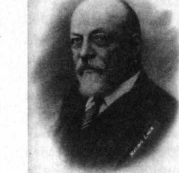

Sabah herkes yeni bir savaşa hazır olacaktı.
SON DAKİKAYA kadar kuşku içinde bekleyen İstanbul'da, sonucu bildiren telgraf üzerine kıyamet koptu.
Sadrazam Sait Halim Paşa bile o kadar düşkün olduğu protokolü unutup herkesle sarmaş dolaş oldu.
Başkomutanlıkta da Bronsard Paşa, sonra da şube şefi Almanlar Enver Paşayı kutladılar. Şaşkın bir sevinç içindeydiler.
Zafer kulaktan kulağa yayıldı.
Halk sokaklara döküldü. Evler, dükkânlar bayraklarla donatıldı. Minarelerin kandilleri yakıldı.
Süleymaniye camisinin yaşlı mahyacısı çıraklarıyla geldi, düşündüğü cümleyi iki minare arasına kandillerle yazıp yatsı namazına yetiştirdi:
"Çanakkale geçilmez"
Bu kısacık cümle yıldırım hızıyla dört bir yana yayılıp benimsenecek, milli bir parola olacaktı.
Birçok İstanbullu motorlara, sandallara doluşup marşlar, şarkılar söyleyerek Boğaz'ı gezmeye çıktı.
Günlerdir azap içinde yaşayan binlerce erkeği işinden evine taşıyan Boğaz vapurları bayram yerine döndü. Ada vapurundaki şamatacı Rumların bile sesi kesildi.
Aylı yıldızlı bir İstanbul gecesi başlamıştı. Boğaziçi ışıltılar içindeydi. Deniz de bu sevinci paylaşıyor gibiydi.
Orhan'ı cumbaya oturttular. Hepsi gözleri dolu dolu Boğaz'ı seyrettiler. Sözün gereksiz olduğu çok özel bir saatti.
Büyükdere'de Nesrin odasına kaçmış, rahat rahat sevinç gözyaşları döküyordu. Saldırının başladığı haberi okula öğleyin gelmiş, akılları Çanakkale'de kalmıştı. Sonucu eve döndükten sonra dayısının telefonuyla öğrenmiş, sevinçten delirmişti. Paşa babası da delirmişti. Ama onu İngilizlerin yenilmesi delirtmişti. Çanakkale'yi geçip İstanbul'a gelmelerini, İttihatçıları iktidardan atmalarını istiyordu.
Sonrası kolaydı. Onun gözünde İngiltere dünyanın efendisiydi. Ona karşı gelinemezdi. Hürriyet ve İtilaf Partisi'nin birçok üyesi de Nesrin'in paşababası gibi düşünüyordu. İngiltere'nin uzun zamandır Osmanlı Devleti'ni parçalamak, Türkleri ezmek için durmaksızın çalıştığını bildikleri halde İngiliz bağımlılığından cayamıyorlardı. Bağımsız, onurlu bir devlet olmanın zevkini hiç tanımıyor, anlamıyor, tatmak da istemiyorlardı.
Nesrin'in dayısı Teğmen Vedat ve birkaç arkadaşı, bu akşam evlere dağılmadılar, üniformalarını çıkarmadan, Tokatlayana gittiler. Büyük yemek salonunda, göze çarpan bir masaya oturdular, bol meze ve rakı istediler. Levantenlerin, İstanbul'da kalmış İngiliz ve Fransızların öfkeli, hayal kırıklığına uğramış, kıskanç bakışları altında zaferin keyfini çıkaracaklardı.
Teğmen Faruk bu gece okulda nöbetçiydi. Nöbetçi subayların odası Boğaz'ı görüyordu. Yorgun İstanbulluların, zafer şerefine bütün ışıklarını yakmış olan Boğaz vapurlarından taşan mutlulukları nöbetçi subayları duygulandırdı.
Binbaşı içini çekti:
"Türkler sevinmek için neden hep bu kadar ağır bedel ödemek zorundadır?"
Birleşik Donanma'nın zaferini bekleyen Ermeniler ve Rumlar hazırladıkları bayrakları sandıklara kaldırdılar.51
Türk zaferi, Rusları, özellikle de İstanbul'a çıkartma yapmak için Birleşik Donanmanın Marmara'ya geçmesini ve Yavuz'u ezmesini bekleyen Odesa'daki birliğin komutanı General İstomin'i ve Çar II.
Nicola'yı üzüntüye boğdu.
ABD Büyükelçisi Morgenthau ile İstanbul'a gelmelerini beklediği kibar İngiliz amiralleri için odalar hazırlatmış olan eşi de çok üzüldüler. Büyükelçi daha yakında Çanakkale'ye gitmiş, her yeri gezmiş, Türk savunmasının eskiliğini, yetersizliğini kendi gözleriyle görmüştü.
"Şunlar, şu Türkler, o müthiş donanmayı nasıl yendiler?"52
Sinirden yüzünü kaşıya kaşıya kanattı.
Bu başarı Türkleri çok şımartacaktı.
Londra akşam gazeteleri, sonucun zaferle biteceğine o kadar güveniyorlardı ki duraksamadan Çanakkale'nin geçildiğini, donanmanın Marmara'ya girdiğini bildirdiler. Halk keyifle pup'ları dolduracak, sansür dolayısıyla yumuşatılmış gerçeği ancak ertesi gün öğrenebilecekti.
AMİRAL DE ROBECK çok sinirliydi. Amiral Carden'i hasta eden olasılık kendi komutanlığı sırasında gerçekleşmişti. Yenilmişlerdi.
Carden'in korktuğu ne varsa hepsi başına gelmişti. Üç zırhlı batmıştı, beş zırhlı ağır yaralıydı, bine yakın denizci kaybedilmişti. Donanma çökmüştü.
Nasıl olmuştu bu?
Eski İngilizlerin saygıyla andıkları 'Koca Türk' geri mi dönmüştü?
Ne olmuştu?
Albay Keyes "yenilmedik, çekildik" diyordu. İyimserliğini koruyor, cephane getirtip birkaç gün içinde yeniden saldırmayı öneriyordu. Bu kez Boğaz'ın kesinlikle geçileceğine inanmaktaydı.
Hareketsiz kalıp yenilgiyi kabullenmek doğru olmazdı, olmayacaktı.
Kral, Lordlar Kamarası, Avam Kamarası, Başbakan, hükümet, Savaş Kurulu, Churchill, Lord Ficher, Lord Kitchener, basın, kamuoyu, hiçbiri, hiç kimse bu yenilgiyi bağışlamazdı. İmparatorluk Hindistan’da saygınlığını, Yakın Doğu'da etkisini yitirirdi.
Çabuk bir zafer şarttı.
Amiral de Robeck gereken hazırlığı yaparak yeniden saldırmaya karar verdi.
BU SAATTE General Hamilton da Lord Kitchener'e günün raporunu yazmaktaydı. Donanmanın sefil bir halde Boğaz'ı terk edişini, en sağlam gemilerin bile yara bere içinde olduklarını görmüş, içi sızlamıştı.
Dar, uzun bir su yolu, karadaki topların tehdidi altında, yalnız donanmanın zorlamasıyla geçilemezdi.
Deniz ve kara işbirliğine gerek vardı.
Birleşik Ordu kara yoluyla Geçit'e varır, oradaki tabyaları ele geçirir, susturur, Boğaz'ı ve İstanbul yolunu donanmaya açardı. Orgeneral Hamilton bunu başaracağına güveniyordu.
19 MART sabahı İstanbul'da zafer şenlikleri yeniden başladı. Birbirlerini tanımayanlar bile selamlaşıyor, konuşuyor, ayrılırken kucaklaşıp öpüşüyorlardı.
Zafer haberi dün akşam şimşek gibi çakmıştı. Bugün neler olduğu hakkında geniş bilgi gelmeye başladı. Zaferin büyüklüğü daha iyi anlaşıldı.
Birçok insanın duruşu, yürüyüşü, bakışı değişti.
Bu sevinç, eğer sürerse, cemaat, aşiret, kabile, boy, soy, bölge, tarikat, mezhep halinde parça parça, bölük pörçük yaşayan Anadolu halkını birleştirecek, yurt kardeşi, millet yapacaktı.
Özlenen, hak edilen dirliği bu güzel birlik sağlardı.
Üçüncü Bölüm
Hazırlık
20 Mart 1915-24 Nisan 1915
20 MART günü hava kapalı ve rüzgârlıydı. Ertesi gün de kötü gitti. Donanma Mondros ve Bozcaada'da sıkışıp kaldı. Felaketin büyüklüğünü, düşündükçe kavrıyorlardı. Yenilmişlerdi.
Boğaz'ı, önemsemedikleri Koca Türk'e bırakıp çekilmişlerdi. Donanma yenilginin nedenlerini saptamakta bile güçlük çekmekteydi: Topçular mı, mayın hatları mı, akıntıya bırakılan serseri mayınlar mı, kıyıdaki torpil yuvaları mı?
Londra da sonuca inanmakta zorlanıyordu.
Churchill çok ağır bir yara almıştı.
Darbe o kadar şiddetliydi ki kimsede olaylara yön verecek bir güç ve heves bırakmamıştı.
TÜRKLER 18 Martın kazandırdığı büyük bir özgüven içinde, geleceği kestirmeye çalışıyorlardı. İki olasılık görünüyordu:
Boğaz'ı ya yeniden donanma ile zorlayacak ya da donanma ve ordu işbirliği ile geçmeye çalışacaklardı.
3. Kolorduya ve Müstahkem Mevkiye bağlı bütün birlikler her iki olasılığa göre hazır, bekliyorlardı.
GAZETE satışlarında hiç rastlanmamış bir artış yaşanmakta, sabah ve akşam gazeteleri kapış kapış
satılmaktaydı.
Kahvelerde meraklılar, okuma yazma bilenlere, çevrelerinde toplanarak Çanakkale haberlerini, yazılarını yüksek sesle okusun diye yalvarıyorlardı.
18 Marta iliĢkin bazı ayrıntılar öğrenilmeye baĢlandı. 275 kiloluk mermiyi kaldıran Seyit'in fotoğrafı ilk kez gazetelerde yer aldı. Dardanos bataryasının Ģehit subayları tanıtıldı. Bu resimler çerçeveletilip duvarlara asıldı. Topçulara armağan olarak binlerce paket sigara yollandı.
Gerçek bilgiler halk muhayyilesini doyurmuyordu. Kaç yılın zafer açlığı vardı. Olayları süslemeye baĢladılar:
"Ġki batarya birbiriyle iddiaya girmiĢ, kim Ġngiliz komutanın direkteki forsunu vurup da indirecek diye. Fors dediğin el kadar bir Ģey. Ġkisi aynı anda vurup forsu duman etmiĢler. Ġngiliz komutan
'bunlar topla kırlangıç bile avlarlar, en iyisi buradan kaçmak' demiĢ, donanmasını toplayıp gitmiĢ."
"Güle güle!"
"Mecidiye tabyasında çok eski iki top varmıĢ. Gece oldu mu bunların eski mürettebatı gelir talim yapar, gönül kulağı açık olanlar seslerini duyarlarmıĢ. 18 Mart günü bu toplar da savaĢa katılmıĢ.
Bunların ne mermisi bitiyor ne hedefini ĢaĢırıyor. O koca donanma nasıl yenildi sanırsın?"
"ĠĢte böyle, Allah'ın lütfuyla."
Buna benzer öyküler bir gün sonra unutuluyor, yerlerini yeniler alıyordu.
Dilber'in babasının Üsküdar çarĢısında küçük bir baharatçı dükkânı vardı. Eve gelince elini yüzünü yıkayıp hemen Orhan'ın yanına çıkıyor, akĢama kadar dükkândan dükkâna yayılan bu tür halk süslemelerini keyifle anlatıyordu.
Bu yakıĢtırmalar Orhan'ı çok mutlu etmekteydi.
Hayalinin uyanması halkın canlandığını gösteriyordu.
BU KENETLENME, coĢku, hele bilinçlenme Almanları rahatsız etmeye baĢlamıĢtı. Emperyalizme, sömürüye karĢı uyanma, dayanıĢma, birlik, yurtseverlik, hele tam bağımsızlık hevesi, Türkiye için düĢündükleri gelecek için çok tehlikeliydi. Türkiye'yi Ġngilizlerin Mısır'ı kullanıp sömürdüğü gibi kullanıp sömürmeyi düĢünüyorlardı. Dost, silah arkadaĢı Almanya'nın Türkiye hakkındaki niyeti buydu.1
Büyüyen milli duygunun ve gururun hızını kesmek, özgüveni Itrsmak için Ģimdilik el altından bu zaferin Almanlar sayesinde I- .1 /.anıldığını yaymayı planladılar. Bu iddiayı ilerde yazıya da dökeceklerdi.
Türkiye'nin önünde açık düĢman olarak Ġngilizler, Fransızlar Vt KuĢlar vardı, arkasında ise gizli tehlike Almanya. Türkiye örsle çekiç arasındaydı. Ya ezilip gidecek ya çelikleĢecekti.
ASTEĞMEN MUCĠP (Kemalyeri) ile bir takımın komutanlığına atanan subay adayı Medeni, çabucak ısınıp kaynaĢtılar. Ġkisi de on dokuz yaĢındaydı.
Zafer ikisini de mest etmiĢti.
Mucip dedi ki:
"Ne düĢündüm biliyor musun bütün gece? Demek ki biz istesek baĢka, büyük, yararlı, güzel Ģeyler yapmayı da baĢarabiliriz. Söz gelimi ilkellikten, cahillikten, gerilikten, yoksulluktan, hurafe-< ilikten, yobazlıktan, kadını hor görmekten, yabancıya tapmaktan kurtulabiliriz. Biz de ilaç ve silah fabrikaları kurabiliriz."
"Nasıl?"
"Bizim kuĢağımıza düĢen görev iĢte bu 'nasıl?' sorusunun yanıtını bulmak. Sana bir kitap vereyim de oku." "Ver!"
Kitabı uzattı:
"Bu Celal Nuri Bey (Ġleri) adlı bir gazetecinin kitabı. Adı Ta-rih-i Tedenniyat-ı Osmaniye (Osmanlının Gerileme Tarihi). 'Gidecek baĢka yer yok, burayı adam edelim' diyor. Nasıl sorusuna yanıt arıyor.
Birçok öneride bulunuyor. Ġkisini söyleyeyim: Latin harflerinin kabulü, aile hayatının kadın ve erkek eĢitliğini esas alacak modern bir yasa ile düzenlenmesi."1"
Medeninin ağzı açık kaldı.
Olabilir miydi bu?
Bu geri, ilkel durumdan yararlananlar, devletin ve milletin uygarlaĢmasına, uyanmasına, kadın-erkek eĢitliğine izin verirler miydi?
BirleĢik Donanmayı yenmekten daha zordu bu.
22 MART Pazertesi günü saat 10.00'da Queen Elizabeth'te bir toplantı yapıldı.
Amiral de Robeck'in ikinci saldırı kararını ve tarihini açıklayacağı sanılıyordu.
Bu bakımdan toplantı büyük önem taĢıyordu.
Toplantıya Üs Komutanı Amiral Wemyss, General Hamilton, Hamilton'un Kurmay BaĢkanı General Braithwaite ve Kurmay Albay Pollen katıldı. Ġlerde çok ünlenecek olan Anzak Kolordusu Komutanı General Birdwood da gelmiĢti.
Donanmadan kimse yoktu.
Amiral de Robeck'in yüzü o felaketlerle dolu günün yorgunluğunu taĢıyordu. Ama bir karara varmıĢ
insanların sakinliği içindeydi.
"Gemilerimizi kaybetmiĢ olmaktan dolayı üzgünüm, onları hatırladıkça kalbim sızlıyor.." dedi, uzunca bir sessizlikten sonra, kararını açıkladı:
"..Üç gündür her olasılığı düĢündüm. Kara birliklerinin desteği olmadan yalnız donanmanın Çanakkale Boğazını aĢamayacağına kesin kanaat getirdim."
Karar saldırıdan yana olan Amiral Wemyss'i çok ĢaĢırttı. Ke-yes duyunca delirecekti herhalde.
Bu açıklamadan sonra tartıĢmayı gerektirecek bir sorun kalmadı. Birlikte hareket edilecekti. Kısacası donanmanın desteğinde bir çıkarma yapılacaktı. Amaç donanmaya yol vermeyen Geçit'teki tabyaları kara kuvvetleriyle ele geçirmekti. Bunu sağlamak için nereye çıkılmalıydı? Coğrafya bu konuda ne diyordu?
Haritalar açıldı.2
Tarihte benzeri bulunmayan bir yeni savaĢı kurgulamaya koyuldular. Verecekleri her karar on binlerce gencin hayatını ilgilendirecekti. Ama bir iskambil oyununa hazırlanıyor gibi soğukkanlıydılar.
HARBĠYE NEZARETĠ Ordu Dairesi Müdür Yardımcısı Yarbay Behiç Erkin, Harekât ġubesi Müdürü Yarbay Ġsmet Ġnönü'nün odasına baktı, yalnız olduğunu görünce girdi.
Her zaman ciddi, ağırbaĢlı, kararlı bir adamdı. Bugün yüz çizgileri daha da keskinleĢmiĢ gibiydi.
"Çanakkale için ne düĢünülüyor? Orayı güçlendirmemiz gerek. Ġstanbul ve çevresinde birçok iyi tümeniniz var. Ama bu konuda bize bir emir gelmedi. ġimdi önlem almazsak ilerde sıkıĢabiliriz. Ne oluyor?"
Yarbay Behiç Bey
Birliklerin durumunu iyi biliyordu. Çünkü çalıĢtığı dairenin görev konusu birliklerdi. Ġsmet Bey kırgın, huzursuz bir sesle yanıtladı:
"Bize bir Ģey söylenmiyor, sorulmuyor. Çanakkale için yeni bir ordu kurulması düĢünülüyor galiba.
Bu konuda Alman Büyükelçiliği, Amiral Souchon, Liman PaĢa devrede. Bu hava içinde Enver PaĢanın bu yeni orduya bir Alman komutan atayacağını sanıyorum."
Behiç Bey üzülerek baktı:
"Alman Çanakkale'ye Almanya'nın güvenliği ile yakından ilgili bir savaĢ alanı diye bakar, Türk ise vatanım diye. Arada dünya kadar fark var."3
HAVA KEġĠFLERĠ çok önem kazanmıĢtı.
6 uçak taĢıyabilen bir uçak gemisi yeterli değildi artık. Bozcaada'da Yarbay Samson komutasında 18
uçaktan oluĢan bir Ġngi-liz-Fransız karma hava birliği kuruldu.
Uçakların sayısı daha da artacak, yeni bir uçak gemisi ve bir de balon gemisi gelecekti. Uçaklarla yer arasında iletiĢimi sağlamak için laboratuarlar, üniversitelerin teknoloji bölümleri, firmaların araĢtırma birimleri sürekli araĢtırma yapıyorlardı.4
Buna karĢılık BaĢkomutanlık Çanakkale'ye yeni uçak bile yol-layamadı, çünkü yoktu. Var olan üç uçak 'hava bölüğü' diye adlandırıldı, komutanlığına bir Alman teğmen getirildi. Deniz YüzbaĢı Hüseyin de gözlemci olarak görevlendirildi.
KeĢif uçuĢları baĢladı.
Ġki yanın hava kuvvetleri arasındaki büyük fark, savaĢ sonuna kadar kapatılamayacaktır.
ĠZZETTĠN BEY'Ġ Eceabat iskelesinde M. Kemal'in emir subayı Teğmen Kâzım karĢıladı. Ayrılan küçük eve götürdü. BinbaĢı tıraĢ oldu. Komutan her gün mutlaka tıraĢ olur, bütün subaylarını da öyle isterdi. Üç gündür yoldaydı. Kendine çeki düzen verdikten sonra karargâha gitti. M. Kemal Ġzzettin Bey'i görünce pek sevindi:
"HoĢgeldin."
"HoĢbulduk efendim."
Oturdular.
M. Kemal yapılması gerekli iĢleri ve çözüm bekleyen sorunları saydı, "En önemli sorunumuz.." dedi,
"..Tümenin bütün tüfekleri eski model. Bunların değiĢmeleri kesin Ģart. Bu iĢin amansız takipçisi ol."
"BaĢüstüne!"
Zaman hızlı akıyordu. Ġzzettin Bey kahvesini içer içmez iĢe giriĢti. Saygılı, dikkatli, ayrıntıları atlamayan bir çalıĢma yöntemi vardı.
CEMAL PAġANIN çalıĢma yöntemi ise, CemalpaĢaca bir yöntemdi.
4. Ordu ikinci SüveyĢ seferine hazırlanıyordu. Enver ve Cemal PaĢaların Mısır hayalleri sürmekteydi.
Birinci seferden çok ders alınmıĢtı. ġimdi Sina çölünü geçmek için kara ve demiryolu yaptırılıyor, kuyular, havuzlar açılıyor, mola yerleri hazırlanıyordu. Almanlardan borç olarak alınan onbirce altın Mısır'ın yeni fethi için harcanıyordu. Anadolu'nun payına bir altın bile düĢmeyecekti.
Bir yol yapılacağı zaman uzunluğu dikkate alınarak uygun bir bitiĢ günü saptanıyor, bu iĢ için bir mühendis yazıyla görevlendiriliyor, görev yazısının altına Cemal PaĢa Ģu notu ekliyordu:
"Bitmesi gereken tarihte yolu otomobille denetleyeceğim. Otomobil yürüyemez de nerede durursa, yolun yapımıyla görevli mühendis oraya gömülecektir."5
Korkutma yöntemini idamlar izleyecekti.
Suriye ve Filistin'de Cemal PaĢa'nın ünü hızla yayılıyor, Osmanlının azalmakta olan saygınlığı aynı hızla tükeniyordu.
MISIR'DA Avustralyalı ve Yeni Zelandalı birliklerin yanında,53 I Hintliler, Gurkalar, Sihler, Seylanlılar da vardı. Yeni Zelanda birliğinde Yeni Zelanda'nın yerlisi Maoriler de yer alıyordu.
Bunlara Ġngiltere'den gelen iyi eğitilmiĢ, örnek birlikler de katılmaya baĢladı.
Ġngiliz propaganda makinesi bu genç insanları Çanakkale'ye hazırlamak için harekete geçti.
Ġngiltere'nin komĢusu bile olmayan Türkiye'ye saldırılacaktı. Türklerden nefret etmeleri için birçok olumsuz, küçültücü, aĢağılayıcı söylenti, olay, fıkra yarattılar, kulaktan kulağa yaydılar:
"Türkler uygarlıktan uzak, öldürülmeyi hak eden, Hıristiyanlığın düĢmanı, Avrupa'dan kovulması gereken, ilkel bir millet! Unutmayın, esir olanları öldürüyorlar!"
Korkak Abdul
Anzaklar ne bu savaĢın nedenlerini biliyorlardı, ne Türkiye'yi, ne de Türkleri. Kimi macera, kimi para, kimi eski Korkak Abdul vatan Ġngiltere'ye hizmet diye gönüllü gelmiĢ, uçarı gençlerdi.
Söylenenlere inandılar. Anzakların gözünde Mısırlı fellahlara benzeyen, ĢiĢman, fesli, entarili, çıplak ayaklı, aptal suratlı, sinsi, barbar bir Türk imajı oluĢmaya baĢladı. Bu Türk'e bir de ad verdiler:
"Korkak Abdul"
Mısır'a en son Fransızlar ile sömürgelerinin askerleri sökün etti. Fransızlar Müslüman Tunusluları, Cezayirlileri, Senegallileri, Müslüman Türklerle savaĢmaya getirmiĢlerdi.
Tarihin en büyük çıkarma hareketi için çok yoğun bir eğitim baĢladı.
KIZILAY'IN açtığı hemĢirelik kursu baĢarıyla sürmekteydi.
Kursta yaĢça, eğitimce, gelirce farklı hanımlar vardı. Topluma bir katkıda bulunmak, varlıklarına bir anlam kazandırmak isteği hoĢ bir birliktelik yaratmıĢtı. Bu kursa katılmak elbette kolay olmamıĢtı.
Aile evet dese bile, yakın çevre ya yadırgamıĢ, ya karĢı çıkmıĢtı.
"Neeeee? Yabancı bir erkeğe dokunacaksınız ha?"
Cesareti kırılarak kursu bırakanlar çok olmuĢtu. Direnip bırakmayanlar da az değildi. Dersler peçesiz yapılıyor, uygulamalar sırasında beyaz gömlek giyiliyor, beyaz baĢörtüsü takılıyordu.
Kısa süreli kurslarla da hanım hastabakıcılar yetiĢtiriliyordu.
HemĢireliğin önemini, yararını kavradıkça huzur buluyor, rahatlıyorlardı. Hür kadınlığın yolunu açtıklarının da farkındaydılar.
ÇANAKKALE konusunda iyice gecikmiĢ olan Enver PaĢa 24 Mart günü, öğleden sonra Liman PaĢayı ziyarete geldi. Oturdular.
Enver PaĢa konuyu açtı.
Çanakkale için bir ordu kurulmasını kabul etmiĢti. Bu ordunun hızla faaliyete geçmesini ve Çanakkale savunmasını üstlenmesini istiyordu. Liman PaĢa acaba bu yeni ordunun komutanlığını kabul eder miydi?
Görev olağanüstü önemliydi. Tarih önünde çok büyük bir sorumluluktu. Osmanlı Devletinin varlığıyla ilgiliydi. Liman PaĢa bu büyük öneriyi, hiç düĢünmeden kabul etti:
"Memnuniyetle. 1. Orduyu kime devredeceğimi belirleyin, yarın Gelibolu'ya hareket edeyim. Çünkü kaybedecek vakit yok. Çanakkale çevresindeki birliklerin yeterli olmadığını düĢünüyorum. Takviye etmenizi rica edeceğim."
Geleceği çok etkileyecek olan konuĢma bu kadar kısa ve böyle sade geçmiĢti.6
Liman PaĢa ertesi günü 1. Ordu Komutanlığını yine bir Almana, General von der Golz'a devretti.
Kızları Ġstanbul'daydı. Onlarla vedalaĢtı.
AkĢam deniz yoluyla Gelibolu'ya hareket etti.
Yanına 1. Ordudaki Kurmay BaĢkanı Yarbay Kâzım Ġnanç ile iki yaverini, Süvari BinbaĢı (Alman rütbesi yüzbaĢı) Mühlmann ve yine Süvari BinbaĢı (yüzbaĢı) Prigge'yi almıĢtı. Karargâh kadrosu birkaç gün sonra yola çıkacaktı.
Kamarasına kapanıp haritaları açtı.
Müttefikler Çanakkale'yi geçip Ġstanbul'a girerlerse, Alman ve Avusturya cephesini güneyden kuĢatır, Balkan devletlerini kendi yanlarına çeker, Rusya'yı iyice canlandırır ve savaĢı kazanırlardı.
Tanrı korusun!
Almanya'nın yüksek çıkarı için Ġngiliz ve Fransız donanmasını ve kara ordusunu durdurmak gerekiyordu. SarıkamıĢ'ta, SüveyĢ'te yenilen Türk ordusuna güvenmek zordu. Donanmanın yoğun ateĢine ne toprak siperler dayanabilirdi, ne de Türk askeri. Ordunun elinde yeterli sayıda ağır makineli tüfek, top ve top mermisi yoktu. Kıyıları çıkılması zor hale getirmek için gerekli olan kara mayını ve tel örgü de yoktu. Ama düĢmanı durdurmalıydı.
Bunu nasıl baĢarabilirdi?
DüĢmanın nereye, nerelere çıkarma yapacağını da doğru kestirmek gerekiyordu.
Bütün gece harita baĢında kalarak bu iki soruya yanıt aradı.
LĠMAN PAġA'NIN ordu komutanlığına atandığı gündüz bildirilmiĢti. Bu atama 3. Kolordu Karargâhındakilerin hiçbirini memnun etmemiĢti.
"Eyvah!"
PaĢayı yakından, uzaktan, ününden biliyorlardı: Astına söz hakkı tanımayan, danıĢmayı küçüklük sayan, kaba, itiraza gelmeyen, ırkçı bir Prusyalı.
Bu geliĢme yalnız Esat PaĢayı sevindirmiĢti:
"Koca mareĢal, Reform Kurulu BaĢkanı, Alman Ġmparatorunun en güvendiği adam. Daha ne olsun?
Ayıp etmeyin!"
Bir komutana itiraz etmek zaten Esat PaĢa'nın aklının almayacağı bir Ģeydi. Hele komutan bir mareĢal ise Esat PaĢa büsbütün itaatli olacaktı.
Kurmayları bu ürkütüyordu iĢte.
Çanakkale savunma düzeni hakkında ciddi bir bilgisi yoktu. Bu yetersiz bilgi ile savunma anlayıĢım ve düzenini değiĢtirmek isterse buna itiraz etmek gerekecekti. Çünkü Türklerin kurduğu bir düzeni ilke olarak beğenmeyip yerine yeni bir düzen kurmak Almanların değiĢmez tutumuydu. Hatta bir Alman, kendinden önceki Almanın yaptığını da değiĢtirmeden rahat edemiyordu.
Esat PaĢa mutlak itaate dayalı askerlik anlayıĢıyla itiraza izin vermezse, ne yapacaklardı?
Çanakkale anavatanın kapısıydı.
26. ALAYIN 3. Tabur Komutanı BinbaĢı Mahmut Sabri Bey taburun imamı Abdülkadir Efendiyi çağırdı.
Efendi sevilen, sayılan bir din adamıydı. Askeri kurallara titizlikle uyar, bilmediği konularda susmayı bilirdi. BinbaĢıyı saygıyla selamladı. Oturdular.
"Abdülkadir Efendi, bugün 10. Bölük askerlerine yaptığın konuĢmayı dinledim. Çok güzel bir konuĢmaydı. SavaĢta Allah'ın Türk askerini esirgeyeceğini söyledin. Ġyi ettin. Askerimiz buna inanır.
Ben de inanırım. Bu inanıĢ bize büyük bir güç, sabır ve gözüpeklik verir. Ölümden korkmayız. Ama eksik konuĢtun. Allah Türk askerini esirger ama hepsini değil. Bunu söylemedin. Haini, gafili, yalancıyı, tembeli, kaçağı, bölücüyü, suçluyu, bozguncuyu, fesatçıyı, bencili de esirger mi?"
Abdülkadir Efendi hiç düĢünmedi:
"Esirgemez elbette."
"Esirgemez ya. Bunları olsa olsa Ģeytan esirger.." GülüĢtüler.
"..Yüce Allah herhalde çalıĢkan, yurtsever, namuslu askeri, böyle askerlerden kurulu bir orduyu korur. Hiç çalıĢmadan, çabalamadan, sırf iman gücü ve dua yardımıyla savaĢ kazanılmaz. Kazanılsaydı, yüzyıldır yenile yenile baĢımız dönmezdi. ÇalıĢmak, öğrenmek, zamanın Ģartlarını dikkate almak, kafayı da, silahları da yenilemek gerek. Kısacası kazanmak için çalıĢmak ve Allah'ın yardımını, esirgemesini, korumasını hak etmek gerek. Bunu söyle."
"BaĢüstüne."
26 MART sabahı Liman PaĢa Gelibolu'ya geldi.
Kolordu Komutanı Esat PaĢa, karargâh mensupları, Müstahkem Mevki Komutanı Cevat PaĢa, karargâhı Gelibolu'da bulunan 7. Tümen Komutanı ile Gelibolu Mutasarrıfı karĢıladılar.7
Komutan için eski Fransız konsolosunun evi hazırlanmıĢ, ordu karargâhı için de büyükçe bir ev bulunmuĢtu.
Komutan karĢılayıcılara teĢekkür etti, dinlenmek istediğini söyleyerek kendisi için hazırlanmıĢ eve kapandı.
Bir süre birlikte olacaklarını ümit edenler hayal kırıklığına uğradılar. Fakat bir olay kurmayları sevindirdi: Kâzım Bey'in Ordu Kurmay BaĢkanı olarak gelmesi. Orduda 'Diyarbakırlı' diye tanınan, Enver PaĢa'nın sınıf arkadaĢı, dil bilir, Ģakacı, nazik bir subaydı. Üstün bir kurmay değildi ama Liman PaĢa gibi zor bir adamı idare edebilmesi iyi bir diplomat olduğunu gösteriyordu.
Bir yanlıĢlık olursa onun yardımıyla düzeltilebilirdi.
5. ORDU KOMUTANI Liman PaĢa, o gün, evden çıkmadan, hiçbir yetkiliyle görüĢmeden, son durumu görüp incelemeden, savunma anlayıĢının gerekçelerini öğrenmeden, Çanakkale'nin geleceğini belirleyen uzun bir rapor yazdı, akĢam üstü Ģifreletti ve Enver PaĢaya telgrafla gönderdi.8
3. Kolordu kurmaylarının korktuğu oluyordu.
Ordu Komutanı Türk komutan ve kurmaylarının bütün olasılıkları dikkate alarak hazırladıkları ve aylardır uygulayageldikleri düzeni bütünüyle altüst edecek yeni bir düzen kurmayı tasarlamıĢ, BaĢkomutanlığa bu yeni düzeni önermiĢti.
BU ÖNERĠYĠ aldığı zaman Enver PaĢa Edirne'deydi. Ġstanbul'a döndü.
Hemen yanıt vermesi gerekti. Ama araya yanıtı geciktirecek büyük bir sorun girdi: Amiral Eberhard komutasındaki Rus Karadeniz Donanması 28 Mart günü Ġstanbul Boğazı açığında göründü, yayılıp savaĢ düzeni aldı. Bu hareketi Türklerin dikkatini Ġstanbul Boğazı'na çekmek için General Hamilton istemiĢti.9
Filo sinir bozucu biçimde iki gün kımıldamadan bekledi. Yavuz Boğaz'dan çıksa kaçacaklardı. Ama Amiral Souchon bir türlü karar verip de Yavuz'u harekete geçirememiĢti.
Bu suskunluk Rus donanmasına cesaret verdi. Üçüncü gün (30 Mart) Boğaz ağzındaki tabyaları yoğun bir biçimde bombaladı.
Ġstanbulluların yürekleri ağızlarına gelmiĢti. Daha Çanakkale zaferinin tadını çıkarmadan bu kez de Ġstanbul Boğazı savaĢı mı baĢlıyordu?
O güçlü Yavuz nerdeydi?
Nihayet Yavuz ve bazı Türk savaĢ gemileri Boğaz'dan dıĢarı çıktılar. Rus filosu çekip gitmiĢti.10
Enver PaĢa rahatladı.
ġimdi Liman PaĢaya verilecek yanıta sıra gelmiĢti. Bu süre içinde Liman PaĢa düĢüncelerini BaĢkomutanın yanıtını beklemeden, uygulamaya koymuĢtu bile.
LĠMAN PAġA ilk olarak Saros'a gitmiĢ, savunma düzenini gözden geçirmiĢti.
En tehlikeli bulduğu yer orasıydı.
31 Mart ÇarĢamba günü yaverleri, Esat PaĢa ve kolordudan bir kurmay ile Eceabat'a geldi.
Gelecekleri 9. ve 19. Tümen Komutanlarına bildirilmiĢti. 9. Tümen Komutanı Albay Halil Sami Bey ve 19. Tümen Komutanı Yarbay M. Kemal komutanları iskelede karĢıladılar.
Liman PaĢanın M. Kemal'e soğuk davranması, Esat PaĢayı ĢaĢırttı ama nedenini soramadı. M. Kemal bu tavrı çok doğal bulmuĢtu. Almanlara güvensizliğini açıklamıĢ birine Liman PaĢa'nın dostça davranması beklenemezdi.
Gelenler için güzel atlar hazırlanmıĢtı.
Önce Kabatepe'ye, sonra Alçıtepe'ye gidilecekti.11 Ordu Komutanı daha kararını açıklamadığı için olası savaĢ alanlarına duyduğu bu ilgi büyük memnunluk uyandırmıĢtı. Araziyi ve savunma düzenlerini görerek ve ilgili komutanları dinleyerek bir değerlendirme yapacağı sanıldı.
Yanıldıklarını Kabatepe'de anlayacaklardı.
Kabatepe'nin güneyi ve kuzeyi çıkarma yapılması olasılığı en yüksek olan iki yerdi. Bu kesimden 27.
Alay sorumluydu. Komutanları, 27. Alay Komutanı Yarbay ġefik Bey ile Kabatepe'den sorumlu 3.
Tabur Komutanı YüzbaĢı Halis Bey karĢıladılar.
Kabatepe'nin kuzeyi de güneyi de iyi berkitilmiĢti. Savunma düzeni, düĢmanı, en zayıf olduğu anda, yani karaya çıkarken imha etmek esası üzerine kurulmuĢtu. Alayın büyük kısmı bu nedenle kıyıya ve kıyı yakınına yerleĢtirilmiĢti. Üçte biri çabuk yetiĢebileceği uygun bir uzaklıkta, yedekteydi (Kocadere köyünde). Ağır makineli tüfekler, nordanfieldler12 gizli, sağlam yuvalara, yerlere yerleĢtirilmiĢti.
Eldeki az tel örgü de iyi değerlendirilmiĢti.
Esat PaĢa burayı ilk kez görüyordu. MareĢalin yanında izinsiz düĢünce belirtmek gibi bir saygısızlık yapmamak için susuyordu ama çok beğendiği yüzünden belli oluyordu. Albay Halil Sami Bey temiz kalpli, duyarlı, onuruna çok düĢkün bir komutandı. Liman PaĢa'dan övgü geleceğini sanarak saygıyla beklemekteydi.
Liman PaĢa verilen bilgileri yarım kulak dinliyor, gözleriyle çevreyi tarıyordu. Sıkıldığı belliydi.
Sonunda patladı:
"Hayır! Bunlar bütünüyle yanlıĢ! Ordumuzun savunmak zorunda olduğu kıyıların uzunluğu 120 km.
Bu uzunlukta bir kıyı, birlikleri böyle yan yana dizerek, parmaklık düzeni kurularak savunulamaz.
Eldeki birlik sayısı buna yetmez. Ayrıca düĢman donanmasının yoğun ateĢi altında asker asla tutunamaz. Bombardımandan sonra savaĢa devam edecek cesareti de kalmaz. Daha savaĢ
baĢlamadan çok büyük kayıp veririz. Onun için bu düzen tümüyle değiĢecek. Kıyıda gözcü postaları, küçük güvenlik birlikleri bırakılacak, büyük kısım geriye alınacak, donanma ateĢinin eriĢemeyeceği kadar uzağa. Geride toplanan kuvvet, düĢman karaya çıktıktan sonra harekete geçecek. DüĢman süngü hücumuyla denize dökülecek."
Albay Halil Sami Bey çok düĢünülerek gerçekleĢtirilmiĢ olan savunma ve yerleĢim düzenini korumak istedi:
"Efendim, çok haklısınız. Bütün kıyılar elbette böyle korunamaz. Ünlü kuraldır, her yeri örtmeye kalkan hiçbir yeri örtemez. Ama her kıyı tehlikeli değil. Kimine çıkarma yapmak imkânsız, kimine çıkarma yapmanın bir yararı yok. Biz ancak, çıkarma yapılma olasılığı yüksek ve tehlikeli kesimleri böyle koruyoruz. Asker sayımız bunun için yeterli. Donanma ateĢinin eriĢemeyeceği uzaklık ancak 3-4 saatte aĢılabilecek bir uzaklık demektir. Kıyıya çıkan birlik iyice bir birlik ise, 3-4 saat içinde sağlamca yerleĢmiĢ olacaktır. Onu bir daha da oradan söküp atamayız. Süngü hücumu askerimizin erimesiyle sonuçlanır. Onun için izin verirseniz..."
Liman PaĢa fazla bile dayanmıĢtı. Albayın sözünü kesti:
"Yeter! Ġtirazı bırakıp ne dediğimi anlamaya çalıĢın. Esas kuvvet geriye gidecek, kıyılarda gözcüler, küçük birlikler kalacak. Ağır makineli tüfekler de, toplar da geriye gidecek. Bu silahların donanma ateĢi altında mahvolmalarına izin veremem. Donanma buraları çıkarma baĢlamadan önce dümdüz edecektir. Bu silahları düĢmanı denize dökmek için hücuma geçince kullanacağız."13
Halil Sami Bey yanıtlamak istediyse de Esat PaĢa 'sus!' diye iĢaret etti. Koca MareĢale ayaküstü itiraz etmek yakıĢık almazdı. Bu sorun sonra, çok gerekirse, saygı çerçevesinde ele alınırdı.
Liman PaĢa bir daha Halil Sami Bey'e bakmadı bile. Esat PaĢaya, Yarbay ġefik ve YüzbaĢı Halis Beylere ne yapılmasını istediğini arazi üzerinde göstererek açıkladı.
Sonra hiç konuĢulmadan hızla Alçı Tepeye gelindi. Türklerin neĢesi kalmamıĢtı. Uzaktan beyaz bir atlı geçti. Liman PaĢa düĢman beyaz rengi fark eder diye çok kızdı:
"Orduda hiçbir beyaz at istemiyorum!"14
Komutanları burada 25. Alay Komutanı Yarbay Ġrfan Bey karĢıladı. Halil Sami Bey dinlendirmek için Yarbay Kadri Bey'in 26. Alayını geri çekip bu kesimin sorumluluğunu 25. Alaya vermiĢti.
Alçı Tepe'deki gözetleme yerine çıkıldı. Alçı Tepe, Alçıtepe köyünden biraz geride, 217 m.
yüksekliğinde, bütün Seddülbahir bölgesine egemen, türlü diken ve çalılarla örtülü bir tepeydi.
Seddülbahir'e çıkarma yapacak kuvvetler için ilk hedef olacak, çok büyük önem kazanacaktı.
Alçı Tepe'den bütün Seddülbahir kıyıları, Boğaz'ın giriĢi, Anadolu yakası görünüyordu.
Liman PaĢa Seddülbahir kesiminin 25. Alayca tutulduğunu öğrendi. Ġrfan Bey'e emrini verdi:
"Kıyıda fazla birlik kalmayacak."
DüĢündüğü savunma düzenini bir daha açıkladı:
Asıl kuvvetler, geride, donanma ateĢinden uzakta, birarada bulunacak, çıkarma olursa topluca hücuma geçecek. Çıkarma yerleri kesin belli olunca, bütün birlikler yardıma koĢacak. DüĢman hep birlikte denize dökülecek.
"Güçlü düĢmanla ancak böyle oynak bir savunma düzeniyle baĢa çıkılabilir."15
Liman PaĢa'nın zaten Kabatepe ve Seddülbahir'i tehlikeli görmediği de anlaĢıldı. DüĢmanın öncelikle Saros'a, ikinci olarak karĢı yakadaki BeĢige'ye çıkarma yapacağını tahmin etmekteydi.
Saros'a çıkarak yarımadanın giriĢini kapatabilir, yarımadadaki Türk birliklerini boğabilirdi. En tehlikeli kesim Saros'tu.16
Eceabat'a dönüldü.
Halil Sami Bey ile M. Kemal, paĢaları yolcu eder etmez baĢ baĢa verdiler. Halil Sami Bey'in sinirleri bozulmuĢtu. Elleri titriyordu. Dokunulsa ağlayacak haldeydi:
"Liman PaĢa da, savunma düzenini korumak için tek sözcük bile etmeyen, üstelik beni susturan Esat PaĢa da, yarın düĢman buralara çıkıp yerleĢirse, onbinlerce gencimiz Ģehit olursa, hiç utanmayacaklar mı? Tarihin yüzüne nasıl bakacaklar?"17
Halil Sami Bey hayli söylenip sızlandıktan sonra, sordu:
"Ne yapmamı tavsiye edersin?"
Bu dürüst, temiz, nazik adamın duyarlılığı M. Kemal'in dikkatini çekmiĢti. Daha zor bir durumda kalınca nasıl dayanacaktı?
ġefkatle, "Ben tümenimin 9. Tümenin emrine verilmesini istemiĢtim.." dedi, "..Bir çıkarma halinde birlikte hareket etmemiz gerekecek. Çünkü 35 km.lik bir kıyı, sadece bir tümenle tutulamaz, korunamaz, savunulamaz. Önerim uygun bulunmadı, beni ordu emrinde tuttular. Ama Ģükür ki Eceabat'ta alıkoydular. Birbirimize yakınız, birlikteyiz. Gerekince yardımlaĢırız. Burası ilk savunma için en az iki tümen ister. Liman PaĢa'nın anlayıĢı yüzünden çok zor günler yaĢayacağımızı sanıyorum. Her durumda sakin olmalısın. Ġtiraz hakkını da kullan."18
Birkaç gün sonra bir ordu emri ile 19. Tümen, 9. Tümenden uzağa, Maltepe-Bigalı kesimine alınacaktı.
Böylece iki tümen birbirinden uzaklaĢmıĢ oluyordu.
Ama yardımlaĢmaları sürecekti.
ESAT PAġA Eceabat dönüĢü kurmaylarını toplamıĢ, Liman PaĢa'nın düĢüncelerini anlatmıĢ, unuttuğu yerleri birlikte gelen kurmay tamamlamıĢtı. Esat PaĢa Ordu Komutanı aleyhinde ko-nuĢmaya izin vermediği için önünde tartıĢmadılar.
PaĢa'nın yanından çıkınca Fahrettin Altay'ın odasına üĢüĢtüler. Kurmay olmayan subaylar da geldi.
Oda doldu.
Her kafadan bir ses çıkıyordu. Ayrıntılı savunma planında hepsinin emeği vardı. Hepsi o planla, 18
Mart zaferi gibi bir güne sığacak çok büyük bir zafer kazanılacağına inanmaktaydı. Çünkü düĢman karaya çıkamayacak, donanma gibi o da çekilip gidecekti. SavaĢ bir gün içinde bitecekti.
Öfkeli sesler, bağırtılar, aĢağılamalar giderek azalıp yatıĢtı.
Fahrettin Bey son ümit olarak Ordu Kurmay BaĢkanı Kâzım Bey'i aradı, durumu anlattı. Kâzım Bey, Komutanın durumu BaĢkomutanlığa bildirdiğini söyleyerek 'birkaç gün sabretmelerini' tavsiye etti.
Fahrettin Bey arkadaĢlarına durumu özetledi: "Liman PaĢanın yöntemi eski, sırasında yararlı, klasik bir yöntem. Ama Gelibolu'nun Ģartlarına uygun değil. Asıl kuvvetleri geride bulundurma kuralı, derinliği ve geniĢliği olan alanlarda geçerlidir. Burada derinlik yok ki. DüĢman Arıburnu'nda 8 km., Seddülbahir'de 10 km. ilerleyebilse savaĢı kazanır. Bir komutan her Ģeyden önce savaĢ alanını iyi okuyabilmeli. Coğrafyayı ordunun dostu, müttefiki yapabilmeli. AnlaĢılıyor ki Liman PaĢa'nın kurmaylığı zayıf. BaĢkomutanlığa yazmıĢ. Orası ne diyecek, onu bekleyelim."19
Birlikte olmakta teselli bulanlar istemeye istemeye dağıldılar.
GENERAL HAMILTON karargâhını Ġskenderiye'de zengin bir otelde kurmuĢtu. Bir yandan plan çalıĢmalarını yönlendiriyor, bir yandan da toplanan rengârenk birlikleri denetliyordu.
Çanakkale için yeni bir Türk ordusunun kurulduğunu, baĢına bir Alman general getirildiğini öğrenmiĢlerdi.
"Kim bu general?"
"Bilinen biri değil."
"Özelliği?"
"Bilinmeyen biri olması." GülüĢtüler.
Hamilton bu generali çok ĢaĢırtacağını düĢünerek gülmeyi sürdürdü. Çünkü çok oyuncaklı bir plan hazırlatıyordu. Alman general ilk 24 saat ne olduğunu anlamayacak, birliklerini biraraya getirip karĢı saldırıya geçiremeyecek, bu süre içinde BirleĢik Ordu lıodeflerine ulaĢmıĢ olacaktı.
Mısır'da Çanakkale için 83.000 kiĢi birikmiĢti. 75.000'i çıkarmaya katılacak, 8.000'i yedekte bekleyecekti.
75.000 kiĢinin 60.000'i savaĢçıydı.
Ġskenderiye ve Port Sait limanlarında büyüklü küçüklü birçok gemi toplanıyordu. Bunlar tıkabasa yiyecek, yem, su, silah, cephane, çadır, ilaç, zırhlı araba, motorsiklet ve dekovil malzemesiyle doldurulmaktaydı.
Yalnız askerleri taĢımak için 84 gemi ayrılmıĢtı.
Ġngiliz hazinesi Çanakkale için artık olukla para akıtmaya baĢlamıĢtı.
5. ORDU da son biçimini almaktaydı. BaĢkomutan sözünü tutmuĢ, 5. Ordu emrine iki yeni tümen vermiĢti: 3. ve 5. Tümenler.
Liman PaĢa 3. Tümeni Çanakkale kesimine verecek, 5. Tümeni Saros'a yerleĢtirecekti. Bütün birlikleri, kendince düĢmanın çıkarma yapma olasılığı olan yerlere göre dört grupta topladı: 1. Grup: 5. ve 7. Tümenler, Saros ve Bolayır kesiminde.
2. Grup: 3. ve 11. Tümenler, Çanakkale yakasında.
3. Grup: 9. Tümen Gelibolu güneyinde (Arıburnu-Kabatepe ile Seddülbahir) 4. Grup: 19. Tümen, Maltepe-Bigalı arasında, her yana gönderilmek üzere ordu emrinde yedek.
3. Grupta yalnız 9. Tümen vardı. Geçit'teki tabyaları örten bu en duyarlı bölgenin korunmasına yalnız bu tümen ayırmıĢtı. Asıl büyük çıkarma da buraya yapılacaktı. Liman PaĢa'nın savunma planına göre bu bölgenin 35 km. uzunluğundaki kıyılarını 9. Tümen üç taburla tutacaktı.
Liman PaĢa Saros'a ve Çanakkale kesimine daha önem veriyordu.
Gruplar arasında iki günlük yürüyüĢ mesafesi vardı. Gerektiğinde yardıma nasıl yetiĢeceklerdi?193
Yeni tümenlerle ordunun gücü 84.000 kiĢiye ulaĢmıĢtı. Bunun 65.000'i savaĢçıydı. Çıkarma yapacak kuvvetten 5.000 kiĢi fazlaydı.
Ordu Komutanının bu 65.000 savaĢçıyı doğru zamanda, doğru yerde kullanması gerekiyordu.
Kullanmazsa bu sayının bir anlamı olmayacaktı.
4 NĠSANDA Enver PaĢa'nın yanıtı geldi. Enver PaĢa diyordu ki:
"DüĢmanın en çok Seddülbahir yarımadasının köĢesiyle (ucuyla) Kumkale'ye çıkarma yapmasını olası görüyorum. DüĢman bu köĢelere yerleĢip tahkim ettikten sonra, gemi ateĢleri desteğindeki düĢmanı oralardan çıkarmak çok güçtür. Bundan ötürü köĢelerde bulunan kuvvetlerin çabucak takviye edilerek düĢmanın yerleĢmesine engel olmak düĢüncesini uygun bulurum.(..) Her bölgede olduğu gibi Anadolu yakasında da çıkarma sırasında düĢmana taarruz edilmesi düĢüncesindeyim."
Enver PaĢa düĢmanın çıkarma yapacağı yerleri oldukça doğru tahmin etmekte, eski savunma anlayıĢ
ve düzenini tercih ettiğini açıklayarak Liman PaĢayı uyarmaktaydı.
Yanıtını Ģu nazik tümceyle bitirmiĢti:
"Bunlar benim düĢüncelerimden ibaret olup ordunun alacağı düzen elbette sizin yetkiniz içindedir."20
Liman PaĢa Enver PaĢa'nın tahmin ve uyarısını dikkate almadı, nezaket tümcesini önemsedi.
Yeni anlayıĢ ve düzenle ilgili uygulamayı hızlandırdı. Geziyor, uygulamaları Ģiddetle izleyip denetliyordu.21
Yeni düzenin aksaksız iĢleyebilmesi için pek çok hazırlıklık yapılması gerekti. Ama bunların çoğu yapılmayacak, geniĢ ve güvenli bir haberleĢme ağı bile kurulmayacaktı.
Yöntemin iĢlemesi için çıkarma yapılan yere yakın bütün kuvvetlerin hızla yetiĢmesi zorunluydu.
Tarih, Liman PaĢa'nın, kendi yönteminin bu zorunlu ilkesini çalıĢtırmadığına tanık olacaktı.
ALBAY HALĠL SAMĠ Bey tümenini yeni anlayıĢa göre yerleĢtirdi.
Kabatepe'de bir tabur (1.000 kiĢi), Seddülbahir'de bir tabur, ikisinin arasındaki kıyıda da bir tabur bıraktı. Alayları, ağır makineli tüfek birimlerini, bataryaları üzülerek gerilere çekti. Binlerce kiĢi kıyıdan uzakta, Eceabat yakınındaki yeni ordugâhlara taĢındı.
Açık, gizli mevziler ile siperlerin çoğu boĢalmıĢ, ortalık ıssız-l iĢmiĢ, makineli tüfek yuvaları körelmiĢti. Uzun kıyılarda birbirin-dtn uzakta gözcü postaları ve küçük güvenlik birlikleri kalmıĢtı.
TaĢınma ve yerleĢme iĢi bitince Halil Sami Bey 3. Kolordu I <mintanlığına, Ordu Komutanlığına sunulmak üzere, itiraz ve düĢüncelerini ağırbaĢlı bir yazıyla bildirdi.
Eski anlayıĢın gerekçelerini uzun uzun anlatmadı. Çünkü o .ınlayıĢa dayalı planı hazırlayan zaten Kolorduydu. Yeni anlayıĢın ve yöntemin sakıncalarını kesin bir dille belirtti.
Kolorduya yolladı.22
BAġHEKĠM Nuri Bey habersizce gelmiĢ, evdekiler telaĢtan Birbirlerine girmiĢlerdi. BaĢhekim ĢaĢkınlıklarına tatlı tatlı güldü:
"A hanımlar, bir gün uğrarım dememiĢ miydim? Uğradım iĢte. I laydi kendinize gelin de beni Orhan'ın yanına götürün!"
Anne götürdü.
BaĢhekim Orhan'ı sıkı bir muayeneden geçirdi. Aletlerini çantasına kaldırırken, "Bu hanımlar sana bizden daha iyi bakmıĢlar.." dedi, "..Seni çok iyi buldum."
Anneye döndü:
"Bahçe var mı?"
"Evet, arkamız bahçe."
"Güzel. Bahar geliyor. Hava iyice ısınınca bahçeye çıkarın, temiz hava alsın, yürütün. Ġyi yesin. Birkaç kilo almıĢ. Birkaç kilo daha alırsa bu da Seyit OnbaĢı gibi 275 kilo kaldırabilir."
ġakasına kendi güldü. Kahvesini içip gitti.
Anneler Ģükür namazına durdular. Dilber ağabeyinin odasına saldırdı:
"BaĢhekim Bey çıkarken sana iyi baktığımız için üçümüzü de kutladı. Bana ayrıca oğlum olsaydı, seni gelin alırdım' dedi. Sen iyileĢiyorsun, Çanakkale'de zafer kazandık, bahar geliyor ve kısmetim açıldı!
Kaç olağanüstülük birarada!"
Tepkisini görmek için de Orhan'a göz attı.
Bu laubaliliğe kızmıĢ mıydı? Yoksa hoĢgörmüĢ, gülüyor muydu? Baktı, bir Ģey anlamadı. Ağabeyi bir tuhaf olmuĢtu. Donup kalmıĢ mıydı ne!
Üçüncü Bölüm / Hazırlık 112
Orhan'ın kanı akmaz olmuĢtu. Çünkü bir gün Dilber'i isteyeceklerini Ģimdiye kadar hiç düĢünmemiĢti. Söz kesilmesine, niĢanlanmasına, gelin olmasına, evden gitmesine, bir baĢkasının olmasına nasıl katlanabilirdi? Ailenin ve Dilber'in beğeneceği biri çıkarsa, ne yapardı?
Bütün bunları yaĢamadan önce iyileĢmek, çabuk iyileĢmek zorundaydı.
"Allahım, çok olduğumu biliyorum, affedersin. Ama bana yine yardım etmen Ģart! Bir an önce iyi et beni! Lütfen!"
FAHRETTĠN ALTAY Esat PaĢa'nın odasına girdi. Kapıyı kapadı. Kurmaylar, karargâh subayları iĢleri durdurup sessizlik içinde beklemeye baĢladılar.
Kurmay BaĢkanı, Komutanla Halil Sami Bey'in itiraz yazısını görüĢecekti.
Yarım saat sonra çıktı. Yüzü ter içindeydi. BaĢı önünde sert sert odasına yürüdü. Önce Bnb. Ohrili Kemal Bey cesaret etti yanına girmeye, bir dakika sonra kapıya çıktı, 'gelin' diye iĢaret etti. Odaya doluĢtular.
Fahrettin Bey çok üzgündü.
"Komutan, Halil Sami Bey'e hak veriyor. Yeni yöntemin acı sonuçları olabileceğini kabul ediyor. Ama
'MareĢale itiraz edemem, edilmesine aracı da olamam, beni anlayın' dedi. Sözün özü, Liman PaĢa'nın yetersizliği, Esat PaĢanın terbiyesi yüzünden canımız yanacak. Durum bu. Demek ki yalnız düĢmanı değil, Liman PaĢa'nın yöntemini de yenmemiz gerekiyor. Önümüz düĢman, ardımız gaflet. Çok sıkı durmak zorundayız."23
ÇANAKKALE'YE gidecek olan 3. Tümen Selimiye kıĢlasından karargâh kadrosu, süvari bölüğü, sancakları, alayları, bağlı birlikleri, topçu bataryaları ve ağırlık kolları ile çıktı.
12.000 kiĢilik, iyi yetiĢmiĢ, oldukça iyi donatılmıĢ bir tümendi. Halkın hoĢuna gidecek gösteriĢli bir düzen içinde HaydarpaĢa'ya doğru yürüyüĢe geçti.
Asker dinç, Ģevkli, bakımlı ve istekliydi. Ceketlerin ikinci düğmelerine kırmızı iple bağlı meĢin parçaları vardı. Bu meĢinlerin üzerinde askerin künyesi ve Ģehit olursa bilgi verilecek adres yazılıydı.
NeĢe içinde marĢ söyleyerek ilerlediler:
Annem beni yetiĢtirdi
Bu ellere yolladı
Al sancağı teslim etti
Allaha ısmarladı
Halk askerleri alkıĢlıyor, bazıları dua okuyup askerlerin üzerine üflüyor, bazıları arkalarından su döküyordu. Tümen, beĢ nakliye gemisine yerleĢerek Çanakkale'ye hareket edecekti.
Komutanları Albay Nicolai ĢiĢmanca, kısa boylu, kırmızı yüzlü bir Almandı.
Teğmen Faruk bu tümendeki bir arkadaĢını uğurlamak için okuldan erken çıkmıĢ, HaydarpaĢa'ya gelmiĢti. Gördüğü bir kalabalık yüreğini hoplattı.
Yüzden fazla hanım, rıhtımda, yüzleri açık, baĢörtülerini enselerinde toplayıp uçlarını aĢağı salmıĢ, büyükçe armağan torba-larıyla duruyorlardı. Tümeni uğurlamaya gelmiĢlerdi. 3. Tümen Ġstanbul'dan Çanakkale'ye yollanan ilk tümendi.
Faruk bu bilinçli, yurtsever, cesur hanımların önünden bir sancağı selamlar gibi büyük bir saygıyla selam vererek geçti. Hanımlar da baĢlarını zarifçe eğerek bu yürekten selama karĢılık verdiler.
Yüzyılların imbiğinden geçmiĢ taklit edilemez Ġstanbul zarifliğiydi bu. Bu zariflik kenar mahalle basitliğine, kadın bağnazlığına ve görgüsüzlüğe karĢı varlığını titizlikle koruyordu. Bu çizgiye 400
yılda ulaĢmıĢtı.
Torbaların içinde sigara, tütün, sigara kâğıdı, ağızlık, çakmak, mektup kâğıdı, zarf, kalem, iğne-iplik, misvak24 gibi günlük hayata iliĢkin küçük Ģeyler vardı. Hanımlar sırayla her takımın baĢındaki subaya takıma dağıtılmak üzere armağan torbasını veriyor ve Mehmetçikleri güzel sözlerle uğurluyorlardı. Yüzleri açık olduğu için hanımlara tepki gösteren bazı yobaz kadın ve erkekleri subaylar sertçe uzaklaĢtırdılar.
ArkadaĢı ayrılırken Faruk'a takıldı:
"Ġstanbul'da kalmakta haklısın! Bu güzelliklere birileri göz kulak olmalı. Sana hayırlı nöbetler dilerim."
Bu Ģaka düĢündükçe Faruk'un içine oturacaktı. Ertesi sabah Çanakkale'deki birliklerden birine atanması için dilekçe verdi. Okul Komutanı, "Okul da siper kadar kutsaldır" dedi ama Faruk'u caydıramadı.
LĠMAN PAġA, Ġstanbul'dan gelecek 3. Tümen ile 11. Tümeni, Çanakkale kesiminde bir kolordu olarak birleĢtirmeyi kararlaĢtırdı. Adı 15. Kolordu olacaktı.
Bu kolorduya komutan olarak çok güvendiği Alman Weber PaĢa'nın atanmasını sağladı. Weber PaĢa bir birlik yönetmiĢ, savaĢ görmüĢ bir asker değildi, sadece iyi bir is-tihkâmcıydı. Boğaz'ı yetkisi olmadığı halde ticaret gemilerine kapatarak Osmanlı Dev-leti'ni zora sokan bir gayretkeĢ olarak ta-nınmaktaydı.
Liman PaĢa'nın bu konuda bir baĢka seçimi daha vardı ki duyan Türklerin tüylerini diken diken etmiĢti: Bu yeni kolordunun Kurmay BaĢkanlığı için Genelkurmaydaki adı 'Kalınkafa' olan Türk düĢmanı Yar bay von Thauvenay'ı uygun görmüĢtü.
Weber PaĢa
Kolordunun topçu ve istihkâm komutanlıkları da Almanlara verildi.
SAVAġ GEMĠLERĠ bütün gün Gelibolu ve Çanakkale kıyılarını gözetliyorlardı. Amiral de Robeck Türklerin karaya çıkıĢı zorlaĢtıracak bir Ģey yapmalarına fırsat verilmemesini emretmiĢti.
Gemiler karada bir hareket görürlerse, hatta tek araba geçse hemen ateĢ ediyorlardı.
Bu mermi bolluğu Türklerin ağzının suyunu akıtmaktaydı.
Uçaklar da bir birlik görünce dalıp ateĢ etmeye, bomba ve çivi atmaya baĢlamıĢlardı.25
Birlikler yeni yol yapma, siper açma, sığınak hazırlama, tel örgü çekme gibi iĢleri, geceleri gizlice yapmaya baĢladılar.
Eskiden beri eğitim, tatbikat, savaĢ oyunu ve yürüyüĢ yapılmaktaydı. Ama bunlar Liman PaĢa'nın özel meraklarına giriyordu, lamları daha da artırdı.
Eğitim çalıĢmaları da donanma ateĢinden korunmak için ge-<eye alındı.
GENERAL HAMILTON 8 Nisan günü, dikkati çekmesin diye sönük bir Ģilep süsü verilmiĢ Arcadian adlı lüks yatla Ġskenderiye'den ayrıldı. Bu güzel gemi komutanlık gemisi olarak kullanılacaktı. Ġçinde cephe gazetesinin basılacağı baskı makinesi bile vardı.
ÇıkıĢ planı ana hatları ile hazırdı.
Donanma yetkilileri ile ortak bir çalıĢma yapılarak plan kesinleĢtirilecekti.
10 Nisanda Queen Elizabeth'te geniĢ bir toplantı yapıldı. Gelibolu yarımadası hakkında denizcilerin ve havacıların edindikleri son bilgiler dinlenildi. En ciddi konunun su sorunu olduğu anlaĢılıyordu.
Yarımadanın su durumu öğrenilememiĢti. Buna göre gerekli önlemlerin alınması kararlaĢtırıldı.
Sonra Hamilton planını açıkladı. Plan saygıyla dinlenildi, her açıdan tartıĢıldı, baĢarı olasılığının çok yüksek olduğu kabul edildi.
Amaç Kilitbahir'deki tabyaları susturmak ve donanmaya Ġstanbul yolunu açmaktı.
Kilitbahir'e varmak için birkaç yol bulunuyordu:
Saros, iyi berkitilmiĢti. Üstelik çıkan birlik Trakya'daki Türk ordusuyla bu kesimdeki iki tümenin arasında ezilip kalırdı. Kaba-tepe'nin güneyi de uygun değildi. Kilitbahir'e en yakın yol olduğu için Türklerin bu yolu çok sıkı koruduklarını düĢünmek akıllıca olurdu. BeĢiğe ise Kilitbahir'e ve karĢısındaki tabyalara çok uzaktı.
Hamilton ve kurmay kurulu, asıl çıkıĢ yeri olarak Seddülbahir'i seçmiĢlerdi. 45.000 kiĢi ayrılmıĢtı buraya. Bu kesimde aynı anda 5 yere birden çıkılacaktı. Ġlk hedef 10 km. ötedeki Alçı Tepe, ikinci hedef Kilitbahir platosuydu.26
7
Ġkinci çıkıĢ yeri Kabatepe'nin kuzeyi ile Arıburnu arası idi. Kuraya da 30.000 kiĢilik Anzak Kolordusu ayrılmıĢtı. Anzak'ın ilk hedefi Kocaçimen Tepesi-Kabatepe hattı, ikinci hedef yine Kili tbahir platosuydu.27
Ġki kuvvet Kilitbahir platosunda buluĢtukları zaman savaĢ sona ermiĢ sayılabilirdi.
3 gün içinde buluĢacakları hesaplanıyordu.
Topluca Ģu kanıya varıldı: Türkler geri çekilmek için vakit ve fırsat bile bulamayacaklardı.
General Hamilton Alman komutanı ĢaĢırtacak iki gösteri ile bir oyalama çıkarması daha düĢünüyordu. Böylece iki uçtaki birliklerin yerlerinde kalması sağlanacak, asıl çıkarma yerlerine yardıma gelmeleri önlenmiĢ olacaktı.
Çıkarma için kaç savaĢ ve taĢıma gemisi, filika ve motor gerekti? HaberleĢme nasıl sağlanacaktı?
Sağlıkçılar karaya ne zaman çıkarılmalıydı?
Türkler direnir miydi, yoksa direnmeden geri çekilmeye mi baĢlarlardı?
Bunları konuĢmaya baĢladılar.
27. ALAYIN 1. Taburunun bölükleri takım takım çalıĢıyorlardı. Bölük komutanlarından YüzbaĢı Cemil, eğitim sona erince bölüğünü topladı. Takımlar komutanları ve çavuĢlarıyla dizilip durdular.
Askere birkaç sözcükle 18 Martı anlattı, "Topçular Ġngilizin yenilmez donanmasını yendi.." dedi,
"..Ġngiliz yine geliyor. Bizden güçlü, adamı çok, silahı bol, mermisi sayısız. Çıkarma yapmadan önce kıyıları yerle bir edecek. TaĢ üstünde taĢ koymayacak. Kulaklarımız sağır olacak. Soruyorum, ne yapalım? Kaçalım mı?"
Ġki yüz elli kiĢi tek ağız gibi bağırdı:
"Hayııır!"
"Topçular gibi ölümüne dövüĢelim mi?"
"Eveeet!"
"Biz de yenelim mi?"
Top gibi gürlediler:
"Eveeet!"
"Yenecek miyiz?"
"Eveeeeeet!"
Yineledi:
"Yenecek miyiz?"
"Eveeeeeeeeeeeet!"
YüzbaĢı yaklaĢtı:
"Yenelim ya. DüĢmanın arkasında donanma varmıĢ. Olsun! Bizim arkamız daha güçlü. Çünkü bizim arkamızda hepimiz için dua eden milyonlarca ana var."
Ana' der demez, kendi de heyecanladı, gözleri sulandı. Askere ağladığını göstermemek için bir Ģeyler geveleyip kaçtı.
Böyle konuĢan yalnız YüzbaĢı Cemil değildi. Bütün subaylar ortak akla uyarak askerden düĢmanın güçlü olduğunu saklamıyor, anlatıyor, sonra da soruyorlardı:
"Siperimiz yerle bir olsa, aç kalsak, tüfeğimiz kırılsa, mermimiz bitse, diĢimizle tırnağımızla dövüĢecek miyiz?"
Asker and içer gibi bağırıyordu:
"Evet, dövüĢeceğiz!"
"DüĢmanı evelallah yenecek miyiz?"
"Eveeet, yeneceğiiiiz!"
Tabur Komutanı Ġbrahim Bey (Çetiner) bütün gün bu çalıĢmaları izliyordu. Alay Komutanına durumu tek sözcükle özetledi:
"Diriliyoruz!"
ZENGĠNLĠĞĠ, yenilmezliği efsane gibi yayılmıĢ, kendini 'dünyanın efendisi' olarak gören Ġngilizlere karĢı topçuların kazandığı zafer Anadolu'da da duyulmuĢ, halkı çok heyecanlandırmıĢtı.
Keloğlanın devi yenmesi gibi harika bir olaydı bu.
Halk askerlik Ģubelerine, kıĢlalara Çanakkale askerine yolla-sınlar diye torba torba kuru yemiĢ
yığmaya baĢladı.
Sultan Nine de Kastamonu Askerlik ġubesine geldi. Komutanı görmek için diretti. Yoksul, yaĢlı bir kadındı. Ama pek vakarlı bir hali vardı. Saygı gösterip odaya aldılar.
YaĢlı kadın asker selamı vererek masaya yaklaĢtı, "Askerimiz büyük zafer kazanmıĢ.." dedi,
"..Mübarek olsun. Kocam büyük Rus seferine, oğlum Yemen'e gittiydi. Dönünce giyerler diye onlara çoraplar orduydum. Dönmediler."
Torbasından bir küçük, temiz bohça çıkardı. Masaya koyup özenle açtı. Ġçinde iĢlemeli dört çift yün çorap vardı:
"Hey kumandan! Bir canım, bir odam, bir de gözüm gibi sakladığım bunlarım var. Bunları sana getirdim. Gazi evlatlarıma yolla. Birkaçının ayağını sıcak tutsa benim Ģehitlerimin ruhu Ģad olur."
Asker selamı verdi, çıktı.
Komutan ağlama yeteneğinin kalmadığını sanırdı. Yanıldığını anladı.273
ÇIKARMAYA katılacak birlikler Mondros'a gelmeye baĢlamıĢlardı. Liman doldu. Sığmayanlar yakın adalara yollandı.
Birlikler gemilerden sarkıtılan ağların yardımıyla filikalara inme talimleri yapmaya baĢladılar. Ġnmek kolay değildi. Her askerin üzerinde 40 kilo ağırlık olacaktı.
Ġlk çıkacak birliklerin komutanlarına çıkarma yapacakları kıyılar gösterildi. Bir-iki kurmay uçakla yarımada üzerinde uçurula-rak araziyi iyice tanımaları istendi.
Malta tersanesinde yapılan yüzer iskeleler yetiĢmiĢ, binlerce at ve katır sağlanmıĢtı.
River Clyde adlı eski bir kömür gemisi yolcu gemisine dönüĢtürülüyor, geminin iki yanında çıkıĢ
yerleri açılıyordu. Gemi Ertuğrul Koyuna baĢtan kara edecek ve gemideki 2.000 asker bu en önemli çıkıĢ yerine baskın verecekti.
Alman komutanı ĢaĢırtmak için Saros ve BeĢige'de yapılacak iki büyük gösterinin senaryoları hazırlanmıĢtı.
Kumkale'ye de bir Fransız alayı çıkarılması kararlaĢtırıldı. Alay oradaki tümenin yerinde kalmasını ve Ġntepe bataryalarının Seddülbahir'e çıkacak birliğe ateĢ açmalarını engelleyecekti.
Bu geniĢ hazırlıklar ister istemez duyulmuĢtu. Ama General Hamilton, uygulanacak plan sayesinde düĢmana taktik bir baskın vereceklerine güveniyordu. Her yerde savunuculardan daha güçlü, daha kalabalık olacaklardı.
Plan çok ayrıntılı ve karmaĢıktı:
Gemiler çeĢitli yerlerden hareket edecek, gruplara ayrılacak, her grup belirlenmiĢ saatte, belirlenen yerde toplanacak, sonra karaya çıkıĢ saatine göre ayarlanmıĢ bir programa göre hedefe doğru derlenecekti.
Bütün olasılıklar hesaplandığı için bir aksaklık olacağı düĢünülmüyordu. ÇıkıĢ için hangi tarih seçilirse seçilsin hareketin 36 saat önce baĢlatılması gerekmekteydi.
General Hamilton ve Amiral de Robeck harekete geçme kararını vermek için havanın açılmasını bekliyorlardı.
HAVA KAPALIYDI. Ġnce, sinir bozucu bir yağmur baĢlamıĢtı.
M. Kemal artık tüfeklerden ümidini kesmiĢti. Bir milyon askeri giydirmek, yedirmek ve eline silah vermek kolay iĢ miydi? Acele seferberlik, hazırlıksız savaĢa girme, Doğudaki ağır yenilgi, salgın hastalık, devleti çabuk yormuĢtu.
Emir Subayı Kâzım kapıyı tıklatıp girdi:
"Kolordu Kurmay BaĢkanı telefonda." M. Kemal telefonu isteksizce açtı: "Evet BaĢkan?"
Fahrettin Altay'ın sesi neĢe saçıyordu:
"Komutan, sonunda iyi bir haberim var. Sizin tümenin sakat tüfeklerini mauser (mavzer) tüfekleriyle değiĢtirebileceğiz. DeğiĢimi ne zaman yapalım?"
M. Kemal ayağa fırladı:
"Hemen bugün."
"Bugün mü?"
"Evet, hemen bugün! Lütfen!" Fahrettin Bey güldü:
"Peki komutan. Haklısın. Tüfeklerle birlikte yeteri kadar da fiĢek yolluyorum. Bu gece AkbaĢ
limanında olur." "TeĢekkür ederim."
Tümene alarm verildi. Eski tüfekler toplanıp arabalarla AkbaĢ limanına indirilecek, gönüllü bir birlik AkbaĢ limanında eskileri teslim edip yeni tüfekleri ve fiĢekleri teslim alacaktı.
M. Kemal de birlikle birlikte AkbaĢa indi.
Yağmur sürüyordu.
Birlik tedbirli gelmiĢti. Hemen büyük tenteler kurdular. Herkes tentelerin altına sığındı.
Zaman tırtıl hızıyla ilerliyor, yağmur azalıp çoğalıyordu. Gece yarısına doğru bir motorun patpatları duyuldu. Gittikçe yaklaĢtı. KarĢılıklı fenerler sallandı.
Gelen beklenen motordu.
Motor AkbaĢ Koyu'na girdi, kıyıya yaklaĢıp demir attı. Hâlâ bir iskele yapılamamıĢtı. Kolordu karargâhından Üsteğmen Naz-mi (Kurar) bir motorun çektiği iki mavnaya yerleĢtirilmiĢ 12.000 tüfek ve sandık sandık fiĢek getirmiĢti.
Motordan çırpıntılı denize atladı, su dizlerine geliyordu. Yürüyüp karaya çıktı.
Hızır gibi karĢılandı.
Tüfekler çuvallara, çadır bezlerine, muĢambalara sarılı ya da sandıklar içindeydi. Genç subaylar, astsubaylar ve gönüllü askerler, denize girdiler, yağmurun ve mum fenerlerinin ıĢıkları altında, Üçüncü Bölüm / Hazırlık 118
tüfekleri hasta bir bebek taĢır gibi özenle elden ele karaya taĢıdılar. Tümenin tüfekçi ustası Süleyman Efendi ilk dengi açıp bir tüfek aldı, ıĢığa tuttu. Hiç kullanılmamıĢ bir mauserdi bu. Tüfeği saygı ve sevinçle öptü.
FiĢek sandıkları karaya, eski tüfekler de mavnalara taĢındı. ĠĢ bittiği zaman gün doğmuĢ, yükselmiĢ, saat 10.00 olmuĢtu. M. Kemal Üsteğmene sarıldı:
"Çocuk, büyük hizmet gördün. Sağ ol."
Motor iki mavnayı yine peĢine takıp Gelibolu'ya yollandı.28
BU SAATTE hayli uzakta denize dalarak Boğaza girmiĢ olan E-15 No.lu bir Ġngiliz denizaltısı 20
metre derinlikte, usul usul ilerliyordu.
Amiral de Robeck E-15'in komutanı YüzbaĢı Brodie'nin Bo-ğaz'ı geçme isteğini olumlu karĢılamıĢtı.
Saldırıdan birkaç gün önce Marmara'ya geçen bir denizaltı Ġstanbul'da panik yaratırdı.
Denizaltı Boğaz'ın dip akıntısına kapılıp savrulmamak için çok yavaĢ yok alıyordu. Havada bir Ġngiliz uçağı da geniĢ daireler çevirerek denizaltıya gözkulak oluyordu. Boğaz'ı geçtiğini anlayınca geriye dönüp müjdeyi yetiĢtirecekti. Bugün pilot yerinde gözlemci Brodie vardı. Denizaltı kaptanının ikiz kardeĢiydi.29
Denizaltı Kepez burnu yakınına gelmiĢti. Mayın hatlarının altından geçecekti.
Burada anlaĢılamayan bir Ģey oldu. Denizaltı su üstüne çıkmak zorunda kaldı. Bütün bataryaların gözcüleri denizin her metrekaresini gözlüyorlardı. Daha denizaltının periskopu görünür görünmez bataryalar topbaĢı yaptılar.
Önce ağır ağır periskop yükseldi, sonra denizaltının kulesi, en son uzun kara gövdesi belirdi. Yakın bataryalar ateĢe baĢladılar. Belki de Dardanos'tan atılan iki mermi denizaltının kulesini yaraladı.
Uçak alçaldı, canı yanan bir kuĢ gibi, denizaltının çevresinde dört dönmeye baĢladı.
Gemi denetimden çıkmıĢ, kıyıya doğru sürükleniyordu. Bataryalar ateĢi kestiler. Yaralı gemi karaya oturdu. Kaptan Brodie ve altı tayfası ölmüĢtü. Ötekiler denize atlamıĢlardı. Bir torpidobot hepsini denizden topladı.
Uçak acı haberi vermek için geri döndü.
Meraklı askerler denizaltının nasıl bir Ģey olduğunu anlamak için içine doluĢtular.
Denizciler suyun soğukluğundan ya da korkudan titriyorlardı. Çanakkale hastanesine götürüldüler.
18 Martta yaralanmıĢ Türk yaralılar vardı burda. Ġngiliz denizaltıcıları misafir gibi karĢıladılar, teselli
etmeye çalıĢtılar, ikrama boğdular.30 Türklerin esirleri öldürdüğünü sanan Ġngilizler bu dostça tavır karĢısında afalladılar.
Müstahkem Mevki Komutanlığı bir Ġngiliz denizaltısının ele geçirildiğini ilan etti. Denizaltının sağlam ele geçmiĢ olması BirleĢik Donanma'da büyük üzüntü yarattı. Almanlar bir Ġngiliz denizaltısının bütün özelliklerini öğreneceklerdi.
Buna izin verilemezdi.
Denizaltıyı batırmak için gece yarısına kadar birçok giriĢimde bulundular, sonunda bir küçük torpidobot ölümü göze alıp kıyıya sokuldu. Almanların eline geçmesin diye denizaltıyı torpille batırmayı baĢardı.
Bu gözü karalık Türk denizciler arasında saygı uyandırdı. Yiğidin değerini yiğit bilirdi.
SUBAYLAR sık sık biraraya geliyor, konuĢup tartıĢıyorlardı. DüĢmanın Gelibolu ya da Çanakkale kıyılarına çıkarma yapacağı belliydi. Denizden karaya çıkarma yapma, bilinen bir savaĢ biçimiydi.
Ama bu seferki farklıydı. Karaya on binlerce asker çıkarılacaktı. Böyle bir savaĢı ilk kez yaĢayacak, özellikle ilk aĢamaları bakımından acemisi oldukları bir savaĢa gireceklerdi.
Bu yüzden düĢünüyor, konuĢuyor, tartıĢıyor, birbirlerini uyarmaya, eğitmeye, aydınlatmaya çalıĢıyorlardı.
26. Alay Komutanı Yarbay Kadri Bey bu konuĢmaları duymuĢtu. AkĢam tabur ve bölük komutanlarını topladı, çay demlet-miĢti, hizmeteri çay ve sigara dağıttı.
"Komutanlar.." dedi, "..Haklısınız, daha önce böyle bir savaĢ yaĢamadık. Kimse yaĢamadı. Acemi olduğumuz için belki baĢta bazı yanlıĢlıklar yapacağız. Ama unutmayın, düĢman da bu konuda en az bizim kadar acemi. Onlar da birçok yanlıĢlık yapacak, boĢ bulunacak, gecikecek, acele edecek.
Öyleyse dert etmeyin, eĢit durumdayız. Biz bu savaĢın inceliklerini onlardan önce öğrenir, öne geçeriz. Neden? Çünkü çabuk öğrenmek zorundayız. Öğrenemezsek bir savaĢ değil, bir vatan kaybederiz."303
GÜLNĠHAL adlı küçük yolcu gemisiyle Üsküdar, 60, 61, 63 ve 70 No.lu Boğaziçi vapurları hastane gemisi yapılmıĢ, her birinin görünecek yerlerine Kızılay iĢareti konulmuĢtu.
Boğaziçi'nin süsü ve neĢesi olan bu güzel gemiler Ģimdi kanlı savaĢı temsil ediyorlardı.
Hastaneler de iĢaretlendi.
1906 Cenevre SözleĢmesi ve 1907 La Haye AnlaĢması gereğince sağlık kuruluĢ ve araçlarının savaĢ
dıĢı sayılması, her türlü saldırıdan esirgenmesi gerekiyordu. Bir yanlıĢlık olmaması için Uluslararası Kızılhaç Birliğine gemiler ve hastaneler hakkında bilgi verildi.
Ġlk Türk hemĢirelerinden
Safiye Hüseyin Elbi
Ġlk Türk hemĢiresi Safiye Hanım da Gülnihal'de görev aldı.
19. TÜMENDE bayram havası esiyordu. Tüfekler temizlenmiĢ, bakımları yapılmıĢ, arızalı olanlar onarılmıĢtı. Tatbikata çıktılar.
Maltepe'den batıya doğru yürüdüler. Yağmur yeni dinmiĢti. Hava toprak kokuyordu. Çevre fundalıktı. Birçok dere araziyi kesiyor, bahar suları gürleyerek akıyordu.
Yüksek sırtlardan hem Boğaz, hem Ege görünmekteydi. FıĢkıran kır çiçekleri yeri yörük halısına çevirmiĢti.
Soluk kesen güzellik içinde, alaylar ve taburlar dağılıp yayıldılar. Erler alıĢana kadar tüfeklerini deneyeceklerdi. Keskin niĢancılar birer sandık fiĢek verilerek, serbest bırakıldı.313
M. Kemal Ġzzetin Bey'le Tümen BaĢhekimine çevre hakkında bilgi veriyordu:
"Ben Akdeniz Kolordusundayken buraları dolaĢmıĢtım. Ġlerde Ģu sağdaki tepe Kocaçimen tepesidir.
Yalnız Kocadağ'ın değil, güney Gelibolu'nun doruk noktasıdır. Onun solundaki biraz daha alçak yükselti Conkbayırı. Bu ikisinden hem Saros körfezi ile Anafartalar ovası, hem Ege denizi, hem de Boğaz görünür. Ġnsanın güzellikten baĢı döner. Buradan bir yol vardı oraya ama her yan fundalarla dolmuĢ, yol kaybolmuĢ. Yazık. Yoksa giderdik. Görmenizi çok isterdim."31b Birkaç gün sonra buradan koĢar adım Kocadağ'a gidecekler ama bu kez gözleri hiçbir güzelliği görmeyecekti.
SAVAġ MUHABĠRĠ E. Ashmead Barlette son yazısında en acımasızından emperyalist bir savaĢa dini bir renk vermeye çalıĢmıĢtı:
"Son Haçlı seferinden beri ilk defadır ki Batı, Doğuya yönelmiĢ bulunuyor. Hıristiyanlık âlemi, Fatih Sultan Mehmet'in 29 Mayıs 1453 uğursuz tarihinde Bizans Ġmparatorluğuna indirmiĢ olduğu Ģiddetli darbenin öcünü almak için toptan harekete geçmiĢ bulunuyor.
Birkaç gün içinde kanlı savaĢlarla karĢılaĢacağız. Sonunda ya Ayasofia Hıristiyan âleminin eline geçecek ya da Hilal, Ġstanbul'a girdiği günden daha fazla Ģan ve Ģerefe kavuĢacaktır." 31c E. Ashmead Barlette
YENĠ HAÇLI Ordusu bu kez havadan geldi.
Eceabat'taki küçük hastanede operatör olarak çalıĢan YüzbaĢı Dr. Ömer Vasfi Bey 'annem beni yetiĢtirdi' marĢını duymuĢtu. Bu marĢı çok severdi. Pencereden eğilip baktı. Eceabat'a yeni geldiği anlaĢılan bir bölük asker, marĢ söyleyerek yaklaĢıyordu. Biraz sonra hastanenin önünden geçecekti.
Tam bu sırada dev bir arının vızıltısına benzer bir ses duyuldu. Yine bir düĢman uçağı dolanıyor olmalıydı. Dolanıp gider diye bekledi. Arı vızıltıları arttı. MüthiĢ bir patlama hastaneyi salladı.
7 Ġngiliz uçağı Eceabat'a hücum ediyordu.
Uçaklar alçalarak uçak bombalarını hiçbir askeri kuruluĢun bulunmadığı Ģehirciğin üzerine bıraktılar.
Patlamalar birbirini izledi. Alevler, dumanlar, çığlıklar yükseldi. Eceabat yanıp yıkılıyordu.
PatlayıĢlar sürmekteydi.
Böyle bir olayı hiç yaĢamamıĢ olan Doktor Ömer Vasfi Bey donup kalmıĢ, içini o güne kadar tanımadığı bir duygu, korku doldurmuĢtu. Bir türlü kımıldamayı baĢaramıyordu.
Hayatı boyunca unutamayacağı bir Ģeye tanık oldu. Bölük, o dehĢet verici patlamalar arasında, marĢ
söyleye söyleye, düzenini bozmadan yürümüĢtü, Ģimdi de azametle hastanenin önünden geçiyordu:
..Sütüm sana helal olmaz Kurtarmazsan vatanı..
Bölüğün pervasızlığını görünce kendine geldi.
Sağlıkçıları toplayıp yaralıları taĢımak için dıĢarı fırladı.32
DÜġMANIN harekete geçmesi bekleniyordu.
9. Tümen Komutanı Halil Sami Bey bu aĢamada, iki önemli karar verdi: Kabatepe'de 27. Alayın 3.
Taburu vardı, bu taburu geri çekerek yerine 2. Taburu yolladı.
Seddülbahir'in savunmasını da, 25. Alayı geri çekerek, tekrar 26. Alaya verdi.
Yer değiĢtirme zor, karmaĢık bir iĢti. Zaman da kritikti. Ama emir emirdi.33
Alçıtepe köyü ile kıyı arasında arazi saklanılması çok zor, dümdüz bir bölgeydi. Birlikler 22 Nisan günü öğleden sonra yola çıktılarsa da donanmanın fark etmesi üzerine ateĢ altında kaldılar. Geri çekilip saklandılar. AkĢamı beklediler. Hava kararınca hareket ettiler. Donanma yüzünden gündüz geriden yardım gelemeyeceğini de böylece öğrenmiĢ oldular. Liman PaĢa'nın oynak savunma düzeni daha savaĢ baĢlamadan iflas etmiĢti.

Birlikler yeni mevzilerini gece yarısı devraldılar.
Kabatepe bölgesinde savunulacak kıyının uzunluğu 12 km.ydi. Bir tabur için çok geniĢti. Bu yüzden her yer güçlü biçimde tutulamıyordu. Bir bölük Balıkçı Damları ile Kabatepe arasına, birer bölük Kabatepe'nin güneyine ve kuzeyine yerleĢtirildi. Bir bölük yedeğe ayrıldı.
Balıkçı Damları ile Kabatepe'nin kuzeyi arasındaki kıyıyı YüzbaĢı Faik'in bölüğü savunacaktı (8.
Bölük).33a
25 Nisan sabahı Anzaklar bu kıyıya çıkacaklardı.
Seddülbahir'den sorumlu olan 26. Alay Komutanı Yarbay Kadri Bey karargâhını Alçıtepe köyünün yakınına taĢıdı.
Bir taburunu, Seddülbahir'in batı kıyısına, Kumtepe bölgesine yerleĢtirdi.
Bir taburunu yedek olarak yakınında tuttu.
En duyarlı yer olan Teke Koyu ile Ertuğrul Koyuydu. Buranın savunma görevini de 3. Taburuna verdi. 3. Taburun Komutanı HinbaĢı Mahmut Sabri Bey'di.
25 Nisan sabahı büyük çıkarma da bu kesime yapılacaktı.
Gerek Kabatepe, gerekse Seddülbahir kesimindeki büyük, küçük komutanlar, gelen savaĢın gereklerine uygun, yılmaz, yıkılmaz adamlardı.
Ama çıkarmaların baĢladığı gün 9. Tümen Komutanı ile Kurmay BaĢkanı panikleyecekti. Nasıl paniklemesinlerdi? Kıyısı 35 km. uzunluğunda olan bu geniĢ bölgenin savunmasından yalnız bir tümen, 9. Tümen sorumluydu ve düĢman bu bölgenin aynı anda 6 yerine birden çıkarma yapacaktı.
Pek az insanın göğüsleyebileceği çok zor bir durumda kalacaklardı.
GELĠBOLU Jandarma Taburu Ece limanı ile Suvla körfezi arasındaki uzun kıyıyı gözetlemek ve gerekirse savunmakla görevliydi. Taburun bölükleri değiĢik yerlerdeydi.
Tabur Komutanı YüzbaĢı Kadri Bey durmadan birliklerini gezip denetliyor, eğitim çalıĢmalarını izliyor, askerlerle, astsubay ve subaylarla toplanıp konuĢuyordu.
27. Alay Tabur Komutanlarından Ġbrahim Bey'in "Dinliyoruz" sözü duyulmuĢtu. Kadri Bey teğmenleri topladı:
"Biz kendimizi Osmanlı milletinden bilirdik, böyle bir millet var sanırdık. Türk olduğumuzu bilmezdik. Dilimizin adı Osmanlıca idi. Aslının Türkçe olduğunu bilmez, anlamazdık. Ölü bir millettik. Gençliğimizde vatan ne, vatanseverlik nedir, bunları da bilmezdik.."
Gençler ĢaĢırdılar.
"..Bilmezdik ya. Çünkü Abdülhamit döneminde 'vatan’ sözcüğünün söylenmesi, yazılması yasaktı.
ġimdi söylerken içimizi titreten bu sözcük otuz yıl yasaklandı, inanılması zor ama böyleydi.
Mehmet Emin Yurdakul
Bir gün bir arkadaĢımız Mehmet Emin Bey'in bir Ģiirini okudu. ġiir Ģu dizeyle baĢlıyordu: Ben bir Türküm, dinim, cinsim uludur
Duyar duymaz içim titremiĢti. ġair bu Ģiiriyle 'Diril ey Türk!' diye bağırıyor ve bizi uyanmaya çağırıyordu. Bu bağırıĢı duyduk, bu çağrıya uyduk. Bir arayıĢ, uyanıĢ ve sonunda diriliĢ baĢladı. Bir kuru kalabalık değil bir millet olduğumuzu anlamaya baĢladık. Ġbrahim BinbaĢı doğru söylemiĢ, yeniden doğuyoruz, canlanıyoruz, diriliyoruz. Türk geri geliyor! Tarih bir millete bir kez dirilme hakkı verir. Yeniden uyursak, oyuna gelirsek, bir daha dirilemeyiz. Biz olmaktan çıkar, kaybolur gideriz.
Bu sözümü unutmayın!"
23 NĠSAN günü hava güzelleĢti. Akdeniz'e özgü bir mavi gün baĢladı.
Amiral de Robeck ve General Hamilton düğmeye basıp yüzlerce parçadan oluĢan dev planı çalıĢtırdılar.
Askerlerle dolu gemiler demir aldı. Limandan çıkmak için savaĢ gemilerinin arasından geçerek ilerlediler. Güverteleri dolduran denizciler ve askerler birbirlerini selamlayıp alkıĢlıyorlardı. Zafere birlikte ulaĢacaklardı. CoĢanlar "Ġstanbul'a!" diye bağırıyorlardı. Bu coĢkuya bazı savaĢ gemilerinin bandoları marĢlar çalarak katıldılar.
Heyecan büyüdükçe büyüyordu.
Bir geminin bordasına büyük harflerle "Türk lokumu'", bir baĢkasının bordasına ise "Ġstanbul'a ve haremlere" diye yazılmıĢtı.
Sanki savaĢa değil, uysalca yağma edilmeyi bekleyen Ġstanbul'a inliyorlardı.
ĠSTANBUL, benzer duyguları Ġngiltere'nin sevilen genç Ģairi Hubert Brooke'ta da uyandırmıĢtı. ġair, yedeksubay olarak 'Ġstanbul Seferine' katılmak için yola çıkarken Ģöyle yazmıĢtı:
"Ġnanılmayacak kadar güzel bir Ģey bu. Kaderimizin bize bu kadar yardımcı olacağını tasavvur edemezdim.
Demek ki Galata Kulesi 15'lik toplarımızın altında paramparça olacak. Demek deniz top gümbürtüleriyle kana boyanıp leĢ gibi olacak. Demek Ayasofya'nın mozaiklerini, lokumları, halıları yağmalayacağım! Demek ki bizler tarihte bir çağın dönüm noktası olacağız.
Oh Tanrım!
Hayatımda bu kadar mutlu olmamıĢtım. Birden anladım ki hayatımın tek arzusu Ġstanbul'a karĢı bir askeri sefere katılmakmıĢ." 34
ġair Rubert Brooke
24 NĠSAN Cumartesi günü 300 gemi ve deniz aracı, Bozcaada ile Gökçeada arkasında toplanmıĢtı.
Çıkarma için gerekli son düzeni alıyorlardı.
Rus donanması da sabah bir dayanıĢma gösterisi olarak Ġstanbul Boğazı'nın iki yanındaki Karadeniz kıyılarını bombardıman etti. 150 büyük mermi attı.
General Hamilton kara-deniz iĢbirliğini kolaylaĢtırmak için karargâhını Queen Elizabeth'e taĢıdı.
Amiral de Robeck tarafından törenle karĢılandı.
Ön direğe Hamilton'un forsu da çekildi.
Türkler ve Almanlar BirleĢik Ordu'nun ve BirleĢik Donanma'nın ertesi sabah harekete geçeceğini öğrenememiĢ ve anlamamıĢlardı.
Liman PaĢa 11. Tümene tatbikat yaptırmak için Çanakkale'ye geçmiĢti. Tatbikatın konusu BeĢige'ye yapılacak bir olası çıkarmaydı. Liman PaĢanın Saros ve BeĢiğe saplantısı artarak sürmekteydi.
Çanakkale'deki Hava Bölüğü de uyumuĢtu.
Uyumayan yalnız Seddülbahir'deki 3. Tabur Komutanı BinbaĢı Mahmut Sabri Bey'di. Deniz ve hava hareketlerine bakarak hemen, büyük olasılıkla ertesi gün çıkarma olacağını kestirmiĢti. Önlemini aldı.
Bölüklerine özetle Ģu emri verdi:
"Yedek cephanelerinizi de yanınıza alın, matraları ve su tenekelerini doldurun. Ġki gün bunlarla idare etmek zorunda kalabiliriz."35
DOĞU ve Güneydoğu Anadolu'daki Valiler ve Komutanlardan Ermenilerin silahlandıkları, devlet güçlerine karĢı geldikleri, Rus birliklerine yardım ettikleri, çeteleĢtikleri ve isyana hazırlandıkları hakkında sürekli bilgiler geliyordu.
17 Nisan 1915 günü ilk olarak Van isyanı patladı.
Hükümet artık bir karar vermek gerektiğini anladı. Dahiliye Nezareti (ĠçiĢleri Bakanlığı) 'Ermeni komite merkezlerinin kapatılmasını, belgelerine el konulmasını ve komite elebaĢlarının tutuklanmasını' bir genelge ile bütün illere bildirdi.
Bu genelge üzerine Ġstanbul'da Emniyet Müdürlüğü de bugün (24 Nisan) bilip izlemekte olduğu tüm elebaĢıları sessizce tutukladı.
AkĢam dıĢarda hiçbir elebaĢı kalmamıĢtı. Bu, Ermeni isyancılar için büyük bir darbe oldu. Gafil avlanmıĢlardı. Bu günü unutmayacaklardı.36
BĠRLEġĠK ORDU ve Donanma harekete hazırdı.
AkĢam herkese sıcak yemek verildi. Dileyenler evlerine son mektuplarını yazdılar.
Bir asker üzerinde 3 günlük yiyecek ve 200 fiĢek taĢıyordu. Gece yarısı güvertelere çıkılacaktı.
Herkesin yeri iĢaretlenmiĢti.
Gemiler Türklerin görmemesi için ufuk çizgisinin gerisinde Ġlikliyorlardı.
Ay batınca harekete geçilecekti.
KIYILARI bekleyen küçük/büyük bütün birliklerde, gözlerini bir saniye bile ufuktan ayırmayan gözcüler ve nöbetçiler dıĢında, yatsı namazı açıkta ve topluca kılınmıĢ, birlikte dua edilmiĢ, Allah'tan yardım ve zafer dilenmiĢti.
Komutanlar ertesi günün zorlu bir gün olabileceği düĢünceyle, kaç zamandır, erlerin erkenden uyumalarına dikkat ediyorlardı.
Çoğu uyumuĢtu.
Subaylar son denetimleri yapıyor, son bilgileri alıyorlardı. Hiçbir olağanüstülük görünmüyordu.
Balıkçı Damları-Kabatepe kuzeyi arasından, kısacası Arıburnu kesiminden sorumlu bölüğün komutanı YüzbaĢı Faik de son bilgileri aldı, durumu Kabatepe'deki 2. Tabur Komutanı BinbaĢı [■met Beye telefonla bildirdi.
Toprağa oturdu.
YorulmuĢtu.
Sırtını bir kaya parçasına dayadı, kendini gecenin büyüsüne Ġm aktı.
Çeyrek ay pırıl pırıldı.
Deniz sessizce kumsalı okĢuyordu.
Hava bahar kokuyordu.
"Ne güzel, ne mübarek bir yurdumuz var.." diye düĢündü, "..Yerlisi, göçmeni, dağlısı, ovalısı, doğulusu, batılısı, hepimiz, bir aile, bir millet olsak, birbirimizi sevsek, çok çalıĢsak, yollar, fabrikalar, okullar, hastaneler yapsak, ilkellikten, bağnazlıktan kurtul-Iak, mutluluğu, refahı, uygarca ve özgürce yaĢamayı biz de tanısak.."
Özlemle içini çekti.
YüzbaĢı Faik'i büyüleyen, hayallere salan bu güzellik gün ıĢır-ken kana bulanacaktı.
SEDDÜLBAHĠR Gelibolu yarımadasının güneyiydi. Burun kesimi 5 km. enindeydi (Teke Burnu ile Eski Hisarlık arası). Donanma üç yandan birden sarıp ateĢ altına alabileceği için buradaki Türk savunması fazla önemsenmiyor, çıkarma ve ilerlemenin zor olmayacağı düĢünülüyordu.
Seddülbahir'de 5 yere birden çıkacaklardı: Soldan sağa doğru, Pınariçi Koyu, Ġkizkoy, Teke Koyu, Ertuğrul Koyu ve Eski Hisarlık.37
Ama asıl çıkarma Ertuğrul Koyu ile Teke Koyu'na yapılacaktı.
Saros, BeĢiğe ve Kumkale'deki gösteriler, Türklerin buraya takviye yollamalarını engellemek için yapılacaktı.
Pınariçi, Eski Hisar ve Ġkizkoy'a çıkarmaların amacı, bu büyük çıkarmayı kolaylaĢtırmak, güven altına almak ve hızlandırmaktı.
Hepsi derinlikte birleĢip Alçıtepe'ye akacaktı.
Günün ilk hedefi 10 km. uzaktaki Alçıtepe'ydi.38
General Hamilton, Liman PaĢa asıl çıkarmanın nereye yapılacağını anlayıp da, buraya kuvvet yollayana kadar Alçı Tepeye ulaĢacaklarını hesaplıyordu.
BinbaĢı Mahmut Sabri Bey yatsı namazından sonra yakınlardaki subayları topladı. Takım komutanları oğlu yaĢındaydı. Ertesi gün bu çocuklar belki de toprağa düĢeceklerdi. Gözünün yaĢarmasına engel olmayı baĢardı. Dedi ki:
"Yarın çıkarma baĢlarsa, geriden cephane gelmesi imkânsız. DüĢman donanması göz açtırmıyor.
Onun için her kurĢun hesaplı atılacak. Keskin niĢancılar önce subayları, komutanları temizleyecek. En zor durumda bile askerin yemeği ihmal edilmeyecek. Gözcüler dıĢındaki askerleri bu gece geriye, sığınaklara alın. AteĢ bitince yerlerimizi döneriz. Haydi çocuklarım, gazamız mübarek olsun!"
Mahmut Sabri Bey subaylarını kucakladı, subayları da onun elini öptüler, helalleĢildi.
Tümenden birkaç kara mayını gelmiĢti. Ġstihkâm Bölüğü gece kumsalı mayınlamaya giriĢti.
IĢıldaklarını sürekli gezdirerek kıyıları denetim altında tutan nöbetçi düĢman gemileri çalıĢmayı fark edince ateĢe baĢladılar. ÇalıĢma durduruldu.
Seddülbahir bölgesi genel görünüm
Hava ılık, deniz durgundu. Aydan dünyaya nur yağıyordu. Ay batınca ölüm filoları harekete geçeceklerdi.
GENERAL HAMILTON DA, Liman PaĢa da, Türk ordusu hakkında benzer biçimde düĢünüyorlardı.
Türk ordusunun çok uzun zamandan beri ciddi bir baĢarısı yoktu. Sicili iyi değildi. Daha kısa bir zaman önce SarıkamıĢ'ta ve SüveyĢ'te yenilmiĢti.
Yeni bir haber daha vardı:
Bir Türk birliği Irak'ta, ġuaybe'de, Ġngiliz birliğine taarruz etmiĢse de baĢarılı olamamıĢ, 14 nisan gecesi yarı yarıya dağılmıĢ, kalanlar zorlukla geri çekilebilmiĢti. Bu yenilgiye katlanamayan birliğin komutanı Süleyman Askeri Bey intihar etmiĢti.39
Üç buçuk ay içinde bu üçüncü yenilgiydi.
BirleĢik Ordu'nun komutanı ve kurmayları bu nedenlerle Türk ordusunun savaĢ yeteneğini ve yeterliliğini pek ciddiye almamıĢlar, planın birçok ayrıntısını bu önyargının etkisi altında hazırlamıĢlardı.40
Liman PaĢa da -Ġngilizler ve birçok Alman gibi- benzer nedenlerle ordunun savaĢ yeteneğinden ve yeterliliğinden kuĢku duymaktaydı. O da bu kuĢkusuna uygun bir savunma yöntemi seçmiĢti.41
Çok yanıldıklarını sabahleyin anlayacaklardı. Bu ordu, baĢka, bambaĢka, yeni bir orduydu!42
Dördüncü Bölüm
Diriliş birinci dönem
25 Nisan 1915-2 Ağustos 1915
AY batıyordu.
Son anda iki gözcü 'enginde birçok düĢman gemisinin görünmekte olduğunu' bildirdi.
YüzbaĢı Faik dürbünle ufku iyice inceledi. Çok uzakta, bü-Miklükleri, hareket edip etmedikleri anlaĢılmayan birçok gölge vıııdı. Bunlar ufuk çizgisini aĢmıĢ gemilerdi.
Hemen Tabur Komutanı Ġsmet Bey'e durumu bildirdi.
Gözünü ufuktan ayırmıyordu. Gemiler sanki çoğalıyor gibiy-dller. Tümen nöbetçi subayına da bilgi verdi.
Ay az sonra, saat 02.57'de battı.
Gemiler görünmez oldu. YüzbaĢı Faik birliklerini silahbaĢı Ġttirdi.
AY BATAR BATMAZ, 308 gemi ve deniz aracı harekete geçti. Dokuza ayrıldılar: Bir grup gösteri için Saros'a, ikinci grup yine gösteri için BeĢige'ye yöneldi. Karaya çıkarma yapmak için bir grup Kabatepe-Arıburnu arasına, beĢ grup Seddülbahir'e, bir grup Kumkale'ye gidecekti.
Karaya çıkacak subaylar ve erler güvertelerde sessizce yerlerini aldılar. Askerleri taĢıyan gemilerin iki yanından aĢağıya ağlar sarkıtıldı. NeĢeli hava yerini tedirginliğe bırakmıĢtı. Fısıldayarak konuĢanlar da bir süre sonra sustular. Türklerin direneceğini pek sanmıyorlardı ama karanlıkta, bilinmedik kıyılara çıkacaklardı. Uygun mesafeye gelince kıyıya çıkmak için gemilerden inip motorların çektiği filikalara bineceklerdi.
Gün doğmadan, Kabatepe ile Arıburnu arasına çıkacak olan Anzak Kolordusunun Komutanı General Birdwood, çıkarmadan önce kıyının bombardıman edilmesini istememiĢti. Anzaklar karaya sessizce yaklaĢacak, baskın halinde çıkacak, ilk hedef olarak Kocaçimen-Kabatepe hattını ele geçireceklerdi.
Baskının suya düĢtüğünün farkında değillerdi.
Gemileri terk etmeden önce savaĢçılara sıcak kahve dağıtıldı, isteyenlere bir kadeh rom verildi.
AMĠRAL DE ROBECK Ġstanbul-Çanakkale arasında deniz ulaĢımı kesilirse, bu baĢarının savaĢı çok kısaltacağını düĢünüyordu. Ama bunun için bir denizaltının Boğaz'ı geçmesi, daha doğrusu Boğaz'ı geçmenin mümkün olduğunu kanıtlaması gerekti. Bugüne kadarki giriĢimler baĢarılı olmamıĢ, Boğaz'ı geçmenin imkânsız olduğuna inanılmıĢtı.1
Churchill Mondros'a yeni bir deneme için E tipi birkaç denizaltı yolladı. Ġçlerinde Nashmith, Böyle gibi ünlü ve usta kaptanlar da vardı.
Amiral de Robeck son deneme için AE-2 bordo numaralı Avustralya Denizaltısının kaptanı YüzbaĢı Henry Stoker'ı seçti.
AE-2'nin kaptanı
YüzbaĢı Henry Stoker
Çünkü Stoker bir aydır bu konuyu Ġnceliyor, geçiĢ için en uygun yöntemi araĢtırıyordu. En hazırlıklı o görünüyordu. Bir deneme de yapmıĢtı. Ġngiliz ve Fransızların baĢaramadığı bu çetin iĢi baĢarmak, Avustralyalılığı yüceltmek Ġstiyordu.
Ay batınca 308 gemiyle birlikte Btoker'ın denizaltısı AE-2 de harekete geçmiĢ, ağır ağır Boğaza yaklaĢmaktaydı. Ġngiliz E tipi denizaltıların erken dönem örneklerinden, 800 tonluk bir denizaltıydı bu. Bataryaları dolu tutmak için mümkün olduğu kadar deniz yüzeyinde yol alacak görülürse dalacaktı.
Ġki yakadaki Türk ıĢıldakları Boğaz sularını tarıyor, gözcüler büyük bir dikkatle denizi denetliyorlardı.
Dikkati çekmeden hayli yol almıĢtı. Kepeze yaklaĢırken bir bataryanın gözcüleri fark edince vurulmaktan talih eseri kurtulup acele daldı.
Hızını çok düĢürdü.
Mayın hatlarına yaklaĢtı.
Denizaltıda mayın tellerine takılmayı önleyici değiĢimler yapılmıĢtı. Ama kim güvenirdi buna? Kaç zırhlının canına okumuĢlardı. Usul usul mayınlı bölgeden geçmeye baĢladılar. Mayınların zincirleri denizaltıya sürtündükçe, korkudan sinirleri kopacak gibi geriliyordu.
Çok uzun gelen bir süre sonra sürtünme sesi kesildi. Kaptan nerede olduklarını anlamak istedi.
Hafifçe yükseldi, periskopunu çıkardı.
Sevinçten uçacaktı.
Geçit'i geçmiĢler, mayın hatları geride kalmıĢtı. Sevinci uzun sürmedi. Periskopu fark eden kıyı topçuları ateĢ açtılar. Sultanhisar torpidobotu periskopu, dolayısıyla denizaltıyı mahmuzlamak Ġçin hücuma geçti.
"Hay aksi Ģeytan!"
Apar topar dalarak bu çılgın torpidobottan zorlukla kurtuldu.
Denizaltı kıyının uzantılarına çarptı. Akıntıya kapılıp sürüklendi. Karaya oturdu. Bir denizaltının baĢına gelebilecek her türlü aksiliği yaĢayacaktı.
Zorlukla dengesini buldu ve 21 metrede hareketsiz durdu. Denizaltıyı batırmak için vızır vızır dolaĢan torpidobotların pervane seslerini duyuyorlardı.
Denizaltının Marmara'ya geçmesi olasılığı Türkleri çok tedirgin etmiĢti. Çanakkale-Ġstanbul deniz yolu bağlantısının kesilmesi büyük sorunlara yol açardı. Denizaltıyı mutlaka yakalamalıydılar.
Kaptan Stoker tehlike geçene kadar burada, suyun altında beklemeye karar verdi. Geçit ile Nara Burnu arasındaydılar. Marmara'ya ulaĢmaya 32 km. kalmıĢtı. Ama yola çıkmadan bataryaları doldurmaları gerekiyordu.
Geçebilirlerse denizaltıcılık dünyasında bir ilki gerçekleĢtirmiĢ ve savaĢa büyük bir katkıda bulunmuĢ
olacaklardı.1"
YEDEK TEĞMEN Fuat (Gücüyener), baĢının altında bir kaya parçası, kaputuna sarılmıĢ toprak üzerinde kestiriyordu. Nöbetçi onbaĢı uyandırdı.
"Ne var?"
"Gemiler efendim!"
OnbaĢının heyecanı Teğmeni ayılttı. Hemen fırladı. Kumkale'nin 2 km. kadar doğusunda, deniz kıyısındaki sırttaydılar. Sırtın üzerinde gözcü siperi vardı. Sipere girip dürbüne sarıldı.
Bozcaada ile Gökçeada'nın arkasından birçok gemi açığa çıkmıĢtı. O kadar çoktular ki yanık bıraktıkları birkaç ıĢık bile denizi ıĢıl ıĢıl aydınlatmaya yetiyordu.
Bir saat önce bomboĢ olan denizin yüzü mahĢere dönmüĢtü.
Ġçi ürperdi.
Durumu bağlı olduğu tabura bildirdi.
Kıyılardaki bütün gözcüler birliklerini uyarmaya baĢlamıĢlardı:
"Geliyorlar!"
Müstahkem Mevki Komutanlığına bağlı bütün batarya ve tabyalar da alarma geçti.
KUMKALE'DEN 40 km. uzakta, Avusturalya ve Yeni Zelanda (Anzak) askerleri ile dolu büyük filikalar bu sırada sessizce kıyıya yaklaĢmaktaydı.
Kabatepe'nin kuzeyindeki kumsala çıkacaklardı.
En soldaki filika karanlıkta biraz sola kaydı. Onunla birlikte bütün filikalar biraz sola kaydılar. Bu sapma yüzünden 1,5 km. kadar daha kuzeye, Arıburnu Koyu'na yöneldiler.lb Çıkacakları yerde arazi biraz sorunluydu ama bu kesimde sadece YüzbaĢı Faik'in kıyıya yayılmıĢ bölüğü vardı, toplam 250
kiĢi.
Buraya çıkacak ilk dalga ise 1.500 kiĢiydi. Türkleri uykuda bastıracaklarını hayal ediyorlardı.
Oysa Türkler gözlerini dört açmıĢ bekliyordu.
12 filika kıyıya yaklaĢırken, bir aydınlatma fiĢeği yükseldi havaya, parçalanıp kıyıyı ve denizi aydınlattı.
Saat 04.30'du.
Kıyıda bir pırıltı görüldü. Bir keskin niĢancı Türk ilk filikanın baĢında ayakta duran Anzak subayını baĢından vurdu. Dokuz ay sürecek savaĢın ilk ateĢiydi bu.
Anzakların çıkarma yapacağı Arıburnu kumsalının gündüz görünüĢü. Arkadaki sivri tepe Anzakların Sfenks adını verdikleri tepedir. Resmin sağ yanı Hain tepenin etekleridir. Balıkçı Damları resmin sol yanının ilerisinde bulunmaktadır Bir makineli tüfek olsa gelenlerin hepsi biçilirdi ama makineli tüfekler Liman PaĢanın emri dolayısıyla 8 km. gerideydi. Ancak iki saat sonra yetiĢirlerdi.
Tüfekleri ateĢlediler.
Vurulanlar denize, filikaların içine düĢüyordu. TaĢıdıkları ağırlık yüzünden denize düĢenler kurtulamıyordu.
Sağ kalan Anzaklar, kumsala baĢtankara eden filikalardan "Hurraaa!" diye haykırarak atlayıp Gelibolu toprağına ayak bastılar. AteĢ sağanağı ile karĢılandılar. Vurulmayanlar sağa sola dağıldı.
Bir saat içinde kıyıya 4.000 Anzak çıkarılacaktı. 4.000 Anzak da çıkmak için sıradaydı. Arkası da gelecekti.
Ġki savaĢ gemisi Anzaklara yol açmak ve moral vermek için karanlık tepeleri top ateĢi altına aldı.
Durumu Queen Elizabeth'in köprü üstünden General Hamilton ve Amiral de Robeck birlikte izliyorlardı. Büyük heyecan içindeydiler.
Tarihin en büyük çıkarması baĢlamıĢtı.
27. ALAY tatbikattan geç gelmiĢ, saat 02.00'de yatmıĢtı. Yorgun asker derin uykudaydı.
Uzaktan gelen top sesleri, kaç zamandır yarı uykuda yatan Alay Komutanı Yarbay ġefik Bey'i uyandırdı. Ses Kabatepe yönünden geliyordu. Sorumlu olduğu bölgeden. Daha gün doğmamıĢtı.
Hemen giyindi. Telefonla Kabatepe'yi aradı.
"Ne oluyor?"
" DüĢman Arıburnu'na asker çıkarıyor."
"Kabatepe'ye karĢı bir Ģey var mı?"
"Hayır, Ģimdilik birĢey yok."
Ġki taburuna ve makineli tüfek bölüğüne haber yolladı:
"Harekete hazır olun!"
Tümeni aradı. Kurmay BaĢkanı BinbaĢı Hulusi (Conk) Bey telefon baĢındaydı.
"BaĢkan, düĢman Arıburnu'na asker çıkarıyormuĢ. Alay harekete hazır."
"Hareket için emir bekleyin."
"Peki."
Askere sabah çorbası verildi.2 Top sesleri seyrekti ama derinden derine yansıyan bir uğultu vardı ki deneyli bir kulak bunun makineli tüfek ve tüfek sesleri olduğunu anlardı. Taburu, kimbilir ne kadar üstün bir kuvvetle çarpıĢmaya baĢlamıĢtı. ġefik Bey duramadı, tümeni bir daha aradı:
"ArkadaĢlarım orada ateĢ içinde yanıyorlar. Biz daha burda bekleyecek miyiz?"
Kurmay BaĢkanı huzursuzdu:
"Ya bu çıkarma bir aldatmacaysa? Gerçek çıkarmanın yerini anlamadan nasıl hareket emri verelim?"
ġefik Bey inledi: "Rica ederim çabuk anlayınız."
Ġstırap içinde bekledi. Alayının bütün subay ve erlerini iyi tanırdı. Erlerin büyük bölümü Çanakkale ve çevresinden, bir bölümü de Orta Anadolu'dandı. Dörtte üçü evli, çocuk sahibiydi. AğırbaĢlı, sağlıklı, güvenilir insanlardı.
Bunlardan bir bölümü Ģimdi Arıburnu'nda savaĢıyor ve eriyordu.2a GÜN doğmaya baĢladı.
Sabah buğusu içinde Kabatepe'den Arıburnu Koyu göründü. Kabatepe'deki gözetleme yerine gelen 2.
Tabur Komutanı Ġsmet Bey'in göğsü sancıdı:
Küçük koy savaĢ ve nakliye gemileri ile doluydu. Filikalarla kıyıya sürekli asker taĢınıyordu. Bir balon gemisinden gözlem için bir balon yükseltilmiĢti. Balondaki gözcüler 200 metre yüksekten kıyıyı gözlüyorlardı. Bazı savaĢ gemileri arazinin derinliklerine ateĢ etmekteydi.
Duraksamak gereksizdi. Bu bir gösteri değil gerçek çıkarmaydı. DüĢmanın Arıburnu Koyu'na çıkarma yaptığını kesin bir dille Tümene bildirdi.
Kabatepe'nin gerisinde bir obüs bataryası, burnunda iki Mantelli top vardı. Hepsi eski toplardı, geri alınmaya bile değer görülmemiĢlerdi. Bunlara ateĢ etmeleri için emir verdi. Hiç yoktan iyiydi.
9. Tümen Komutanı Albay Halil Sami Bey ile Kurmay BaĢkanı, 2. Tabur Komutanının raporunu büyük bir gerginlik içinde okudular. Yalnız Kabatepe'den değil, Seddülbahir'den de top sesleri gelmeye baĢlamıĢtı.
Eldeki azıcık kuvveti nerde, ne zaman, nasıl kullanmalıydı? Bu çıkarma giriĢimlerinin hangisi gerçekti, hangisi aldatmaca?
YanlıĢ yapma korkusu içinde kararsız kaldılar.
2. Taburdan gelen bilgiyi 05.17'de Kolorduya bildirmekle yetindiler. Karar verebilmek için biraz daha beklemek gereğini duyuyorlardı.3
BĠRLEġĠK DONANMA çıkarma ve gösterileri desteklemek için savaĢ gemilerini de dokuz gruba ayırmıĢtı.
Birinci grup Anzakları desteklemek üzere Arıburnu Koyundaydı.
Sekiz grup savaĢ gemisi, bu sırada Saros'ta, BeĢige'de, Seddülbahir ve Kumkale'de kıyıları bombardıman etmeye baĢlamıĢtı.
Sanki karada tek canlı bile bırakmak istemiyorlardı. AteĢ o kadar yoğundu.
Kıyılardaki postalar, birlikler sığınaklara çekildiler. Türk askerlerine özgü bir sabırla, bu kıyametin geçmesini bekleyeceklerdi. AteĢ kesilir kesilmez, eğer siperler duruyorsa siperlere koĢacaklardı.
Siperler yıkılmıĢsa acele baĢ, bel siperleri kazarak, yıkıntılara saklanarak, mermi çukurlarına gizlenerek, düĢmana direneceklerdi.
SavaĢın sert baĢlayacağı, amansız olacağı hepsine birçok kez anlatılmıĢtı.
SAAT 05.30'du.
Kuzey Almanya'da Wilhelmshaven limanındaki askeri kesimde dikkati çekmeyen bir hareketlenme vardı.
Burun kısmında beyaz boya ile U 51 yazılı bir denizaltı demir alıyordu. Bu, gizli gözler için bir aldatmacaydı. Aslında hareket edecek olan denizaltı U 21'di. Gittikçe sertleĢen denizaltı savaĢlarına katılmıĢ, bilinen, düĢmanın batırmak için aradığı bir denizaltıydı.
U 21 'in kaptanı YüzbaĢı Otto Hersing
Demir yerinden ağır ağır ayrılan denizaltının nereye gideceğini yalnız geminin komutanı YüzbaĢı Otto Hersing ile Berlin'deki Amirallik Kurmay BaĢkanı biliyordu.
Uzun, tehlikeli, maceralı, çok duraklı bir yolculuğa çıkıyordu.
Ġngiltere ve Ġrlanda'nın kuzeyinden geçerek Atlas Okyanusu'na çıkacak, güneye inecek, Cebelitarık Boğazı'ndan Akdeniz'e girecek, Çanakkale'ye ulaĢmaya çalıĢacaktı.
Mürettebat 36 kiĢiydi.3"
KOLORDU karargâhı batıdaki bir küçük gözcü birliğinden gelen raporla erkenden ayaklanmıĢtı.
Bombardıman nedeniyle telefon hatları parçalandığı için sağlıklı ve hızlı bilgi alınamıyordu.
Arıburnu'na çıkarma baĢladığı öğrenilmiĢti.
Seddülbahir'de birçok yerin bombardıman edildiği hakkında kesin olmayan haberler gelmiĢti.
Genel durum karıĢık ve karanlıktı. Kesin olan bir tek Ģey vardı: DüĢman Arıburnu'na çıkmaktaydı. ġu andaki tek gerçek buydu. Oraya çıkan düĢmanın durdurulması için 27. Alayın gecikmeden hareket ettirilmesi gerekti. Halil Sami Bey uyarılacaktı ki 9. Tümenden haber geldi: 27. Alay Arıburnu'na hareket ettirilmiĢti.
TÜMENDEN 27. Alaya saat 05.45'te telefonla emir verilmiĢti:
"DüĢmanı durdurmak ve denize dökmek üzere Kabatepe-Arıburnu yönüne hareket ediniz!"
Ġki tabur, Makineli Tüfek Bölüğü ve yardımcı kollar yürüyüĢ düzeninde emir beklemekteydiler.
Bir saat gecikmiĢlerdi. ġefik Bey alayını hemen hareket ettirdi.
Saat 05.50'ydi.
Gün açılıyordu.
Ġki bin savaĢçı, düĢman donanmasının dikkatini çekmemek için ana yoldan değil, ġefik Bey'in bir süre önce daha kuzeyden açtırdığı gözden oldukça saklı, ikinci yoldan ilerleyecekti.
Kabatepe'ye ancak iki saatte ulaĢılabilirdi.
Ġki uzun, upuzun saatte.
Ġki saat içinde neler olmazdı ki!
SAVAġ gemilerinin koruyuculuğu altında filikalar karaya birinci dalga Anzakları çıkarmıĢlardı.
Avustralyalı gazeteci C.E.W. Bean ile üç fotoğrafçı da ikinci dalgayla birlikte karaya çıkacaklardı.
YaklaĢan kıyıyı izliyorlardı.3b
Avusturalya ve Yeni Zelanda iki Ġngiliz dominyonuydu. Birinci Dünya SavaĢının baĢlaması üzerine ikisi de gönüllüleri askere almıĢlardı.
Avustralyalıların Mısır'a Avustralyalıların King George hareketlerinden önceki limanında uğurlanıĢları geçit töreni
Yerli Maoriler ile beyaz göçmenler Yeni Zelanda birliğinde buluĢtular. Yeni Zelanda milleti böyle oluĢacaktı.
Birkaç kolonide yaĢayan ve birbirine yabancı kalan Avustralyalılar da ilk kez orduda biraraya gelmiĢlerdi. Bunların ataları Ġngiltere'den, Ġrlanda'dan, Hollanda'dan, Danimarka'dan, Ġsveç'ten gelmiĢ insanlardı. Ortak bir vatanları ve 'kendi kimlikleriyle uluslararası olaylarda aktif bir rol oynama ülküleri' vardı. Avustralya milleti de böyle oluĢmaktaydı.
Anzaklar Melbourne'de gemiye binerken
Ġlk grup 1 Kasım 1914 günü Avustralya'nın King George limanından yola çıkmıĢ, büyük törenlerle uğurlanmıĢtı.3c
Bütün aileler çocuklarının Ģeref kazanmıĢ olarak eksiksiz döneceklerine inanıyorlardı.
19. TÜMEN sabah tatbikata çıkacaktı. Bu nedenle herkes erkenden uyanmıĢtı.
Top sesleri duyulmaya baĢladı. Bir birlik Arıburnu Koyu'nda gemiler görüldüğünü bildirdi. Kesin bilgi az sonra 9. Tümenden geldi:
"DüĢman Arıburnu'na asker çıkarıyor."
M. Kemal çok huzursuz oldu. Hatta telaĢlandı.
Arıburnu'na ha!
Bu can alıcı noktaya niye asker çıkarırdı düĢman? Kocadağ ile Kabatepe'yi ele geçirmek, Eceabat-Kilitbahir yolunu açmak için. Kesinlikle durdurulması gereken öldürücü bir hareketti bu.
Ġzzettin Bey Ģimdiye kadar komutanını hiç böyle görmemiĢti. M. Kemal haritada Kocadağ'ı göstererek telaĢının nedenini açıkladı:
"Bu kütle Gelibolu yarımadasının kilididir." Elini dolaĢtırarak dağın her kritik yere ne kadar yakın ve egemen olduğunu gösterdi.
"Burası ellerine geçerse savaĢ daha baĢlamadan biter." Süvari Bölük Komutanını çağırdı:
"Bölüğünle Kocaçimen'e gideceksin. Oradan Kabatepe ve Arıburnu Koyu rahat görünür. Ne oluyor?
Senden doğru ve çabuk bilgi istiyorum. DüĢman yaklaĢırsa son askerine kadar tepeyi savunacaksın!"
"BaĢüstüne!"
Bilgi almayı umarak Kolordu Komutanı Esat PaĢaya telefon etti. Kolordu da tam bilgi edinebilmiĢ
değildi.
06.30'da Halil Sami Bey'den bir telefon notu geldi. Tümen Komutanı diyordu ki:
"DüĢmanın Arıburnu'daki sırtları sarmakta olduğu bildiriliyor. Yakınlığı dolayısıyla Maltepe'deki kuvvetinizden bir taburu acele Arıburnu'na göndermenizi rica ederim."3d Albay aralarındaki dostluğa güvenerek yardım istiyordu!
Ordudan, kolordudan hiçbir emir gelmemiĢti.
M. Kemal Ģöyle düĢündü: Çıkarmanın sürdüğü, düĢmanın durdurulamayıp yayıldığı anlaĢılıyor.
Demek ki düĢman kalabalık. DüĢmanın kıyıda yerleĢmesine ve yayılmasına izin verilemez, bu çok tehlikeli olur. Bu hareket bir taburla önlenemez. Emir beklemek vakit yitirmek olacak.4
Tarihin akıĢını değiĢtirecek olan kararı verdi:
Tümen ordu yedeği olduğu için iki alayını burada bırakacak, bir alayı ve bir dağ bataryasıyla Arıburnu'na yetiĢecek, bu çok tehlikeli hareketi önlemek için düĢmana taarruz edecekti.
Bu, inisiyatiften daha ileri bir tavır, ağır sorumluluğu olan, ancak M. Kemal gibi birinin verebileceği bir karardı. Ordunun yedeği olan birliğinin bir alayı ile bir bataryasını kimseye danıĢmadan ve haber vermeden savaĢa götürecekti.5
Suçlu görülerek mesleğinden uzaklaĢtırılabilir, hatta idam edilebilirdi. Bunları düĢünmedi ya da önemsemedi. Tehlike her türlü kaygıdan daha önemliydi.
Kolordu Komutanına ve 9. Tümen Komutanına göndermesi için Ġzzetin Bey'e iki kısa bilgi yazısı not ettirdi.
57. Alay tatbikata çıkmak için çorbasını içmiĢ, hazır bekliyordu.
Toplanma yerine geldi.
Biraz da gülümseyerek, "ArkadaĢlar.." dedi, "..bugün yine tatbikata gideceğiz. Fakat bugünkü düĢman artık hayal değil gerçektir. DüĢman Arıburnu'na çıkmıĢ. En kısa yoldan Kocaçimen'i tutacağız."6
Genç yarbay baĢa geçti.
Batıya hareket ettiler.7
Saat 07.45'ti.
ĠLK BĠLGĠ gelir gelmez ordu karargâhındaki nöbetçi subay, Liman PaĢanın yaveri BinbaĢı Prigge'yi uyandırmıĢ, o da Liman PaĢayı uyandırarak haberi vermiĢti.
Raporlar birbirini izledi.
Bunlara göre düĢman birçok yeri bombalıyor, hepsine çıkarma yapacak gibi görünüyordu.8 Hangisi gerçekti? Hangisi önemliydi?
Liman PaĢanın, geliĢmeleri sağlıklı ve hızlı olarak öğrenmek için hemen ordu karargâhına gelmesi, bütün birliklerle bağlantı içinde kalması, 'esnek savunma sistemini' hızla çalıĢtırması, ivedilik isteyen büyük kararlar vermesi, ordusunu yönetmesi doğal bir gereklilikti.
Liman PaĢa böyle yapmadı.
Hareketin baĢladığını BaĢkomutanlığa bildirdikten sonra, Saros'taki durumu gözüyle görmek için atla Bolayır'a hareket etti. Yanına yalnız yaveri BinbaĢı Prigge'yi almıĢtı.9
Ne Ordu Kurmay BaĢkanına, ne de Kolordu Komutanı Esat PaĢaya bir talimat bıraktı.
Dördüncü Bölüm / DiriliĢ Birinci Dönem 132
Ordunun yedek birliği olan 19. Tümenin nasıl kullanılacağı hakkında da bir emir vermedi.
Ordusunu yalnız, emirsiz, habersiz bırakıp gitmiĢti.10 Giderken Geliboluda bulunan 7. Tümeni silahbaĢı ettirdi, bazı birliklerini de Bolayır'a doğru hareket ettirecekti. Saros kıstağına çıkarma yapılacağından bu kadar emindi.
3. KOLORDU karargâhı o andaki duruma göre savaĢ alanından çok uzaktaydı. SavaĢ Arıburnu ve Seddülbahir'deydi. Kurmaylar karargâhın Eceabat ya da Maltepe'ye taĢınarak savaĢ alanına yaklaĢması gerektiğini belirttiler. Esat PaĢa hak verdi. Ama bunun için Ordu Komutanından izin almak gerekiyordu.
Ġzin almak ve durumu konuĢmak için telefonla Liman PaĢayı aradı. PaĢa yoktu. Kurmay BaĢkanı Kâzım Bey PaĢanın durumu gözlemek için Bolayır'a gittiğini söyledi.
"Bolayır'a mı?"
"Evet."
"Ne zaman döneceğini söyledi mi?" "Hayır!"
"Bir emir, talimat bırakmadı mı?" "Hayır PaĢam!"
Esat PaĢa ve kurmaylar ĢaĢakaldılar. "Nasıl olur?"
SavaĢ patlamıĢken bir ordu komutanının ordu merkezini bırakıp keĢif kolu gibi cephelerden birine gidip gözlemde bulunması olayının herhalde tarihte bir benzeri yoktu.
Tek çözüm Bolayır'a gitmekti.
Esat PaĢa, karargâhın taĢınmasıyla ilgili gerekli hazırlıkları yapması için Fahrettin Bey'i görevlendirdi, Liman PaĢayı aramak için otomobille Bolayır'a hareket etti.
LĠMAN PAġA çıplak Bolayır sırtına gelince, atından inmiĢ, görünmemek için hemen bir çalıyı siper alarak yere yatmıĢ, dürbününe sarılmıĢtı.
Saros körfezi ayak altındaydı.
Körfez savaĢ ve nakliye gemileriyle doluydu. Daha çıkarma baĢlamamıĢtı. Erken geldiği için sevindi.
SavaĢ gemileri tabyaları, mevzileri ateĢ altına almıĢtı. Aldatmak için ateĢ etmeye akĢama kadar devam edeceklerdi.
SavaĢ gemilerinin arkasında, askerle dolu olduğu izlenimini veren 11 nakliye gemisi vardı. Nakliye gemilerinin güverteleri asker azlığı anlaĢılmasın diye yapraklı dallarla maskelenmiĢti. Askerler bir kaç gün sonra Seddülbahir'e çıkacak olan Deniz Piyade Tümeninden birkaç bin kiĢiydi. Figüranlık yapıyorlardı. Birkaç balıkçı gemisi de mayın arıyor gibi yaparak göz oyalıyordu.
5. Ordu Komutanı MareĢal Liman PaĢa, General Hamilton'un sahneye koyduğu bu Ġngiliz oyununu izliyor, aldatmaca olduğundan zerre kadar kuĢkulanmıyordu.
Bu gösteriyle buradaki 5. ve 7. Tümenlerin güneye yardıma gitmelerini engellemek isteyen General Hamilton amacına ulaĢmıĢ görünüyordu.
Saplantısının Ģiddeti, Liman PaĢanın ayrıntıları görüp de ayılmasını engellemekteydi. Güneyde kan gövdeyi götürürken burada pahalı bir gösteri izlemekteydi.
Esat PaĢa otomobille Bolayır'a yaklaĢırken Liman PaĢayı ya-veriyle birlikte, bir çalının arkasında, yere yapıĢmıĢ, dürbünle körfezi izlerken buldu. Hemen otomobilden indi. Liman PaĢa düĢmanın görmesinden korkarak çok telaĢlandı, bağırdı:
"Eğil yere, sürünerek gel, gemilere hedef oluyorsun."
Esat PaĢa MareĢal'in emrini ikiletmedi, hemen yere yattı, sürüne sürüne yanına geldi." Kibarlığından kekeleyerek, Asıl çıkarmanın Arıburnu ile Seddülbahir'de baĢladığını, burdaki olayın bir gösteri olabileceğini' söyledi ve karargâhını Maltepe'ye taĢımak için izin istedi.
Liman PaĢa kolordu karargâhının taĢınması için emrindeki 62 No.lu eski Boğaziçi vapurunun kullanılmasını uygun gördü, doğrudan kendine bağlı olan 19. Tümeni Esat PaĢa'nın emrine verdi, çıkarma tehlikesi sürdüğü için 3. Kolordunun birliği olan '7. Tümeni Saros yakınında ve doğrudan emrinde tutacağını' bildirdi. Kendi bir süre daha bu tehlikeli yerde kalacaktı.
Kolordu Komutanına askeri harekât için hiçbir emir vermedi, tavsiyede bulunmadı.
Esat PaĢa yine sürünerek uzaklaĢıp otomobiline bindi.
ĠKĠNCĠ GÖSTERĠ öbür uçta, Çanakkale kesiminde, BeĢige'de yapılıyordu.1 la Amaç buradaki 11.
Tümeni yerinde tutmak, asıl çıkarmanın yapıldığı Arıburnu'na ve Seddülbahir'e yardıma gelmesini önlemekti.
General Hamilton bu görevi Fransızlara vermiĢti.
Dört Fransız savaĢ gemisiyle BirleĢik Donanmaya katılmıĢ olan Rus Ascold kruvazörü sabah erkenden BeĢiğe çevresini bombardıman etmeye, Troya döneminden beri savaĢ görmemiĢ kıyıları, ağaçlıkları, bağları, bahçeleri yakıp yıkmaya baĢladılar.
Geride askerle dolu 6 nakliye gemisi vardı. Bunlar birkaç gün sonra Seddülbahir'e çıkacak olan Fransız Tümeninden birkaç taburdu. Gemilerin yanında büyük filikalar bekliyordu.
Aldatmacayı Fransızlar da iyi beceriyorlardı.
Öğlene doğru koyu bir sis BeĢiğe bölgesini kapladı. Türkler, savaĢ ve nakliye gemilerinin gittiklerini ancak ertesi sabah, sis iyice kalkınca anlayacaklardı.
Bu gösteri ile General Hamilton, 5. Ordunun sol kanadındaki 11. Tümeni de yerinde tutmayı baĢarmıĢtı.
5. ORDUNUN sol kanadında ikinci bir tümen daha vardı: Ġstanbul'dan Çanakkale'ye yeni gelen 3.
Tümen. Bu tümen Kum-kale ile Çanakkale arasında, Troya kalıntıları çevresinde yer alıyordu.
Kumkale'ye yapılacak çıkarmanın amacı da bu tümeni oyalayarak, hiç olmazsa iki gün bu yakada tutmak, ilk aĢamada karĢı yakaya gönderilmesini önlemekti.12
Sınırlı bir aldatma hareketiydi.
Kumkale'ye 2.800 kiĢilik bir Fransız alayı, bir batarya ve bir istihkâm bölüğü çıkacaktı. Yıkık Kumkale tabyası ile yanık Kumkale köyünü iĢgal edecek, Menderes çayına kadar ilerleyeceklerdi.
Burası Ege ile Menderes çayı arasında, 500 metre derinliğinde bir arazi parçasıydı.
Kıyı savunmasızdı. 3. Tümenin üç alayı ve bataryaları gerilerdeydi. Liman PaĢa yöntemince düĢmana, karaya çıktıktan sonra geceleyin, geriden gelip hücum edilecekti.
Kumkale ile YeniĢehir arasında bir bölük vardı (31. Alaydan (>. Bölük). Bölük üç takımını kıyı boyunca değiĢik yerlere yerleĢin iniĢti.
Kalabalık Fransız filosu sabah 05.15'te Boğaz ağzına geldi. 128 topuyla kıyıyı dövmeye baĢladı. Bir zırhlısı da Boğaz içine girerek Ġntepe bataryalarını ateĢ altına aldı.
Bombardıman alay kıyıya çıkana kadar kesintisiz sürecekti.
Amiral Quepratte saat 06.20'de askerlerin kıyıya çıkarılmasını emretti. Askerler filikalara alınmaya baĢladılar. Fransız alayının büyükçe bölümü süngü yerine satır kullanan Senegalli Müslüman askerlerdi.
Fransız kurmaylar güçlü kıyı akıntısını dikkate almamıĢlardı. Akıntı asker dolu filikaların kıyıya yaklaĢmasına izin vermedi. Akıntı ile çıkarma araçlarının mücadelesi uzun sürecekti.
Amiral söylenip duruyordu.
Bütün filikalar, savunmacılar için açık ve kolay hedef haline gelmiĢti. Burada birkaç makineli tüfek bulunsa karaya çıkacak sağ Fransız askeri kalmazdı.
Ama bu silahlar yeni düzen gereği gerideydi.
Kumkale'deki takımın komutanı Üsteğmen ġevki hırsından diĢleriyle dudağını parçalıyor, bu aptal, hain düzene lanet okuyordu.13
Çıkarmanın baĢlamak üzere olduğu 3. Tümene, oradan da 15. Kolorduya bildirildi. Kurmay YüzbaĢı Bursalı Mehmet Nihat bu yeni kolordunun Hareket ġubesi Müdürlüğüne atanmıĢtı. Hiç mutlu değildi. Çünkü Kolordunun Kurmay BaĢkanı, her fırsatta Türkleri eleĢtiren, küçük gören Yarbay von Thauvenay idi.
Sürekli aynı Ģeyi söylüyordu:
"MonĢer, sizin asker Ġngiliz ve Fransız askerinin karĢısına çıkacak kuvvet değildir!"14
Sabah BeĢiğe önünde gemilerinin toplandığını öğrendiği anda sinirleri bozulmuĢtu. Kumkale'ye çıkarmanın baĢlayacağını duyunca panikledi. Ona göre Avrupalı bir düĢmanı durdurmaya Türklerin ne aklı yeterdi, ne yeteneği. Oysa Çanakkale Almanya için çok önemliydi. Çanakkale düĢerse, Ġstanbul savunulamaz, Bulgaristan ile,Romanya Ġngiltere'nin yanında yer alır, Rusya Ģahlanır, Almanya güneyden kuĢatılmıĢ olurdu! Türk birliklerini üst üste, durmadan düĢmanın üzerine sürmekten baĢka çare yoktu!
En soğukkanlı olması gereken bir günde, ortalığı telaĢa verdi.
Bu etkiyle 3. Tümen Komutanı Albay Nicolai bütün tümeni yerinden oynatacak, birliklere, Liman PaĢa'nın yöntemine aykırı olarak gündüz Kumkale'ye doğru ilerlemeleri için emir verecekti. Fransız filosu da elbette bu birlikleri ateĢ altına alarak ağır kayba uğratacaktı.
Bu sırada ilk filika Kumkale iskelesine yanaĢıyordu. Asker çıkmaya baĢlayacaktı. Saat 09.30'du.
Genel emir, çıkıĢı serbest bırakmak, düĢmanı gece taarruz ederek denize dökmekti. ġevki takımıyla kale yıkıntısına saklanmıĢtı. Artık geri çekilmesi gerekiyordu. Ama toprağına düĢman ayak basmak üzereydi. Geri çekilmedi. Emri yok sayıp 'ateĢ!' emrini verdi.
80 tüfek birden patladı.
4 saat sürmüĢ ağır bombardımandan sonra bu öldürücü tepki I Yansızları aptala çevirdi.
Torpidobotların ve motorların makineli tüfeklerini faaliyete geçirinceye kadar epey kayıp verdiler.15
Takım Kumkale köyüne geriledi. Küçük köyün yangın artıkları, cam kırıkları, yıkıntılarla dolu sokaklarında ve yarı yanık evlerinde boğuĢma baĢladı. Türk askeri bir süre Senegallilerin satırlarını yadırgadı. Cellat baltasına benziyordu bunlar. BoğuĢarak alıĢtılar. Süngülerini ĢimĢek gibi çalıĢtırmaya baĢladılar.
Çıkarma sürüyor, düĢman sayısı arttıkça artıyordu.
Takım yaralılarını alarak Kumkale mezarlığına çekildi.16 Bölük Komutanı ikinci takımı da yolladı.
130 kiĢi ettiler.
Fransız Birliği bir yandan karaya çıkmayı sürdürüyor, bir yandan da Kumkale köyünden Menderes nehrine doğru yayılmak istiyordu.
KarĢılarında yalnız bu 130 kiĢi vardı. 130 kiĢi, sayısı bini geçen Fransızlara köyden dıĢarı adım attırmadı.
Türklerden böyle aĢılmaz bir direniĢ beklemeyen Fransızların hesapları ve akılları karıĢtı. Birlik Komutanı filodan yardım istedi. Amiral Quepratte bir yerleri yakıp yıkmak için fırsat aramaktaydı.
Bütün filo Ģirin mezarlığı ve çevresini ateĢ altına aldı. Kutsallık tanımıyan mermiler mezarlığı alt üst ettiler.
Küçük Türk birliği vuruluyor, parçalanıyor, havaya uçuyor, eriyor ama geri çekilmiyordu.163
Teğmen Fuat (Gücüyener) uzaktan, derin bir üzüntü içinde bu durumu izliyor, içi kan ağlıyordu.
Küçük birlik daha ne kadar direnebilirdi ki?
FAHRETTĠN ALTAY Maltepe'ye götürülecek dosyaları, haritaları, eĢyaları seçip sardırmıĢ, birlikte gelecekleri de seçmiĢti.
Herkes asker yatağı ve çantasını hazırlamıĢ, bekliyordu.
Esat PaĢa yüzü sararmıĢ, elbisesi toza toprağa bulanmıĢ bir halde döndü. Sinir içindeydi. Niye sinirli olduğu besbelliydi ama açıklamamak inceliğini gösterdi.
Durumu sordu.
27. Alay Arıburnu'na yetiĢmek üzereydi. M. Kemal bir alayı ile Kocaçimen'e yürüyordu. DüĢman Seddülbahir'de çeĢitli yerlere çıkarma yapmaya çalıĢıyor, asker direniyordu.
Dördüncü Bölüm / DiriliĢ Birinci Dönem 135
"Ġyi. Haydi gidelim."
BinbaĢı Ohrili Kemal Bey dayanamadı, sordu:
"Komutan ne yapıyor?"
Esat PaĢa omzunu silkip yürüdü.
Liman PaĢa bu sırada Bolayır sırtında, çalının arkasında yere yatmıĢ, saplantısının emrinde, körfezi gözlüyordu. Bu bir gösteri miydi, yoksa gerçek bir çıkarmaya hazırlık mıydı, daha karar verememiĢti.
Harekete geçip ordusunun baĢına dönmek, geliĢmeleri öğrenmek ya da Kurmay BaĢkanına savaĢa yön verecek emirler yollamak ya da orduya cesaret verici bir mesaj yayımlamak, kısacası baĢlamıĢ ve yayılmıĢ olan savaĢla ilgilenmek hiç aklına gelmiyor, gelse de harekete geçemiyordu. Ġradesi donmuĢ
gibiydi.
BüyülenmiĢ bir halde gemileri izliyordu.
ARIBURNU'NDA Balıkçı Damları ile Kabatepe'nin kuzeyi arasındaki uzun kıyıya yayılmıĢ olan YüzbaĢı Faik'in 250 adamı mıh gibi dikilmiĢ ve direnmiĢti.17
Biri bile 'düĢman it sürüsü gibi kalabalık, çekilelim' dememiĢ, yılgınlık göstermemiĢti. Bir adım geri gitmeyi hepsi alçaklık saymıĢtı. Görevleri gerideki asıl kuvvetler yetiĢene kadar düĢmanı durdurmak ve oyalamaktı.
Canlarını bunun için severek vermiĢlerdi. Takımlar erimiĢ, Bölük Komutanı YüzbaĢı Faik Bey ile 3.
Takım Komutanı Astsubay Süleyman yaralanmıĢtı.
Az sonra Haintepe'de savaĢan 2. Takımın komutanı Asteğmen Muharrem de yaralandı. BeĢ-on asker kalmıĢtı takımdan geriye. SavaĢmayı sürdürseler komutanları düĢman eline düĢebilirdi. Bu nedenle direniĢi kesip çekilmeye karar verdiler. Emireri Mehmet Ali dağ gibi bir askerdi. Ona "Komutanı al git!" dediler.
Kendileri ikisini korumak için geriden geleceklerdi.
"Allaha emanet olun!"
Mehmet Ali Asteğmen Muharrem'i derin bir Ģefkatle sırtına aldı, geri çekilip fundalığa daldı.
Komutanı kendinden daha gençti. Sarsmamaya dikkat ederek hızlıca yürüyor, bir yandan da hın-cından, hırsından çocuk gibi ağlıyordu.
"Büyük Allahım ayağını öpeyim, bu günün öcünü almama izin ver."
Ağlaya ağlaya dere tepe aĢacak, Asteğmen Muharrem'i sahra lir.ianesine yetiĢtirecekti.173
Bu arada bir gün sonra Kanlısırt adını alacak olan tepenin ıı/cı indeki bataryanın dört topundan üçü düĢmana kaptırılmıĢ, ancak biri ve mermiler kurtarılabilmiĢti.
Topçular kan ağlıyorlardı.
DüĢman da çok kayıp vermiĢ ama ilk bocalamayı atlattıktan sonra daha iyi savaĢmaya baĢlamıĢtı.
Bazıları vahĢice dövüĢüyor, hiç vakit harcamıyor, yaralı ve esir düĢen Türkleri süngüleyip öldürüyorlardı.17b
En uzakta, Balıkçı Damları'nda, Asteğmen Ġbrahim Hayret-tin'in komutasındaki 1. Takım vardı. Ġlk çıkan Anzak bölüğünü mahvetmiĢti. Ama çıkanların sayısı artıyor, Takım eriyerek direniyordu.
Asteğmen düĢmanın Kocadağ'ın eteklerindeki tepeleri ele geçirdiğini gördükçe kahrolmaktaydı.
Bir müfrezenin dağın yukarısına doğru ilerlediğini fark etti. Teğmen Tulloch'un giriĢken müfrezesiydi bu. Daha baĢka birlikler de dağa çıkmaya baĢlamıĢlardı.
Sağ kalan askerlerini alarak, Kocadağ'ın doruğuna doğru çekilmeye karar verdi. Bu müfrezeyi doruğa varmadan önce engellemek gerektiğini düĢünüyordu.
"Haydi arkadaĢlar!"
Balıkçı Damları ile Kocadağ arası, en dik yokuĢlar, en sarp yarlar, en gür ve sık fundalıklarla doluydu. Elleri, yüzleri kesilerek, dizleri yaralanıp parçalanarak tırmanmaya koyuldular.
DüĢman müfrezesini korkutmak, yavaĢlatmak, geri çevirmek için de ara sıra durup ateĢ ediyorlardı.
Zaman hıĢım gibi geçmekteydi. Anzaklar giderek çoğalıyor, Kocadağ'a yayılıyorlardı.
Sağ kalabilen bir avuç Türk de topçular gibi kan ağlıyordu artık. Bitmek üzereydiler.
Nerede kalmıĢtı gerideki kurtarıcı kuvvetler? Hani bir yere çıkarma olunca Alaman PaĢa bütün birlikleri yardıma yollayacaktı? Oynak savunma sistemi böyle çalıĢmayacak mıydı?
Ümitsizliğe düĢmek üzereydiler. Bir haber mermi hızıyla askerden askere yayıldı.
27. Alay yetiĢmiĢti.
Saat 07.40'tı.
Alay çapraĢık, dar, zor yolları iki saatten önce almıĢtı. Uçaklardan sakınmak için ikide bir yolun iki yanına dağılıp yatmasalar daha önce gelebilirlerdi. TaĢıdığı ağırlık 30 kiloyu geçen asker yorulmuĢtu.
ġefik Bey kısa bir mola verdi.
Tümene, Kabatepe'nin batısından düĢmana taarruz edeceğini bildirdi. Kritik yer Kocadağ'dı. DüĢman orayı ele geçirirse hem alayın arkasına dolanmıĢ, hem gelecek için çok tehlikeli bir noktaya yerleĢmiĢ
olurdu. Ama elindeki asker sayısı, cephesini, orayı koruyacak kadar uzatmaya yetmiyordu. 19.
Tümenin Kocadağ'ı tutmasını diledi.
M. Kemal'in 57. Alayla tam da o saatte yola çıkmıĢ olduğunu bilmiyordu.
Çevreyi dikkatle inceledi.
Taarruza baĢlamak için düĢman elinde bulunan Kanlısırt'tan daha yüksek olan 165 yükseltili tepeyi seçti.
1. Tabur solda, 3. Tabur sağda taarruz edecekti. Dört Maksim ağır makineli tüfeği yakınında ve emrinde tuttu. Gelmesi gereken dağ bataryası, komutanının beceriksizliği yüzünden toparlanıp da daha gelememiĢti.17c
Bu sırada Kanlısırt'ta üç topu düĢmana kaptırılan bataryanın komutanı ile mürettebatı, kurtarıp sakladıkları dördüncü topla gelip alaya katıldılar. ġefik Bey sevindi. Öteki üç kardeĢini kurtarmak için bu topa çok iĢ düĢecekti.
Askerlerin sırt çantalarını geride bırakmaları önerisini, çeviklik sağlayacağı için yararlı görüp kabul etti. Askerler yanlarına yedek fiĢeklerini, matra ve ekmek torbalarını alacaklardı. Askerler sırt çantalarından temiz çamaĢır alıp ekmek torbalarına koydular.
Sırt çantaları geride bırakıldı.
Bu arada sağ kalan direniĢçiler taburlara katılıyor, büyük sevgiyle karĢılanıyorlardı. Ġçleri yanıyordu ama ilk istedikleri su değil, dövüĢe devam için cephaneydi.
Taburlar taarruz düzenine girmek için yayılıp açılmaya baĢladılar. Fundalık arazi bu hareketleri düĢman gözünden saklıyordu. Tabur Komutanlarına bir emir götüren Emir Subayı Asteğmen Cevdet, dönüĢünde gözleri dolu dolu, "Komutanım.." dedi, "..bir Ģey görmenizi istiyorum."
ġefik Bey çok önemli bir Ģey olduğunu anladı. Sessizce Asteğmeni izledi. Biraz ilerleyince gördü.
Onun da gözleri dolup taĢtı.
Askercikler kirli çamaĢırlarını dürüp fundaların diplerine bırakmıĢlar, temiz çamaĢırlarını giyerek Ģehit olmaya hazırlanmıĢlardı. Allah'ın huzuruna insan ve asker olarak temiz çıkacaklardı.18
Anzaklar dalgalı arazide yayılmaktaydılar. Çıktıkları kıyıda, birkaç yüz değil, birkaç bin Türkle savaĢtıklarını sanıyorlardı. BaĢlangıçta hayli kayıp vermiĢ, güçlükle toparlanabilmiĢlerdi.
ġimdi gülümseyerek düĢünüyorlardı:
'Korkak Abdul' hemen kollarını kaldırıp teslim olmamıĢ, tabanları yağlayıp kaçmamıĢtı. Aferin, iyi direnmiĢti. Ama kahramanlığı az sürmüĢtü zavallının. O binlerce kiĢi ortadan kaybolu-vermiĢti. ĠĢte Ģimdi ilk hedefe, Kocaçimen-Kabatepe hattına doğru yürüyorlardı.
Hava açık ve serindi.
Çoğu doğa adamı, gezgin, madenci, altın arayıcı, kara ve deniz avcısı olan Anzaklar elde ettikleri sonuçtan çok memnundular. Ġkinci hedefe de ulaĢınca bu gürültülü iĢ çabucak bitmiĢ olacaktı.
Birdenbire kıyamet koptu. Makineli tüfekler takırdamaya, tüfekler cayırdamaya, top gürlemeye baĢladı.
Akılları baĢlarından gitti.
"O my God!"
Ne oluyordu? Mavi gökyüzü kızıl ateĢ kesilmiĢ baĢlarına yağıyordu.
27. Alay, on bine yakın döğüĢken, atılgan Anzak'a karĢı taarruza geçmiĢti.19 Saat 09.00'du.
M. KEMAL, yaveri Teğmen Kâzım, Tümen BaĢhekimi, Topçu Taburu Komutanı, 57. Alay, dağ
bataryası ve sağlık müfrezesi Kocadağ yolundaydılar.
Yolun bir görünüp bir kaybolmasına, sarplığına, darlığına rağmen, hiç durmadan ve hiç döküntü vermeden yürüyorlardı.
Topları, topları çeken, makineli tüfekleri taĢıyan katırları, cephane, ekmek ve yiyecek arabalarını çetin, fundalık yollardan, derelerin kaya parçalarıyla dolu yataklarından geçirmek çok zordu ama asker bir çaresini bulup geçiriyor, gecikmeden ilerliyorlardı.
Yol Mazı Çukuru denilen cennet gibi bir vadiye çıktı. Bu cennetin içinden geçtiler.
Ne bir an durup Ģerbet gibi havasını içlerine çektiler, ne bütün vadiyi örten sevinç içindeki kır çiçeklerine bakabildiler.
Zamanla yarıĢıyorlardı.
Hızlanarak yürüdüler.
Saat 09.15'ti.
SEDDÜLBAHĠR'E Kitchener'in ve Hamilton'un çok güvendikleri 29. Ġngiliz Tümeni çıkacaktı.
Arkasında da donanma olacaktı. Bu iyi donanımlı, eğitimli 17.000 kiĢilik tümenin Türk savunmasını zorlanmadan aĢacağı beklenmekteydi.
Bir baĢarısızlık, hiçbir Ġngilizin aklının kıyısından, ucundan, uzağından bile geçmiyordu. Bir gecikme bile söz konusu olamazdı.
General Hamilton, bugün Arıburnu'nda Kocaçimen-Kabate-pe hattına, Seddülbahir'de de Alçıtepe'ye ulaĢılarak, savaĢın zor bölümünü bir gün içinde atlatacaklarını ve sona yaklaĢacaklarını ümit ediyordu.
Plan bu amaca hızla ulaĢmak için yapılmıĢtı.
Binlerce çark bunun için dönmüĢtü.
Ġngiliz fabrikaları bunun için silah ve mermi, Ġngiliz hazinesi bunun için para dökmüĢtü.
Yüzlerce gemi ve yüz bine yakın insan bunun için biraraya getirilmiĢti.
Asıl çıkarmanın yapılacağı bu kesimde, Liman PaĢa yönteminin gereği olarak, sadece 26. Alayın 3.
Taburu (1.000 kiĢi) ile Ġstihkam Bölüğü (180 kiĢi) vardı: toplam 1.180 kiĢi.
Ağır makineli tüfek yoktu.20
4 adet 37 mm.lik Maksim top bulunuyordu.
Tabur dört bölüklüydü. Tabur Komutanı Mahmut Sabri Bey Teke Koyu'na bir bölük, Ertuğrul Koyu'na bir bölük yerleĢtirmiĢti. Ġki bölüğünü ortada, ihtiyatta tutuyordu. Takviye gerekirse bu iki bölükten birlik alıp yollayacaktı.
Birliklerine bir gün önce Ģu emri vermiĢti:
"DüĢman çıkarma giriĢimleri karĢısında acele edilmeyip kayıklar kıyıya 200-300 metre yaklaĢtıktan sonra Ģiddetle ateĢ açılacaktır."
Seddülbahir'i kuĢatan gemiler Türklere göz açtırmayacaklardı Kısacası düĢmanın karaya çıkması beklenmeyecekti.
BirleĢik Donanma savaĢ gemilerinin dörtte üçünü Seddülbahir'e ayırmıĢtı. Sabah erkenden yarımadanın ucunu üç yandan çevirmeye baĢladılar.
Bu ölüm filosunda 345 top vardı.21
Bu sayıya savaĢ gemilerinin ve torpidobotların 75 mm.den küçük topları ve ağır makineli tüfekler ekli değildi.
Gemilerin cephanelikleri tıkabasa doluydu.
Queen Elizabeth de zaman zaman uğrayıp 38'lik 10 topuyla katkıda bulunacaktı. 38'lik bir merminin içinde 10.000 çelik misket bulunuyordu. Patladığı zaman dört bir yana sözcüğün tam anlamıyla ölüm saçacaktı.
Yüzlerce top kıyıda taĢ üstünde taĢ bırakmamak niyetiyle küçük Pınariçi Koyu dıĢında, çıkılacak dört yeri ve çevresini, ara vermeden yoğun ateĢ altına aldı.
Arazinin biçimi değiĢti. Tepeler alçaldı, çukurlar doldu, düzlükler çukurlaĢtı. 18 Martın öcünü almak istiyor gibiydiler. Öylesine acımasız, ağır bir bombardımandı. Kıyıda çekinecekleri top olmadığı için gemiler iyice yaklaĢıp ateĢ etmekteydiler.
Gün ağarınca uçaklar da savaĢa katılacaklardı. AE-2 denizaltısı da Marmara'ya doğru ilerliyordu.
DüĢman bu kez karadan, denizden, havadan ve denizin altından geliyordu.
Ertuğrul ve Teke koylarında, kıyılarında, çevre ve gerilerinde, sanki sürekli, ağır, yıkıcı bir deprem yaĢanmaktaydı. Yeryüzü titriyordu.
Siperler, bağlantı hendekleri silinmiĢ, kumlara yerleĢtirilen mayınlar patlamıĢ, bazı nöbet yerleri nöbetçilerle birlikte uçmuĢ, deniz içine uzanan tel örgülerin çoğunun engelleyicilik nitelikleri kalmamıĢ, yıkık Ertuğrul tabyasında bulunan 4 Maksim topundan 2'si kullanılamaz hale gelmiĢti.
Ġkisi de az sonra tutukluk yapacak, bu oyuncak toplar bir kenara atılacaktı.
Mahmut Sabri Bey bu acıklı hali Alayına bildirdi. Ama raporunu Ģu cümleyle bitirdi:
"Tabur savaĢa hazır ve son derece isteklidir."
29. Tümen 23 taĢıt gemisinde bekliyordu. Ġlk çıkacak olanlar filikalara alındılar. Birinci çıkarma dalgasında bulunacak asker sayısı, 3. Taburun 13 katıydı. Bu oran gittikçe daha da artacak, 25 kata kadar çıkacaktı.
AteĢ gerilere kaydırıldı.
BeĢ yere birden çıkarma baĢlayacaktı:
1) PINARĠÇĠ KOYU
Seddülbahir'in batı kıyısında bir küçük koydu. Ġngilizler bu küçük koydaki kumsala Y kumsalı adını vermiĢlerdi. Kıyı burada yüksek ve çok dikti. Bu yüzden buraya çıkarma yapılabileceği düĢünülmemiĢ, bu küçük koy ve kumsal tutulmamıĢtı. Bu sürpriz çıkarmayı General Hamilton düĢünmüĢ ve plana ekletmiĢti.
Gün doğarken, dört savaĢ gemisinin koruması altında, 3.000 Ġngiliz askeri, hiç ateĢ etmeden ve ateĢ
yemeden, Pınariçi Koyuna çıktı, dik yamacı tırmandı, çıktıkları yüksekliğe Sarıtepe deniyordu, Sarıtepe'ye yerleĢti.22
Çıkarma bir saat içinde bitmiĢti.
Makineli tüfeklerini kurdular. Sarıtepe'nin önünden geçen Sığındere, yatağı derin, iki yanı kayalık bir dereydi. Tam bir güvenlik Ģeridi oluĢturuyordu. Derenin batı yakasında kaldılar, karĢı yakasına güvenlik birlikleri sürdüler.
Birliğin ana görevi Seddülbahir'e çıkarma yapacak olan Ġngiliz tümeninin sol yanını güven altına almak, Türkler güneye takviye yollarlarsa buna engel olmaktı.
En yararlı çıkarma buydu.
Çünkü ilerleseler, 5 km. ötedeki ilk hedef olan Alçıtepe'yi ele geçirebilir, güneyde ölesiye mücadele eden 3. Tabur birliklerini arkadan çevirebilirlerdi.
Yol açıktı.
Bu kesimde 3.000 savaĢçıdan kurulu bu Ġngiliz birliğine engel olacak hiçbir önemli Türk birliği yoktu.
Komutana daha güçlü hareket edebilmesi için takviye yollanacağı söylenmiĢti. Durdu, emir ve takviye bekledi.
Bu bekleyiĢ Türkler için büyük nimet oldu. Yoksa altından kalkılması çok zor bir felaketle karĢı karĢıya kalacaklardı. Çünkü bu Ġngiliz birliğinin savaĢçı sayısı, Seddülbahir'i savunanların sayısından daha fazlaydı.
Çıkarmayı bir gözcü postası görmüĢtü. Haberi bölüğüne yetiĢtirdi. Seddülbahir'in batı kıyısını savunmakla görevli olan bölük, ancak yarım takındık bir kuvvet yollayabilirdi.223 O yarım takımı, 45
kiĢiyi, Pınariçi Koyu'na yolladı:
"DüĢmanın ileri hareketini önleyeceksiniz!"
"BaĢüstüne!"
26. Alay Komutanı Kadri Bey olayı çok geç öğrenebildi. Çünkü ağır bombardıman telefon hatlarını parçalamıĢtı. HaberleĢme, yayan habercilerle yapılabiliyordu. Öğrenince haklı olarak telaĢlandı.
Tümenin gerideki yedek alayı (25. Alay) ancak 4 saat sonra yetiĢebilirdi. Çok geride bekliyordu.
Bu saate kadar ihtiyatta tuttuğu taburdan gerekli yerlere küçük birlikler yollamıĢ, elinde bir takımı eksik bir bölük kalmıĢtı yalnız, 160 kiĢi (5. Bölük). Kadri Bey Bölük Komutanını çağırdı:
"YüzbaĢı, düĢman Pınariçi Koyu'na kalabalık asker çıkardı, Sarıtepe'yi ele geçirdi. Alçıtepe köyüne, Alçıtepe'ye ilerleme tehlikesi var. DüĢene, ölene bakmayacaksın. Son ere kadar dövüĢecek, o birliği geriden yardım yetiĢene kadar orada tutacaksın!"
"BaĢüstüne!"
"Yardım dört saatten önce yetiĢemez, ona göre." "Anladım komutanım!"
YüzbaĢı selam çaktı, bölüğünü ĢimĢek gibi hazırlayıp yürüyüĢe geçirdi.
Bu sırada çıkarma alanlarını gözleyen General Hamilton Queen Elizabeth ile Pınariçi Koyu'nun önünden geçmekteydi, Pınar içi Koyu'nun ele geçirilmiĢ olduğunu görerek çok mutlu oldu.23
Saat 09.30'du. Sonrası sayfa 272'de
2) ĠKĠZ KOY
Ġkizkoy Seddülbahir'in batısında, Pınariçi Koyu'nun biraz altında, Teke Koyu'nun gerisinde, kuytu, burası da çıkarma beklenilmeyen bir koydu. 200 metre boyunda, dar bir kumsalı vardı. Ġngilizler buraya X kumsalı adını vermiĢledi.
Bu kumsala, Teke Koyu'na yapılacak asıl çıkarmaya destek olması için bir tabur çıkarılacaktı.
Yüzyıllardan beri sessizlik içinde yaĢayan bu minik koyu ve çevresini yine sabah erkenden yakıp yıktılar. Ağaçları, fundaları, yeni açan çiçekleri kavurdular, baharı kutlayan karıncaları, ker-tenkeleleri, kelebekleri yok ettiler. Bülbülleri susturdular.
Bu küçük, sapa koyda gözcü olarak yalnız bir manga vardı, 9 kiĢi.
Çıkarma saat 06.00'da baĢladı. Bir Ġngiliz taburu Ġkizkoy'a çıktı.
Manga kalabalığı görünce kaçmamıĢ, yayılıp ateĢ açmıĢ-11 I )okuz Mehmet koca taburu yardım gelene kadar oyalamayı
ı uyaracaktı.23*
26. Alay Komutanı Yarbay Kadri Bey, Seddülbahir'de sıkıĢık ■ Ġm umdaki 3. Tabura takviye olarak sabah erkenden yola bir bölük çıkarmıĢtı, 250 kiĢi (7. Bölük). Bu bölüğün acar ve akıllı komutanı YüzbaĢı Yusuf Kenan yolda, Ġkizkoy'a düĢman çıktığını öğrenince, bölüğünü batıya döndürdü:
"Ġkizkoy'a!"
Buraya çıkan düĢman, Teke Koyu savunmasının arkasına sarkarak savunmayı çökertebilirdi.
Bölük Ġkizkoy'a ulaĢtı. Mangadan sağ kalanlar bölüğe katıldı. Ġngiliz taburunun sol yanına hücuma geçtiler. Bölük sayıca Ġngiliz birliğinin beĢte biriydi. Ama asker o kadar coĢkulu, kararlı ve inatçıydı ki tabur ĢaĢırdı, ürktü, büzülüp savunmada kaldı.24
Saat 09.30'du. Sonrası sayfa 273'te
3) TEKE KOYU
Ġngilizler bu koydaki kumsala W kumsalı kod adını vermiĢlerdi. Burası yaklaĢık 300 metre uzunluğunda, 15-40 metre derinliğinde, sırtlarla çevrili bir kumsaldır. Ġki ucunda kayalık, yüksekçe yarlar bulunuyor. Sırtları Karacaoğlan Tepesi ile Aytepe çevreliyor.
Burada bir Türk bölüğü vardı, 250 tüfek.25
29. Tümenden bir tabur, 1.200 Ġngiliz askeri, 30 kadar filika ile yaklaĢmaya baĢladı.
Ne kıpırtı vardı, ne tepki, ne de ses. Sırtlar, tepeler terk edilmiĢ gibiydi. Türklerin kaçtığını sananlar oldu.
Filikalar, bir önlem olarak, kalkanlı ağır makineli tüfeklerle kumsalı, sırtları taraya taraya yaklaĢtılar, yaklaĢtılar, yaklaĢtılar, neredeyse kumsala baĢtankara edeceklerdi, birdenbire bir cayırtı koptu, 250
tüfek birden patladı.
Filikalar birbirine girdi. Kimi parçalanıp battı, kimi akıntıya kapılıp uzaklaĢtı. Suya düĢenlerin çoğu boğuldu. Makineli tüfekler
sustu. Kumsala ulaĢabilen filikalardan karaya çıkanlar oldu. Çoğu çapraz ateĢ altına kalarak vuruldu, kaçabilenler canlarını kumsalın iki yanındaki kayalıkların arkasına attılar. Daha ilk adımda 11 subay ve 350 asker kaybetmiĢlerdi. Vurulanlar arasında çıkarmanın komutanı da vardı.
Ġlk çatıĢma böyle sona erdi.
29. Tümen Komutanı General Hunter Weston olup biteni anlamakta zorluk çekiyordu. O ağır bombardıman yıkıntılarının altından Türkler dirilip kalkmıĢlar, hiçbir Ģey olmamıĢ gibi dövü-
Ģüyorlardı!
Nasıl askerdi bu asker?
Türkleri hesaba katmamakla büyük yanlıĢ yapmıĢlardı galiba. Ġki en önemli çıkarma noktasından biri olan Teke Koyu'nda plan aksamıĢtı.
Çıkarmayı durdurdu.
Teke Koyu ceza olarak yeniden bombardıman edilecek, burada ne kadar Türk varsa, bu kez kesinlikle toprağa gömülüp bitirilecekti.
SavaĢ gemileri kıyıya biraz daha yaklaĢtılar. Teke Koyu kumsalının ve çevresinin her metrekaresi hınçla, ısrarla dövüldü.
Ġkinci olarak bir taburdan daha fazla bir kuvvet harekete geçirildi. Filikalar yaklaĢmaya baĢladıkları için bölük sığınaklara gitmemiĢ, ateĢ altında beklemiĢ, yıkıntılarda, mermi çukurlarında, yeni kazılan yarım siperlerde kalmıĢtı.
BeklemiĢti.
Asker, ateĢ altında arkadaĢlarının parçalandığını görüyor, kanları, etleri yüzüne sıçrıyor ama yılgınlığa düĢmüyor, bildiği duaları okuyarak savaĢı sürdürüyordu. AteĢ gittikçe öyle yoğunlaĢtı ki kimse baĢını kaldıramaz oldu.
Bu andan yararlanan Ġngiliz birliği kumsala çıkmayı baĢardı. Sağdaki soldaki'kayaların arkasında bekleyen askerlerle birleĢerek Teke sırtlarına tırmanmaya koyuldular.
Teke Koyu'nda tehlike çanları çalmaya baĢlamıĢtı.26
Saat 09.30'du. Sonrası sayfa 274'te
4) ERTUĞRUL KOYU
Teke Koyu'nun biraz doğusundaki bu geniĢçe koy ve kumsal, Ertuğrul tabyası ile Seddülbahir Kalesi arasındaydı. Ġngilizler 300 metre uzunluğundaki bu kumsala V kumsalı adını vermiĢlerdi.
En büyük çıkarma yeri olarak burayı seçmiĢlerdi.
Kumsal yüksek, oldukça dik bir yarla çevriliydi. DüĢmana göre solda, yarın üzerinde Ertuğrul tabyası vardı. Artık topları ölüydü ama bonetler duruyor, sığınak olarak kullanılıyordu. Yarın yüksekliği doğuya doğru gittikçe azalıyordu.
Koyun düĢmana göre en sağında ise Seddülbahir Kalesi, Kalenin arkasında da yanıp yıkılmıĢ
Seddülbahir köyü bulunmaktaydı.
SavaĢ baĢlayınca bölük üç takımıyla hilal biçimindeki yarın üzerine yerleĢecekti. Cephesi 500 metreyi buluyordu.
Ertuğrul Koyu'nun gerisinde, bir yanda Gözcübaba Tepesi (Ertuğrul Tepesi), bir yanda Harapkale Tepesi vardı. Ġki tepe de önemli dayanak noktalarıydı.
Seddülbahir köyünden sonra geniĢ Morto Koyu geliyordu. Sığ olduğu için buraya çıkarma yapılması olasılığı pek yoktu. Yine de bir önlem olarak buraya da bir takım ayrılmıĢtı.
Ertuğrul Koyu'nun genel görünüĢü
Ġngilizler Ertuğrul Koyu'na yapılacak çıkarma için farklı bir plan hazırlamıĢlardı.
Kumsalın Ertuğrul tabyasına yakın kesimine, öncü olarak, gözüpek Ġrlandalılar taburu çıkacaktı.
KarĢı yana çıkarma için özel hazırlanmıĢ eski kömür gemisi River Clyde yaklaĢacak, Seddülbahir kalesi altındaki kıyıya baĢtankara edecekti. Önce fedailer, sonra gemideki 2.400 asker geminin iki yanında açılmıĢ kapılardan çıkıp hızla merdiven ve rampalardan inerek karaya çıkacaktı.
Sabah erkenden yıkıcı bombardıman baĢladı.27
Burayı savunacak olan bölük sığınaklarda, eski cephane mahzenlerinde bekliyordu.28 AteĢ kesilir kesilmez siperlere koĢacaklardı, eğer siperler kalmıĢsa. KalmamıĢsa, önemli değildi, her yer siperdi bu asker için.
Bombardıman bitince düdükler öttü, komutlar yükseldi. Sığınaklardan, mahzenlerden fırladılar.
Barut dumanı ve yıkıntı tozu yüzünden göz gözü görmüyordu. Bağlantı yolları kalmamıĢ, siperler yıkılmıĢtı. El yordamıyla yerlerini buldular. Yıkıntı taĢlarıyla arkasına saklanılacak yükseltiler yaptılar.
Filikalar kıyıya doğrulmuĢlardı. Burada da bazı filikaların baĢlarında kalkanlı ağır makineli tüfekler vardı. Ara vermeden ateĢ ederek yaklaĢıyorlardı.
Kumsalın yapısı gereği filikaların yakına gelmelerini bekleyeceklerdi.
Bölük taĢ gibi sessiz ve sakin bekledi.
Filikalar koya girdi, sokuldu. CoĢkun Ġrlandalıların bir kısmı kumsala ulaĢmadan suya atladı, denizi yara yara kıyıya koĢmaya baĢladı. Bir kısmı inmek için filikasının baĢtankara etmesini bekliyordu.
Mehmetler kurma kollarını Ģakırdatarak tüfeklerini kurdular. Keskin niĢancılar subayları niĢanladı.
Bölük Komutanı YüzbaĢı Hasanın iĢaretiyle 250 tüfek, tek tüfek gibi patladı ve bir daha susmadı.
O uzun, derin sessizlikten sonra bu birden gürleyiĢ Ġrlandalıları sersemletti. Çoğu filikalarından inemeden vuruldu. Bazı filikalar battı. Kimi boğuldu. Kumsala çıkanların çoğu cansız serilip kaldı. 200 kadar Ġrlandalı, kumsalın sonundaki kayaların arkasına yatıp sindiler.29 Bunların ancak bir kısmı sağ kalacaktı.
Bu sırada River Clyde gemisi de gelip Seddülbahir Kalesinin önüne baĢtankara etmiĢti. Deniz sığ
olduğu için kıyıdan uzak kaldı. Bu gemi düĢüncesini ortaya atan ve sonuçlandıran BinbaĢı Unwin, ölümü hiçe sayarak, gemiyle kara arasında duba ve mavnalardan bir köprü kurmaya giriĢti. Geminin iki bordasındaki kapılar açıldı. Sabırsız askerler karaya çıkmak için kat kat iskeleler ve rampalardan inmeye baĢladılar.
Bu sahneyi izleyen General Hamilton ve Amiral de Robeck ümide kapıldılar. Birkaç dakika sonra erken ümide kapıldıklarını acıyla anlayacaklardı.
Türkler geminin bir tuzak olduğunu anlamıĢlardı.
Mahmut Sabri Bey burdaki bölüğü iki takımla takviye etti. Sayıları 430 oldu. Ġkiye ayrıldılar. Yarısı ikinci çıkarma dalgasıyla kumsala gelenleri biçmeyi sürdürdü, yarısı River Clyde'dan çıkanları avlamaya koyuldu.
Tek fiĢek bile boĢa gitmiyordu.
Her yer cesetle dolmaktaydı.
Hava Birliği Komutanı Yarbay Samson keĢif uçağı ile savaĢ alanlarının üzerinde uçmakta, durumu gözlemekteydi. Ertuğrul Koyu'nda gördüğü Ģey hiçbir yerde hiç kimsenin göremeyeceği bir River Clyde'dan çıkma giriĢimi
Ģeydi: Mavi deniz kıyıdan 50 metre açığına kadar kandan kıpkırmızı kesilmiĢti.30
River Clyde'ın oldukça yüksek olan ucuna çelik kalkanlarla korunan çift namlulu ağır makineli tüfekler ve otomatik toplar yerleĢtirilmiĢti.
Bunlar ve iyice yaklaĢan savaĢ gemileri kumsalın çevresini ateĢ altına almıĢlardı.
Türkler de erimeye baĢladı.
Ertuğrul tabyasının bulunduğu köĢeyi 10. Bölüğün 1. Takımı tutmaktaydı. Mangadan mangaya koĢarak askerlerini coĢturan takım komutanı ağır yaralandı. Bölük Komutanı YüzbaĢı Hasan, takımı ikiye bölerek beĢ mangasını Ezineli Yahya ÇavuĢun, dört mangasını bir baĢka çavuĢun komutasına verdi.
Yahya ÇavuĢ ile birliği (45 kiĢi) en uçtaydı. Burası önemliydi. KöĢe olduğu için hem denize bakıyor, hem kumsalı yukardan ve yandan görüyordu.303
Yahya ÇavuĢ Balkan SavaĢı rezilliğini yaĢamıĢ, bir daha yaĢanmaması gerektiğine inanmıĢ, olgun, ağırbaĢlı bir insan, usta bir askerdi, i
Hemen birliğin baĢına geçti, o da Teğmeni gibi bağırdı: "Haydi aslanlarım!"
Ertuğrul Koyu'nun batısındaki takım komutanı yaralanınca, onun yerini de Bigalı Mehmet ÇavuĢ
doldurdu. Takım Mehmet ÇavuĢ'un yönetimine alıĢıktı. Onunla kıyıda çok nöbet tutmuĢlardı. O da bağırdı:
"Bir kurĢun bile boĢa gitmeyecek!"
"Tamam ÇavuĢ!"
Bölük Komutanının gözü sık sık ÇavuĢlara kayıyordu. ÇavuĢların birliklerini iyi yönettiklerini görünce içi rahatladı, Tabur Komutanı Mahmut Sabri Bey'e bilgi verip onu da rahatlattı.
Ġngilizler bir giriĢimde daha bulundular. Seddülbahir köyünün iskelesine 150 kiĢilik bir birlik çıkardılar. Amaç köyden geçerek Türk savunmasının sol ucunun arkasına sarkmaktı. Bu hareket fark edilince, köye 30 kiĢilik bir müfreze yollandı. Burada bir manga vardı. BirleĢip 40 kiĢi ettiler.
Ġngilizlerin önünü kestiler.
Köyün sağlamca kalmıĢ son evleri de bombardıman yüzünden yanıyordu. Yangın yalazları ve kıvılcım yağmuru altında, bu küçük birlik ile 150 Ġngiliz arasında çok kısa bir hesaplaĢma oldu. Uzun Türk süngülerinin tadını ilk kez tattılar. Kurtulabilen 20-25 Ġngiliz askeri iskeleye geri kaçtı.
Queen Elizabeth zırhlısından derin bir üzüntü içinde Ertuğrul Koyu'ndaki durumu izlemekte olan General Hamilton ve Amiral de Robeck iskeleye kaçanları gördüler, bir motor yollayarak kurtardılar.31
Durum ümitsizdi. O kadar güvendikleri 29. Tümenin öncüleri karaya çıkıp tutunmayı baĢaramamıĢlar, River Clyde'da 1.000'den fazla asker kapalı kalmıĢtı.
Israrın yararı yoktu.
"Çıkarmayı durduralım General."
"Haklısınız efendim."
29. Tümen Komutanı General Hunter Weston Ertuğrul Koyu'na çıkarmayı durdurdu.32
Saat 09.30'du. Sonrası sayfa 277'de
5) ESKĠ HĠSARLIK33
Burası Seddülbahir'de çıkarma yapılacak en doğudaki yerdi. Ġngilizler bu kesime S kıyısı diyorlardı.
Buraya çıkacak Ġngiliz birliğinin görevi büyük çıkarma hareketinin sağ yanını güvence altına almaktı.
Burayı ele geçiren birlik, Türk savunmasının doğu yanı için de büyük tehlike olurdu.
26. Alay Komutanı Kadri Bey buraya savunma için ancak bir takım ayırabilmiĢti, 80 kiĢi. Takımın piyade tüfeğinden baĢka silahı yoktu.
SavaĢ gemileri bu kesimi ve çevresini de erkenden ateĢ altına aldı. Bombardıman korkunç bir yoğunlukla sürdü. Bu kıyıya 24 filikaya bindirilmiĢ üç Ġngiliz bölüğü, 900 kiĢi çıkacaktı.
Donanma ateĢi yumuĢatınca filikalar harekete geçtiler. Hiç tepki görmeyince kıyıdaki savunucuların ağır bombardıman sonucu toprağa gömüldüklerini düĢündüler. Mehmetler gerçekten toprağa gömülmüĢlerdi ama düĢmanın düĢündüğü gibi değil, gerideki derin siperlere girip saklanmıĢlardı.
AteĢ kesilince siperlerden çıktılar. Kıyıdaki siperler dümdüz olduğu için mermi çukurlarında, kaya parçalarının arkasında yerlerini aldılar.
Takım Komutanı Asteğmen Abdürrahim "Ah ne olurdu, elimizde bir ağır makineli tüfek olsaydı da Ģunları duman etseydik" diye içini çekti.
Filikalar iyice yaklaĢmıĢtı.
Emrini verdi:
"AteeeĢ!"
Takım ateĢe baĢladı.
Filikaların baĢındaki ağır makineli tüfekler sustu. Filikalar birbirine girdi. Kıyıya çıkabilen Ġngilizler can havliyle kayaların arkasına sinip kaldılar. Kımıldayan vurulup düĢüyordu.
80 kiĢi, 900 kiĢilik üç bölüğü felç etmiĢti.
Ġngilizler sorunu çözmek için tepenin doğusuna altı filika ile bir bölük çıkardılar. Burası kayalık, çok dik bir yamaçtı. Savunma bu kesimi birkaç nöbetçiyle tutmayı yeterli görmüĢtü. Ġngiliz bölüğü bu çetin yamaca tırmanıp düze çıkmayı baĢardı. Takımın arkasına doğru, sarktı. Deniz kıyısında sinmiĢ
bekleyen Ġngilizler de takımı gafil avlayan bu durumdan yararlanıp doğruldular, tepeye fırladılar.
Takım gafil avlanmıĢtı.
"Eyvah, sarılıyoruuuuz!"
Çevik davranarak beĢ-on esir bırakıp kuĢatma çemberinden sıyrıldı, biraz gerideki sırtta yeniden mevzilendi.
Ġngilizler Eski Hisarlık tepesinde bulunan tarihi kale yıkıntısını ele geçirdiler. Ama inatçı takımın denetimi altındaydılar. Er-tuğrul Koyu'na çıkmak için çırpınan arkadaĢlarına yardımcı olamıyorlardı.
Keskin niĢancılar kımıldayanı vuruyordu.34
Takım rahat değildi. Cephanesi bitmek üzereydi. O yüzden Abdürrahim'in gözleri ikide bir Alçıtepe köyüne kayıyordu. Elbette Alay Komutanı yardım yollardı.
Yoksa son kurĢunlarını atıp geri çekilmek, düĢmanı serbest bırakmak zorunda kalacaklardı.
Buna katlanmak çok zordu.35
Saat 09.30'du. Sonrası sayfa 279'da
5. ORDU KOMUTANI MareĢal Liman PaĢa, Bolayır'da Saros körfezindeki gemileri izlemeyi sürdürmekteydi.
Ertesi günü Seddülbahir'e çıkacak olan Deniz Piyadeleri, za-ın.m zaman filikalara indiriliyor, sonra yeniden gemilere alınıyorlardı.
Liman PaĢa bu hareketler gerçek bir çıkarma hazırlığı mı, yoksa gösteri mi, hâlâ bunu anlamaya çalıĢmaktaydı.
Bu sırada Arıburnu'nda, Seddülbahir'in bazı koy ve kumsalları uda kan gövdeyi götürüyordu.
Saros'ta iki, Çanakkale kesiminde bir, toplam üç tümen, yaklaĢık 36.000 asker, bütünüyle savaĢ dıĢı durumda, boĢ bekliyordu.
ANZAKLAR Arıburnu'nda ilk çıkıĢta karĢılaĢtıkları beklenmedik direnç yüzünden karıĢmıĢ, bir daha da bir düzene girememiĢlerdi. Ġyi dövüĢüyor ama dağınık, plansız bir biçimde yayılıyorlardı.
YüzbaĢı Faik'in bölüğü erimiĢ, sağ ve sağlam bir tek subay ile pek az asker kalmıĢtı. O tek subay 1.
Takım Komutanı Asteğmen Ġbrahim Hayrettin'di.35"
Anzaklar Conkbayırı'na doğru yayılmaya baĢlamıĢlardı
Anzaklar direnen birkaç dağınık küçük birlik, birkaç perakende asker dıĢında karĢı duracak kimse kalmadığını sanarak, oldukça rahat ilerlerken, saat 09.00'da 27. Alayın taarruzuna uğramıĢlardı.
'Korkak Abdul kaçtı, hedefe giden bütün yollar açık' derken, bu tepeden inme taarruz Anzakları ĢaĢırtmıĢtı.
27. Alayın iki taburu da hızlıydı.35b 4 makineli tüfek, geride tutulmalarının acısını çıkarmak istercesine, durmadan çalıĢıyor; keskin niĢancılar subayları vuruyor, birlikler baĢsız kalıyordu.
Zoru gören Anzaklar kendilerine çeki düzen verdiler. Direne-mezlerse arkaları denizdi, denize süprüleceklerdi.
Zaman zaman boğaz boğaza gelinecek, Anzaklar da uzun, ince Türk süngülerinin sıcak tadını tadacaklardı.
Kırmızısırt ile Kanlısırt'ın büyük bölümü kurtarıldı, düĢmana kaptırılan 3 top geri alındı. Alay Anzakların Kabatepe'ye yakın kanadını denize doğru itmeye çalıĢıyor, Anzaklar Ģiddetle direniyordu.
SavaĢ çok sertleĢmiĢti.
Anafartalar köyünden küçük Adil (ġahin) yanındaki köylüsü vurulunca ağlamaya baĢladı. Öbür yanında da yine bir köylüsü vardı. Adil'in ensesine Ģaplağı vurdu:
"Sus! ġehitler ölmez! Birazdan gelir, bize destek olur."
"Gelir değil mi?"
"Gelir!"
Sağlıkçılar sokulup Ģehidi geriye aldılar. Adil ağlamayı kesti, savaĢa döndü. 27. Alayda Küçük Anafartalar köyünden 33 kiĢi vardı. Bu, verdikleri ilk Ģehitti.35c Alayın durumu ġefik Bey'i kaygılandırmaya baĢladı. Arıbur-nu Koyunu dolduran filonun topları alayın her hareketini ustaca izliyor ve kayıp verdiriyordu. Hızla erimekteydiler.
Alayının, Arıburnu kesiminin, Çanakkale Boğazı'nın bir kurtarıcıya ihtiyacı vardı.
Bu çok sıkıĢık anda 9. Tümenden haber geldi: 19. Tümen Komutanı Yarbay M. Kemal sabah 57.
Alayla birlikte Kocaçimen'e hareket etmiĢti. Yani 27. Alayın sağ yanının gerisine.
ġefik Bey bütün yüreği ile Allah'a hamdetti.
Yalnız alayı değil, yalnız Arıburnu değil, Boğaz, dolayısıyla Ġstanbul kurtulmuĢtu.
Haberi bir gevĢeme olmasın diye yaymadı. Kocaçimen yönüne bir haberci yolladı, M. Kemal'e alayının durumu hakkında bilgi verdi ve emrine girdiğini bildirdi.
Çanakkale SavaĢı bitene kadar 19. Tümenin emrinde kalacaktı.
M. KEMAL ve 57. Alay, Kocaçimentepe ile Conkbayırı eteklerine ulaĢmıĢlardı. M. Kemal bu korunaklı yerde askerin dinlendirilmesini istedi.
Durumu bir an önce görmek istiyordu. Conkbayırı'na çıkan vadi atla geçmeye elveriĢli olmadığından atı bırakıp yürüdü. Emir Subayı, BaĢhekim ve Topçu Komutanı da atları bırakarak M. Kemal'i izlediler.
Alay arkadan gelecekti.
Fundalıklı vadiden ilerleyerek Conkbayırı ile Besimtepe arasına çıktılar. M. Kemal Conkbayırı'na yürüdü. Buradan Arıburnu Koyundaki savaĢ ve taĢıt gemileri görünebiliyordu. Koy gemi doluydu.
Saat 10.00'du.
Bir grup askerin koĢar adım yaklaĢtığı görüldü. Asteğmen Ġbrahim Hayrettin'in takımından kalanlardı bunlar. Yarları zorlukla aĢmıĢ, düĢman ileri kollarıyla dövüĢe dövüĢe geri çekilmiĢ, çekilen baĢka askerlerle birleĢmiĢ, dövüĢürken yeniden küçük parçalara bölünmüĢlerdi. Elleri yüzleri yara bere içinde, giysileri yırtık pırtıktı, mermileri tükenmiĢti. Ama Conkbayırı'na düĢmandan önce yetiĢmeyi baĢarmıĢlardı.
M. Kemal'e tehlikeyi haber verdiler:
"DüĢman efendim!"
Gösterdiler. Gerçekten bir Anzak müfrezesi Conkbayırı'na doğru yaklaĢıyordu. 1 km. kadar uzaktaydı. Teğmen Tulloch'un müfrezesiydi bu. Hedefe en yakın Anzak birliğiydi.
57. Alaydan kimse yoktu daha. M. Kemal zaman kazanmak için yüksek sesle süngü taktırıp askerleri yere yatırdı.
Teğmen Tulloch Türk subayının askerleri ateĢ etmeye hazırladığını sandı. O da müfrezesini yere yatırdı. Yürüse, ateĢ açtırsa, ateĢ edip vurmayı baĢarabilse, tarihi değiĢtirirdi.36
Öncü bölük yetiĢmiĢti. M. Kemal'in emrini alır almaz, hızla açılıp hücuma geçti. Saat 10.25'ti.
Teğmen Tulloch ve onun gibi ilerlemiĢ Anzak müfrezeleri durakladılar. Bu müfrezelerin arkasından Conkbayırı-Kocaçimen kesimini elde etmekle görevli beĢ tabur geliyordu.363
Bölük çok kıvrak ve ustaydı. Tulloch tutunamayacaklarını anladı. Gelen taburlarla birleĢerek direniĢe geçmek için geri çekilmeye baĢladı.
Bölük direnen müfrezeleri süngüden geçirdi.
57. Alayın üç taburu da Conkbayırı'na çıkmıĢtı. M. Kemal Alay Komutanı BinbaĢı H. Avni Bey'le birlikte tabur ve bölük komutanlarını topladı. Durumu özetledi. Bulundukları yerin önemini anlattı.
Burayı ele geçirmek için ilerleyen düĢman birliklerini ezip denize süreceklerdi.
Gerekli emirleri verdi.37
H. Avni Bey alayını savaĢ düzenine soktu. Keskin niĢancılar yerlerini aldılar. Ağır makineli tüfekler uygun yerlere yuvalandı.
Subaylar ve askerler ellerini temiz toprağa, tüfeklerinin kabzalarına sürerek kuru aptes alıp savaĢa hazırlandılar.37"
Conkbayırı'ndan aĢağıya, savaĢın kaderini değiĢtirecek olan olağanüstü taarruz baĢladı.37b Bataryanın dört topu Arıburnu kıyısını ateĢ altına aldı.
Kurmay Yarbay M. Kemal bulunduğu yerden, dalga dalga kıyıya inen Kocadağı, Arıburnu Koyunu, toptan Ģehit defterine yazılmaya gönüllü 57. Alayının ilerleyiĢini izledi.
Durduğu yer Conkbayırı'nın eteği değil, kaderin M. Kemal'e açtığı yolunun baĢlangıç noktasıydı.
Kurmay BaĢkanı Ġzzettin Bey'e geride bıraktığı iki alayın da harekete hazır olmasını bildirdi. Çıkarma sürmekteydi. Bugün o iki alaya da gerek olacağı anlaĢılıyordu.38
ARIBURNU'NDA savaĢ gittikçe daha kanlı oluyordu. 27. Alay cephesinin en sağındaki bölüğün komutanı, iki yerinden yaralandı. Geri taĢınırken bölüğün komutasını Teğmen Mucip'e (Kemalyeri) bıraktı.
Bu son bölüğün en sağında Subay Adayı Medeni'nin takımı vardı. Uzaktan el salladılar birbirlerine ve savaĢa kenetlendiler.
Tabur Komutanı Halis Bey gençlerin yönetiminde kalan sağ kanadın direnebileceğinden kuĢkuya düĢtü. Yardım için geldi. Yüzü sapsarıydı. Mucip nedenini çabuk anladı. Sol kolunun kumaĢı gittikçe kızarıyor, avucuna kan doluyordu.
"YaralanmıĢsınız efendim."
"Gelirken oldu."
Mucip "Sıhhiye!" diye seslenecekti, Komutan susturdu: "Sus, asker yaralandığımı duymasın."
Mucip'in yanında kaldı. Gençleri yalnız bırakmak istemediği belliydi. DüĢman sağ kanadın arkasına dolanırsa 27. Alayın tümü tehlikeye düĢerdi.
Mucip "Komutanım.." dedi, "..Deneysizliğimiz görevimizi baĢarmaya engel değil. Ġçiniz rahat olsun.
Bize ve askere güvenin!"
Komutan zorlukla ayakta durmaktaydı. "Peki.." dedi, "..Gidiyorum ama buradan kesinlikle geri çekilmeyeceksiniz. Geriye ancak, hepinizin öldüğünü bildirecek bir haberci gönderebilirsiniz.
Anladın mı?"
"Evet efendim."
"Size takviye yollayacağım."
Bir erin yardımıyla ağır ağır uzaklaĢtı.383
SavaĢ gittikçe acılaĢmaktaydı. Çıkarma sürüyor, Anzaklar geriden sürekli yardım alıyordu. Makineli tüfeklerinin sayısı da arttıkça artıyordu. Sağ yanlarının uzağından Kocadağ'ın doruğuna doğru Anzak birliklerinin ilerlediği seziliyordu.
Mucip'in bölüğü ise durmadan kan kaybetmekteydi. Takviye gelmemiĢti. Yollanacak asker yoktu demek ki.
Bölükte çalıĢan 50 tüfek kalmıĢtı. O da gittikçe azalmaktaydı. Az sonra 35'e düĢecekti. Mucip, "Galiba geriye, ölmek üzere olduğumuzu bildirecek haberciyi göndermenin zamanı geldi" diye düĢündü. Ġçi acıyla doldu taĢtı. Ölmek sorun değildi. Sorun görevi yarım bırakmaktı. BaĢaramamıĢ olmaktı. ĠĢte sindirilmesi zor olan buydu.39
Yarası ağır olmayan birini, durumu bildirmesi için geriye yollayacaktı, Alay Komutanının emirerinin geldiği bildirildi. Emireri selam verip emri iletti:
"Alay Komutanı bulunduğunuz yeri savunmanızı, bir erin bile geri çekilmemesini emretti.."
Bunu biliyor, bunun için eriyorlardı. Bu emrin bir devamı olmalıydı. Vardı. Emireri heyecanla emrin devamını da aktardı:
"..57. Alaydan bir tabur geldi. Arkanızdaki derede. Sizi takviye edecek!"
Sevinçten kalbi duracaktı.
KurtulmuĢlardı!
Hayır, vatan kurtulmuĢtu!
Demek ki 57Alay doruğa doğru ilerleyen Anzak birliklerini ezerek buraya kadar gelmiĢti. Yıl kadar uzun gelen bir süre sonra bölüğün arkasından sağ açığına doğru, yüzleri tunçtan dökülmüĢ, uzun süngülü mucize adamlar, hayal gibi akmaya baĢladılar.
Mucip'in, Medeni'nin, askerlerin gözleri yaĢardı. Korku sona ermiĢ, durum tersine dönmüĢtü. Hepsi ancak o ânı yaĢayanların bilebileceği bir mutluluk içinde "ġimdi düĢman korksun!" diye düĢündüler.393
Sert, kısa, keskin komutlar duyuldu.
Tabur, Mucip'in cılız bölüğünün karĢısındaki kalabalık Anlak birliğine taarruz edecekti. Mucip'in bölüğü ile yetiĢen taburun solundaki bölük karıĢıp kaynaĢtı, bir oldu. Mucip'in bölüğünün biraz önceki bitkin, kaygılı bir avuç askeri canlandı. Onlar da taarruza katılacaklardı. Tüfeklerine uzun, ince, pırıl pırıl süngülerini taktılar.
Borular hücum havası vurdu.
Taarruz baĢladı.40
Biraz sonra Türk askerlerine özgü savaĢ çığlıkları lekesiz Arı-burnu göğünü dolduracaktı:
"Allah Allah Allah Allah Allah Allah..."
Herkes fedai, herkes kahraman, herkes büyüktü.
Tarihin en eski milletlerinden biri, ateĢten geçerek, kan içinde, bir daha uyumamak, benliğini unutmamak, kandırılmamak, sömürülmemek, ezilmemek, ölmemek üzere çığlık çığlığa dinliyordu.
KUMKALE mezarlığındaki küçük birlik, filonun yoğun ateĢi altında taĢların arkasına, yıkılan mezarların içine sinmiĢti. Fransızlar bu durumdan yararlanarak Kumköy'den çıkıp iki yandan adım adım mezarlığı sarmaya baĢladılar.
Teğmen Fuat acıyla inledi. Bu destan sona eriyordu. Askerlerinden biri haykırdı:
"Bizim asker geliyor!"
"Hani, nerde?"
"Tee ileriye bak!"
YaklaĢmakta olan birliği Teğmen de gördü. Bir taburdu bu. Yaygın ve aralıklı sıralar halinde geliyordu. Gündüz gözüyle gelmesi büyük tehlikeydi. Nitekim az sonra filo ateĢinin tümünü gelen birliğin üzerine kaydırdı.
Mezarlıktaki birlik ateĢ kesilince, taĢların arkasından, mezarların içinden çıkarak yeniden mevzilendi ve Fransızları devirmeye baĢladı. Keskin niĢancılar iĢlerini iyi biliyor, subayları keklik gibi avlıyorlardı.
Bu sırada mermiler, Ģarapneller yaklaĢmakta olan birliğin sıralarının içinde, arasında, üzerinde patlamaktaydı. Vurulan düĢüyor, birlik seyrekleĢiyor ama dağılmadan, düzeni bozmadan, inanılmaz bir disiplin içinde, durmadan ilerliyordu. Barut ve toz dumanı içinde kaybolup kaybolup yine beliriyordu. Ġki Fransız uçağı döne döne birliği bombalamaktaydı. Birlik 31. Alayın 3. Taburuydu.
Teğmen Fuat'ın içi gururla doldu: Ne demir yürekli bir taburdu bu!
Üçte biri erimiĢ olan tabur Orhaniye ile mezarlığın arasına ulaĢtı. Sağ yanını mezarlıktaki küçük birliğe dayadı.
Fransızların karĢısında eksik bir tabur ile iki eksik takımdan kurulu bir birlik oluĢtu. Fransız birliği bu yetersiz, topsuz birliğin direncini kırmayı baĢaramadı.
Köye çekildi.
Saat l3.OO'tü.40*
Kolordu ve Tümen Komutanları Kumkale köyüne hücum edilmesini istiyorlardı. Yöntemin karaya çıkmasına göz yumduğu düĢmanın Ģimdi denize dökülmesi gerekiyordu Ama nasıl olacaktı bu?
DüĢman karaya çıkalı saatler olmuĢ, toplarını ve ağır makineli tüfeklerini yerleĢtirmiĢti. Saat 17.00'de Kumkale'deki Fransız sayısı topçular ve istihkamcılarla birlikte 3.000 kiĢiyi aĢacaktı.
Filo da yaklaĢmıĢ, bütün silahlarını kıyıya çevirmiĢti. Yakıp kül etmek için bekliyordu.
Ama emir kesindi.
Taarruz yapılacaktı. Ölüm mahkûmu birlikler Kumkale yakınında toplanmak için yola çıktılar.
LĠMAN PAġA Bolayır sırtında, denizdeki hareketleri dikkat ve sabırla izlemeyi sürdürmekteydi. Bazı hareket ve görüntülerden yavaĢ yavaĢ kuĢkulanmaya baĢlamıĢtı. Mesela asker dolu olsa gemiler denize daha gömülmüĢ olurdu. Bunlar öyle değildi. Bunu sonunda fark etmeyi baĢarmıĢtı.
Esat PaĢa sabahtan beri gerçek çıkarmaların yapıldığı güney kesimi için sürekli takviye istiyordu.
Ama burası da önemliydi. Saros'ta durumun bir gösteri olduğu tam anlaĢılmıĢ değildi. Gösteri izlenimi verip buraya ansızın çıkarma da yapabilirlerdi. Çok uyanık olmak gerekti. Bu nedenle buraya kendi gelmiĢti.
7. Tümene iki taburunu bu gece deniz yoluyla Eceabat'a gön-dermesini emretti.
Ordu Komutanı Saros'ta bulunan 25.000 askerden ancak 2.000 kiĢilik bir tabur göndermeyi uygun görmüĢtü.
Uzunca bir duraksamadan sonra 5. Tümene de bir alayını .ġarköy iskelesine yanaĢtırmasını emredecekti.41
ESAT PAġA ve karargâhı vapurla, zaman zaman ateĢ altında kalarak, maceralı bir yolculuktan sonra Kilye limanına gelmiĢti.
BirleĢik Donanma Saros'tan ve Kabatepe önünden aĢırtma atıĢlarla Boğaz içindeki limanları ateĢ
altında tutuyordu. DüĢman çıkarma yerlerine birlikler yollandığını sanmakta, ulaĢımı engellemeye çalıĢmaktaydı.
BoĢuna bir emekti bu. TaĢınan ne bir tek asker vardı, ne de bir tek top.
Karargâh atlara binerek Maltepe'ye geldi. Buradan gemilerle dolu Arıburnu Koyu görülüyordu. Gemi sayısı olayın büyüklüğünü ve 19. Tümenin nasıl öldürücü bir tehlikeyi önlediğini kanıtlamaktaydı.
Karargâh hızla evlere, çadırlara yerleĢti.
Birlikler değil ama ordu ve kolordu komutanlıkları baskına uğramıĢtı. Bir savaĢ halinde karargâhların nereye taĢınacağı önceden belirlenmemiĢ, hiçbir ön hazırlık yapılmamıĢtı.
YerleĢme kargaĢalığı içinde bir sürpriz yaĢandı. Yarbay M. Kemal Maltepe'ye geldi. Bu rastlantı hem Kolordu Komutanını, hem M. Kemal'i sevindirdi. M. Kemal sabahtan beri olanlar hakkında bilgi verdi ve niye geri geldiğini anlattı: Aldığı bir habere göre düĢman Kumtepe'ye çıkarma yapmaktaydı.413
Aman!
Kumtepe, Kabatepe ile Seddülbahir arasında, Kilitbahir platosuna açılan çok kritik bir yerdi.
Arıburnu'nu 27. ve 57. Alaylara bırakıp kalan iki alayı ile bu tehlikeli çıkarmayı durdurmak için tümeninin baĢına koĢmuĢtu.
AraĢtırıldı. Kumtepe'ye çıkarma yoktu. Haberi getiren genç subayın heyecandan yer adlarını birbirine karıĢtırdığı, M. Kemal'e yanlıĢ bilgi verdiği anlaĢılıyordu.42
Ġçleri rahatladı.
Esat PaĢa Liman PaĢa'dan aldığı yetkiye dayanarak, M. Kemal'in, tümeninin tamamını Arıburnu'nda kullanmasına izin verdi.42a Sonra da sordu:
"Kararınız nedir?"
"Bütün kuvvetimle düĢmana taarruz etmek." "Güzel. Allah baĢarı versin."42b Bu izni alan M. Kemal, 77. Alayı 27. Alayın sol yanına yolladı. Görevini de anlattı: 27. Alayın sol ucundaki taburla bağlantı sağlayacak, birlikte düĢmanın sağ yanını denize süreceklerdi.420
72. Alayını yedek olarak 57. Alayın arkasına gönderdi.
Topçu taburunu Kocadere Köyü sırtlarına yerleĢtirdi. Anzak-lar iyice yerleĢmeden, kök salmadan denize dökülmeliydi.
Karargâhıyla birlikte hızla Conkbayırı'na hareket etti.
Saat 14.00'tü.
1) PINARĠÇĠ KOYU Öncesi sayfa 254'te
Bir yarım takım ile bir eksik bölük (5. Bölük) Sarıtepe'ye yerleĢtiği öğrenilen düĢmanı durdurmak için yola çıkmıĢlardı. Saat 09.00'da buluĢtular. 3.000 kiĢiye karĢı 200 kiĢi!
Sayılar dünyasından bakınca bu anlamsız bir durumdu. Ama Çanakkale'de doğaldı. Ne subaylar yadırgadı, ne erler. Buna hazırdılar. Ġngiliz birliğinin ileri sürmüĢ olduğu küçük müfrezeleri temizleyerek ya da kovalayarak ilerlediler.
Sığındere kıyısında asıl büyük birlikle karĢı karĢıya geldiler. Kendilerinden on beĢ kat kalabalık düĢmanı denize dökemezlerdi ama geriden yardım gelene kadar Sığındere'nın batı kıyısında tu-tabilirlerdi.
Tutmaları gerektiğine göre tutacaklardı!
Sığındere'nin doğu kıyısına yerleĢip toprağa yapıĢtılar. AteĢ savaĢına giriĢtiler. Keskin niĢancılar subay avlıyorlardı. Çok geçmeden iki komutandan birini vurdular.
Küçük fedai gruplar dereden geçip kayalık yamaçlara tırmanıyor, Ġngilizleri, beklemedikleri noktalara hücum ederek panikletiyorlardı.
9. Tümenin, iĢte böyle bir durumda hemen ileri sürmesi gereken, yedekte bekleyen bir alayı vardı: 25.
Alay. Tümen karar vermede yine gecikerek, bu alayı ancak öğleyin harekete geçirmiĢti. Olup bitenleri bilen alayın hazır beklemesi, 'haydi!' deyince fırlaması gerekirdi ama bu alay da yavaĢtı. Harekete geçmesi zaman aldı.43
Bu alaydan bir tabur, Pınariçi Koyuna yollandı.
Tabur yaklaĢırken donanmanın ateĢi altında kaldı. Güçlükle Sığındere'ye sokuldu. ÇalıĢkan bölük, tabur komutanının emrine girdi.
Saat 16.00'da birlikte taarruza geçtiler.
Koydaki savaĢ gemileri ile Ġngiliz makineli tüfekleri taburu ateĢe boğdu.
Mücadele aĢama aĢama sürüp gidecekti. Sonrası sayfa 287'de 2) ĠKĠZ KOY Öncesi sayfa 255'te
Güneye yardıma gönderilen bölük (7. Bölük), Ġkizkoy'a düĢman çıktığını öğrenince, kendiliğinden yönünü değiĢtirip saat 08.15'te Ġngiliz birliğinin kuzey yanına taarruza geçmiĢ, düĢmanın o kesimdeki bölüğünü komutanıyla birlikte yok etmiĢti.
Komutan da, bölük de atılgan, pervasız ve deliĢmendi. Sırtlara yayılarak Ġngiliz taburunu çıktığı yerde tuttu. Tabur kımıldanamıyordu.
Ġngilizler Ġkizkoy'a bir tugay (dört tabur) daha çıkardılar.44 Gemiler ateĢi arttırdı. Makineli tüfek sayısı iyice çoğalmıĢtı.
Küçük birliğin çekileceğini sanıyorlardı. Tınmadı bile. Yapması gerektiğine inandığı görevi gözünü kırpmadan, canını esirgemeden yapmayı sürdürdü.
Ġngilizlerin tanımadığı, bilmediği, hayal edemeyeceği bir askerdi bu. Bu subay ve erleri uzun uzun anlatmak gerekmezdi, 'Çanakkale askeri' demek yeterdi.45
Bölüğün asker sayısı Ġkizkoy'un güneyini çevirmeye yetmemiĢti. Ancak kuzey ve doğu kesimini tutabiliyordu.
Güneydeki boĢluktan yararlanan iki bölük Ġngiliz, Teke Koyunun arkasındaki Karacaoğlan Tepesine doğru sarkmaya baĢladı. Bu olumsuz geliĢme Teke Koyu savunmasını çok telaĢlandırdı. Sonrası sayfa 287'de
3) TEKE KOYU Öncesi sayfa 256da
Teke Koyu'nu savunan bölüğün Karacaoğlan Tepesi'ne sarkan Ġngiliz birliğini durduracak askeri yoktu. Bütün askerini savaĢa sürmüĢtü.
Karacaoğlan Tepesi'nin elden çıkması savunmanın sağ yanının çökmesine neden olurdu.
Durum Mahmut Sabri Beye bildirilerek acele takviye yollaması istendi. Mahmut Sabri Bey takviye isteğini bu kez 'dayanın çocuklar!' diye geçiĢtiremeyeceğini anladı. Yedeğindeki iki bölükten biri olan 9. Bölüğü Ġkizkoy'dan gelen Ġngiliz birliğini durdurmaya yolladı.
Bölük hazır bekliyordu, ânında harekete geçti, Karacaoğlan Tepesi'nin kuzeyinden geçerek ilerledi.
Ġkizkoy'dan gelen Ġngiliz birliğini karĢıladı. Ġngilizler makineli tüfekleri çalıĢtırarak bir ölüm perdesi kurdular. 9. Bölük, baĢta bölük komutanı, biçilme pahasına ileri atıldı, bu ölüm perdesini yırttı, gittikçe kalabalıklaĢan Ġngiliz birliğini durdurup geriye attı.
Tehlike önlenmiĢti ama birçok asker biçilmiĢti. Mahmut Sabri Bey emrindeki Ġstihkam Bölüğünü de 9.
Bölüğün yanına sürdü.
Yaralılar geri alındı. Harapkale Tepe yakınındaki sargı yeri yaralı dolmuĢtu. Her hareketi ateĢ altına alan donanma yüzünden yaralıları geriye, Alçıtepe köyündeki sahra hastanesine göndere-miyorlardı.
Ağır yaralılar hava kararınca arabalarla gönderileceklerini umarak avunuyorlardı.
Ġngiliz komutanlar Karacaoğlan'ı ele geçirmeye, Türk savunmasında bir gedik açmaya kararlıydılar.
Bir baĢarıya Ģiddetle gerek duyuyorlardı. Çünkü ilerleyemeyen askerde yılgınlık belirtileri baĢlamıĢtı.
SavaĢ gemileri, karaya çıkan topçu subayların yönlendirmesiyle, iki yandan kıyıya yaklaĢarak, küçük Karacaoğlan Tepesini hallaç pamuğu gibi atmaya baĢladılar. Burada yarısı erimiĢ bir takım vardı.
Hiçbiri 'bizi burdan çekin' demedi. Bunlar ölümle kan kardeĢi olmuĢ askerlerdi.
PatlayıĢ bulutları içinde kollar, bacaklar uçuĢmaya baĢlamıĢtı. Göz göre göre buna katlanmak imkânsızdı. Bölük Komutanı geri çekilmeleri için emir verdi.
SavaĢ dumanı, tepenin eteklerine kadar çökmüĢtü. Uzunca bir zaman geçti. Tepeden inen yoktu.
Merak azaba dönüĢtü. Sonunda takımdan sağ kalanlar tepenin eteğinde dumanın içinden çıktılar.
Kiminin kucağında, kiminin sırtında yaralı arkadaĢları vardı. Hepsi ağlıyordu. Tepeyi bırakmak çok güçlerine gitmiĢti.
Saat 11.00'di.
Ġngilizler boĢaltılan Karacaoğlan Tepesi'ni hızla, zafer boruları çalarak iĢgal ettiler.
Karacaoğlan Tepesi'nin kuzeyinde, Ġkizkoy'a saldıran deliĢmen bölük, 9. Bölük ve Ġstihkâm Bölüğü yan yana gelerek bir savunma hattı kurdular. Tepenin doğusunda da Teke Koyunu savunan bölük (12. Bölük) vardı. Bu bölük de çok kayıp vermiĢti.
Hepsi ancak 750 kiĢi ediyordu.
750 kiĢi en az on katı savaĢçıyla, donanma ve bol makineli tüfekle boğuĢacaktı.46 ġu âna kadar orduya, güçlü birlikler yollayıp da düĢmanı denize dökmesi için altı saat kazandırmıĢlardı.
Ama ne gelen vardı, ne yüreklendirici bir mesaj!
Ġngilizler Karacaoğlan Tepesinden sonra Aytepe'ye yönlendiler. Aytepe deniz kıyısında tümsek gibi küçük bir tepecikti. Burayı yine 12. Bölüğün bir baĢka takımı koruyordu. Aytepe elden çıkarsa Teke Koyu savunması bütünüyle çökecekti.
Ġki Ġngiliz taburu tümseği batıdan ve güneyden sarmaya baĢladı. Günün en düĢündürücü savaĢı baĢladı.
Saat 12.00'ydi.
Ġngilizler 2.000 kiĢiden fazlaydı, Aytepe'yi koruyan takım belki 80 kiĢiydi. Doğal olarak 2.000 kiĢinin kısa bir süre içinde hedefini ele geçirmesi gerekirdi.
Öyle olmadı.
80 asker çarpıĢtı, boğuĢtu, sayısı yarıya düĢtü ama Aytepe'yi Ġngilizlere bırakmadı. Geriden iki Ģey istemiĢlerdi: El bombası ve su. Mahmut Sabri Bey el bombası sandıklarını erlerle birlikte tepenin yakınına kadar sırtında taĢıdı.
Asker el bombalarına sevindi. Yüzünü yıkayıp su içti. SavaĢa devam etti. Ġlerlemek için doğrulan her Ġngilizi vurup deviriyorlardı. Bombacıların zamanlama ustalıkları Ġngilizler için felaket olmaktaydı.
KurĢun genç bir askerin yüzünün sağ yanını boydan boya yarmıĢtı. Asker, yarasını sardırmıyor, geri gitmiyor, canı çok yandığı için hem avaz avaz bağırıyor, hem ateĢ etmeye devam ediyordu.
Az ilerisindeki takım çavuĢu "BoĢ bağırma.." dedi, "..ġu Ġngilizlere küfret de içimizi soğut."
Zavallının aklına uygun bir küfür gelmedi, acı ve öfke içinde haykırdı:
"Hayvanlar!"
Yanındaki yaĢlıca asker kızdı:
"Sus! Hangi hayvan bunlar kadar acımasız?"
Saat 15.00'e kadar savaĢ alanına bu 40 asker egemen oldu. Böylesine sert, keskin direniĢ Ġngilizleri yıldırmıĢtı.47 Komutanlar ateĢ hattına geldiler, subaylar askeri savaĢmaya zorladılar. SavaĢ yeniden canlandı. Gemiler yeniden toplarını ateĢlediler
Mahmut Sabri Bey'in elinde buraya yetiĢtirebileceği yedek birlik kalmamıĢtı.
Geriden hayır yoktu.48
Sayı ağır basmaya baĢladı. Binlere karĢı bir avuç insan daha fazla direnemezdi. Bunlar masal askeri değildi ki. 17.40'ta Aytepe emirle boĢaltıldı.
Teke Koyu Gözcübaba Tepesine kadar Ġngilizlere bırakıldı. Ġkizkoy'daki deliĢmen bölük, 9. Bölük, Ġstihkâm Bölüğü ve 12. Bölük, 700 kiĢi kalmıĢlardı, bu kesimi kuzeyinden ve doğusundan bir demir kuĢak gibi sardılar.
En azından 6 tabur Ġngilizi (7.200 kiĢi) Ġkizkoy ile Teke Koyu'na hapsettiler.49
Saat 18.00'di. Sonrası sayfa 288'de
4) ERTUĞRUL KOYU Öncesi sayfa 261 He
29. Tümen Komutanı General Hunter Weston, Ertuğrul Koyu'ndaki Türk savunmasının geçilemeyeceğini anlayınca, sabah 09.30'da Ertuğrul Koyuna çıkarmayı durdurmuĢ, birliklerin çoğu-nu Teke Koyu'na göndermiĢti.
Kumsalda oraya buraya gizlenmiĢ 200 kadar Ġrlandalı, River Cyde'da 1.000 asker kalmıĢtı.
Seddülbahir Kalesi'nin duvar diplerine, yıkıntılara sığınmıĢ Ġngilizler de vardı. Kımıldayanın baĢına ne geleceğini iyi bildikleri için kımıldamadan bekliyorlardı.
Mahmut Sabri Bey uygun bir anda Ġngilizlerin burada da harekete geçeceklerini tahmin ediyor, huzursuzlanıyordu. Çünkü bu kesimdeki savunmacılar (10. Bölük ile 11. Bölüğün iki takımı) da çok kayıp vermiĢti. Yedeğinde bir manga askerden baĢka güç kalmamıĢtı.
Haklı çıktı.
Saat 15.00'e doğru Ertuğrul Koyunda da canlanma oldu.
Ġrlandalılar River Clyde gemisinin ucundaki ağır makineli tüfeklerin, otomatik topların koruyuculuğu altında harekete geçerek, Ertuğrul tabyasına çıkan dik yamaca hücum ettiler.
O kısımdaki iki yarım takım, Ġrlandalıları ateĢ ve süngüyle karĢıladı. Yahya ÇavuĢ'un gür sesi askerleri devleĢtiriyordu:
"Vur aslanım! Allah için vur! Yurdun için vur! Anan, bacın, yavrun için vur! Bayrağın için vur!"
Hücum edenlerin cesetleri yamaçtan aĢağıya tekerleniyor, kumsalda üst üste yığılıyordu.
Tam da arkalarında Aytepe savaĢı olmaktaydı. Hava kararırken Aytepe'nin düĢmek üzere olduğu haberi geldi. Ertuğrul tabyasının arkadan sarılması demekti bu. Yahya ÇavuĢ küçük birliğinin yarısını yerinde bıraktı:
"Tek düĢman bile geçirmeyeceksiniz!"
"BaĢüstüne ÇavuĢ!"
Öteki yarısının baĢına geçip Aytepe'ye yardıma koĢtu. Uzun süngüleri ile düĢmanın içine dalacak, Aytepe'ye kanlı bir yol açarak silah kardeĢlerine katılacaklardı. Ama Aytepe düĢmüĢtü. Tepeye yerleĢtirilmiĢ Ġngiliz makineli tüfekleri insan biçiyordu. Yahya ÇavuĢ'un adamlarını da biçip toprağa düĢürdü.
DüĢman Ģimdi de Gözcübaba Tepesi'ni sarmaya baĢlamıĢtı.
Burada da küçük bir birlik vardı. Bu yiğitliğine söz yetmez küçük birlik ertesi gün öğleden sonraya kadar tepeyi savunacak, çevredeki askerlerin esenlikle geri çekilmelerini, yeniden savunma hattı kurmalarını sağlayacaktı.50
Ġngiliz komutanlar son Ġrlanda hücumunu engelleyen Türklerin bulunduğu kesimin yerle bir edilmesini emrettiler. SavaĢ gemileri tutkuyla yanaĢtı. Elliden fazla çelik namlu bu noktaya çevrildi.
Ertuğrul tabyasının köĢesinde sabahki bombardımandan sonra aceleyle kazılmıĢ, derinleĢtirilememiĢ
toprak siperler vardı. Asker bu yarım siperlerdeydi. Orası birdenbire cehenneme döndü.
Biri bile kurtulamadı. Siperler mezar oldu.
Yahya ÇavuĢ'un ne birliği kalmıĢtı, ne yeri. Birkaç yaralı askeri ile birlikte geri çekilerek koyun kuzeyinde ve doğusunda savaĢmayı sürdüren bölüğüne katıldı.51
Saat 18.00'di. Sonrası sayfa 288'de
5) ESKĠ HĠSARLIK Öncesi sayfa 262'de
Ġngilizler Eski Hisarlık tepesinin harabe kesimini ele geçirmiĢlerdi. Ağır ağır yayılmaya çalıĢıyorlardı.
Bunu dikkatle yapmaktaydılar. Çünkü karĢı sırttaki küçük Türk birliği hemen ateĢ açıyor, açığa çıkana kurĢunu yapıĢtırıyordu. O yüzden bir türlü istedikleri gibi yayılamıyorlardı.
Takım da rahat değildi. Bölüğü yardıma gelmeli, cephane yetiĢtirmeli ve birlikte düĢmana hücum etmeliydiler. Yazık ki bölüğün yola çıktığını gösterir en küçük bir belirti, sözgelimi bir toz hulutçuğu bile yoktu.
Hiç beklemedikleri bir anda bazı sesler duyuldu, gürültüler oldu.
"Ne oluyor?"
Silahlara davrandılar.
Bağlı oldukları bölük (8. Bölük) toz çıkarıp da savaĢ gemilerinin dikkatini çekmemek için yoldan değil, sel yataklarından, dere içinden, hendeklerden, emekleye sürüne, saklı gizli gelmiĢ, yanlarında bitivermiĢti.
Takımın yüzü güldü. Hemen bölüğüne katıldı.
Bölük hiç dinlenmeden savaĢ düzeni aldı ve taarruza geçti. Eski harabeyi sardı. Ġyice sıkıĢtırdı, dört katı olan düĢmana süngü hücumuna geçti, yayıldığı mevzilerden söktü, Eski Hisar harabelerinin gerisine, duvarları dibine attı.
Buradan koparıp denize dökmeyi baĢaramadılar. Çünkü hazır bekleyen gemiler iki yandan kıyıya yanaĢarak Eski Hisarlık'ı yanardağ ağzına çevirdiler.
Bölük kayıp vere vere geri çekilerek takımın açtığı siperlere sığıĢtı. Ama Ġngilizleri harabeden dıĢarı bırakmayacaktı.52
Saat 18.00'di.
Pınariçi, Ġkizkoy ve Eski Hisara çıkmıĢ olan Ġngiliz birlikleri küçük Türk birliklerinin sert denetimi altındaydılar. Bu denetimi kırmayı baĢaramıyorlardı.
Ġngilizler Teke Koyunda Karacaoğlan ve Aytepe'yi ele geçirmiĢ ama Gözcübaba Tepesi önünde duraklamıĢlardı. Çok sıkı önlemler alarak savunmaya geçtiler.
Gece Türklerin güçlü takviyeler alarak Ģiddetle taarruz edeceklerinden korkuyorlardı. Sonrası sayfa 289'da
ÇANAKKALE'DE kara savaĢlarının baĢladığı, düĢmanın bir yerlere çıkartma yaptığı Ġstanbul'da yarım yamalak duyulmuĢ, kulaktan kulağa yayılmıĢtı.
Kesin bilgi yoktu.
Nerelere çıkıldığı belli değildi.
Direniyor muyduk, ne oluyordu, kimse bilmiyordu. Harbiye Nezareti daha bir açıklama yapmamıĢtı.
Ama kulağı delik ve hayali geniĢ olanlar renkli, güzel masallar üretmeye baĢlamıĢlardı. Bazılarını Dilber'in babası da duymuĢtu ama Orhan heyecanlanmasın diye evde anlatmadı.
Çocuk hızla iyileĢirken heyecanlandırmak doğru olmaz diye düĢünmüĢtü. Bu inceliği aile de destekledi.
Orhan iyi yiyor, Dilber'in koluna girip bahçede biraz yürüyordu. Birkaç kilo almıĢ, yanaklarına kan gelmiĢ, ellerinin üzerindeki kırıĢıklık kaybolmuĢtu.
Dilber, "Ah ağabey." dedi, "..hastaneye geldiğim gün öyle korkunçtun ki. Ġskelet bile senden güzeldi.
Ne kadar çirkindin anlatamam. Oh canım, Ģimdi eski haline döndün. Yine yakıĢıklı oldun. Hatta eskisinden daha yakıĢıklı oldun. Seni gören kız ânında âĢık olur. Olmayan kızın aklına, zevkine ĢaĢarım."
Arkasından da belki nazarı değer korkusuyla telaĢ içinde ekledi:
"Aman maĢallah!"
GELEN RAPORLAR durumu kesin olarak aydınlatmıĢtı. Asıl çıkarmalar Arıburnu ile Seddülbahir'e yapılıyordu. Saros'taki olay gösteriydi, Kumkale'deki de öyle.
Durumu anladıktan sonra Liman PaĢa'nın hemen ordu karargâhına dönmesi, ordusunu artık kesinleĢmiĢ olan duruma göre yönetmesi, çıkarma yerlerinde eriyip giden birliklere hemen yardım yollaması beklenirdi.
Ama dönmedi.
Buraya bağlanıp kalmıĢtı, kımıldanamıyordu. Geceyi de Bolayır'da geçirecek, belki geceleyin çıkarma yaparlar kuĢkusu içinde Ġngiliz savaĢ ve taĢıt gemilerini izlemeyi sürdürecekti.52"
Bu sırada Arıburnu'nda, Seddülbahir'de Türk birlikleri düĢmanın yerleĢmesini, yayılmasını önlemek için oluk gibi kan döküyorlardı.
3. Kolordu yana yakıla takviye istiyordu.
Liman PaĢa nihayet Çanakkale kesimindeki 15. Kolordu Komutanı Weber PaĢaya Ģöyle bir emir yollayabildi:
"Eğer bölgenizde ciddi bir çıkarma yoksa ve elinizde verebileceğiniz bir birlik varsa, bir alayın Esat PaĢaya yardım için Eceabat'a gönderilmesini rica ederim."
Weber PaĢa, dileğe benzeyen bu nazik emre yanıt bile vermedi. Emir Türk kurmayların zorlamasıyla bir kez daha yinelenecek, Weber PaĢa yine yanıt vermeyecekti.53
19. TÜMEN Komutanı M. Kemal iki alayını yola çıkardıktan sonra atını dörtnal sürerek saat 15.30'da Conkbayırı'na ulaĢtı. Karargâhını burada kurdu.
Bu saate kadar 1. Anzak Tümeni bütünüyle karaya çıkmıĢtı. 2. Anzak Tümeni çıkmayı sürdürüyordu.
Ama Güneyde 27. Alay, kuzeyde 57. Alay, 15.000 Anzak'ı iki uçtan kıskaca almıĢlardı. Alaylar birbirlerine kenetlenmiĢler, sağlam, arasız bir cephe oluĢmuĢtu.54
Ġki uçtan ve ortadan bastırarak Anzakları dar bir kıyı Ģeridine sıkıĢtırıyorlardı.
M. Kemal 27. ve 57. Alaylara tümeninin bütün kuvvetiyle savaĢ alanına geldiğini bildirdi. Cepheye yanaĢmıĢ olan 72. Alayın bir taburuyla 57. Alayı takviye etti.
Taze kan 57. Alaya iyi geldi, taarruzu yeniledi.
Filonun 172 topu 57. Alayı delice ateĢ altına aldı.55 Anzak komutanları hiç olmazsa Kılıçbayırı-
Düztepe hattında tutunabilmek için çırpınıyorlardı.
57. Alay düĢmanı, donanmanın desteğine aldırmadan bu mevzilerden süngüyle söktü attı, Kılıçbayırı-Düztepe kesimini geri aldı.
General Hamilton'un Arıburnu için o kadar özenle hazırladığı plan tümden suya düĢmüĢtü.
Kocaçimen çok uzaklarda kalmıĢtı. Kabatepe'ye yanaĢamıyorlardı.
Anzak Kolordusu Komutanı General Birdvvood derin bir hayal kırıklığı, ĢaĢkınlık ve büyük kaygı içindeydi. Kıyıdaki komutanlardan cesaret kırıcı mesajlar yağıyordu. Hepsi yılgındı.56
DövüĢtükleri askerler, hiç de düĢündükleri gibi çıkmamıĢtı. Bunlar yurtlarını ölümüne savunan zehir gibi askerlerdi. Böyle sert bir direniĢ beklemeyen hayli Anzak askeri geri gelmiĢ, yaralıları almak için kıyıda bekleyen filikalara sığınmıĢlardı.57 Tepelerden kumsala yaralılar akıyordu.573
Kurmaylar olası yaralı sayısını doğru kestirememiĢlerdi. Sadece 500'er kiĢilik iki hastane gemisi vardı.
Ġkisi de dolmuĢtu. Yaralılar kıyılarda bekliyordu. Çoğunun yarası kangrene dönüĢecekti.57b KıyıbaĢının geniĢliği ancak bir buçuk, iki kilometreydi. Derinliği ise Türklerin durmak bilmez hücumları yüzünden gittikçe azalıyordu. Bu daracık yere bir kolordu, 30.000 kiĢi nasıl sığardı, kendini nasıl korurdu?
GüneĢ denize batıyordu.
M. Kemal cepheyi ateĢ hattına kadar gelerek denetlemeye baĢladı. AteĢten çekinmiyordu. Bu hali subayların ve askerlerin dikkatini çekti.
Ġki alay da çok kayıp vermiĢti. Bütün gün yürümüĢ ve ara vermeden dövüĢmüĢlerdi. Ama subaylar da askerler de savaĢ Ģevki içinde taarruzu sürdürüyor, vatanı karıĢ karıĢ geri alıyorlardı.
Birçok yer adsızdı.
ġimdi her yer bir ad kazanıyor, haritalara bu adlar iĢleniyor, kel tepelerin, cılız derelerin, sıradan sırtların, kayalık bayırların adı tarihe geçiyor, her karıĢ toprak vatanlaĢıyordu.
Karanlık basınca filo ıĢıldaklarını yakarak savaĢ alanını aydınlattı. Türklerin elinde olduğu sanılan bütün tepeleri, bayırları, vadileri cehenneme çevirdi.
Asker Liman PaĢanın gözünü korkutan donanma ateĢine çabuk alıĢmıĢtı. Arazinin çok engebeli olması ateĢin tehlikesini azaltıyordu.
57. Alay 180 yükseltili tepeyi, 27. Alay da Kırmızı Sırt'ın büyük bölümünü geri aldı.58
Ama sol kanattan haber gelmiyordu. Buraya yollanan 77. Arap Alayının, 27. Alayın soldaki taburuyla birlikte düĢmanı de-
KĠM doğru sıkıĢtırıyor olması gerekmekteydi. Anzakların denize süpürülmesini bu baskı sağlayacaktı.
M. Kemal cepheyi siper siper denetleyip askerinin ateĢ altındaki durumunu inceleyerek, gün doğarken Kocadere'ye gelecek, çok üzücü, çok ĢaĢırtıcı bir olayla karĢılaĢacaktı.
Çanakkale'de bir daha yaĢanmayacak bir olayla.
AVUSTRALYA TÜMENĠNĠN karargâhı hemen ilk tepenin eleğinde kurulmuĢ, karargâh etekteki girintilere, kovuklara sığınmıĢtı.
Plan uygulanamamıĢ, ağır kayıp verilmiĢti. Ġki Türk alayı tümeni ilk tepeler hattına kadar geriye sürmüĢ, daracık bir alana hapsetmiĢti.
Sakinlik içinde durumu değerlendirmek imkânından yoksundular. Çevre ĢaĢırtıcı bir kargaĢalık içinde kaynaĢıyordu. TartıĢılmaz bir gerçek belirmiĢti: Gece ya da sabah bir Türk taarruzu Anzakların sonu olurdu.
Kurmaylar aralarında, 'en mantıklı hareketin baĢarısızlığı kabul ederek geri çekilmek olduğunu'
düĢünmeye baĢlamıĢlardı.
Bu öneriyi gecikmeden komutana açmaya karar verdiler.583
KUMKALE'NĠN doğusunda, sessizlik içinde üç tabur toplanmıĢtı. Her kımıltıyı ateĢe boğan filoya görünmemek için olabildiğince saklanarak gelmiĢlerdi.
Bu kuvvetin baĢına 39. Alayın Komutanı Yarbay Nurettin Bey (Özsu) getirildi.5815
Kolordu Komutanı Weber PaĢa da, 3. Tümen Komutanı Albay Nicolai de, düĢmanın karaya çıkmasına izin vermenin doğru olmadığını anlamıĢ gibi görünüyorlardı. Ama bu kez de bu yanlıĢı temizlemek amacıyla birliği, hazırlık yapmadan, hemen taarruza geçmesi için zorluyor, yanlıĢa yanlıĢ
ekliyorlardı.
Hava iyice kararmıĢtı. Birlik, bir gece taarruzunun gerektirdiği birçok önlem alınmadan, hazırlıklar yapılmadan taarruz etmek zorunda kaldı.
Saat 19.00'du.
Taarruz baĢlar baĢlamaz filonun tüm gemileri ıĢıldaklarını yakarak kıyıyı ıĢığa ve ateĢe boğdu.
Kıyıdan taarruz eden tabur ateĢ barajını aĢamadı, çok da kayıp verdi. Ama sağdaki tabur bir hamlede Kumkale köyüne girdi. Bu tabur gündüz, filonun ateĢi altında düzenini bozmadan gelen demir yürekli taburdu (31. Alayın 3. Taburu).
Köy ıĢıldakların gezgin ıĢıkları altında, bir ĢimĢek çakmıĢ gibi aydınlanıyor, bir keskin karanlığa gömülüyordu. Sokaklarda, avlularda, yıkıntılarda çok kanlı bir çatıĢma, dövüĢme, boğuĢma baĢladı.
Fransızlar da, Sömürge Alayının Afrikalı askerleri de, çözülmek üzereydiler.
Filo ateĢini köye girmeye çalıĢan Türk birliklerinin üzerine toplayınca, ateĢten kaçınan birlikler köye karıĢık bir halde doluĢtular. Bunlardan birinin öncüleri, savaĢ sarhoĢluğu ve oynak ıĢık içinde, 3.
Taburu düĢman birliği sanarak ateĢe tuttu.
Arkadan ateĢ yiyen tabur dağıldı.
Ortalık daha da karıĢtı. Bozulan düzen yeniden kurulamadı. Taarruz durduruldu. Saat 21.30'du.59
GENERAL HAMILTON, Kurmay BaĢkam, Amiral de Robeck , Albay Keyes, Queen Elizabethen telsiz kamarasında ayak üstü akĢam yemeği yediler.
Gün çok yorucu ve heyecanlı geçmiĢ, Türkler hiç ummadıkları bir direnç göstermiĢlerdi. Asıl çıkarma yerlerinde durum güven verici değildi.
Yemeğin yarısında 29. Tümen Komutanı General Hunter Weston geldi. Sabahtan beri açtı. O da bir Ģeyler atıĢtırdı. Ġyimserlik vermeyen olaylar anlattı.
Hamilton havayı düzeltmek gereğini duydu:
"Askerimiz niye savaĢtığını biliyor. Askere savaĢın sona ermesi için Boğazları aĢıp Rus dostlarımızla el ele tutuĢmamızın Ģart olduğunu, Ġmparatorluğun kaderinin gösterecekleri cesarete bağlı olduğunu iyi anlattık. Kimse merak etmesin, bu savaĢı kesin olarak kazanırız."593
Bu sırada Arıburnu'nda Anzak komuta kurulu geri çekilmeyi görüĢüyordu.
3. TÜMEN Komutanı Albay Nicolai Süvari Bölüğünden Üsteğmen ġerif Güralp'i Kumkale çevresinde olup bitenleri izleyerek sık sık rapor vermekle görevlendirmiĢti.
ġerif Bey Türk birliklerinin köye girdiklerini bildiren raporunu yazıyordu. Ġçerde olup bitenlerden daha haberi yoktu. Tümen komutanının çağırdığı bildirildi.
Rapor yazmayı bıraktı, atı Akkuyruk'a atlayıp tümen karargâhına koĢtu.
Komutanlar ve karargâh subayları bahçedeydiler. Kolordu Komutanı Weber PaĢa, Tümen Komutanı Albay Nicolai, Topçu Alayı Komutanı Yarbay Binhold, sönmeye yüz tutmuĢ bir ateĢin yanına kurulmuĢ bir masada oturuyorlardı. Masanın üzeri yarı yenmiĢ bir kuzu budu ile çeĢitli yiyecekler, bira ve konyak ĢiĢeleri ile doluydu. Üç Alman subay neĢeyle yiyip içmekteydi.
Türk subaylar da masanın biraz uzağında, ayakta, ġerif Bey'in anlatıĢıyla, bu sahneyi 'yutkunarak seyrediyorlardı'.59b
ġerif Bey komutanları selamladı. Tercüman yardımıyla durumu anlattı. Bazı birliklerin köye girmiĢ
olması, mezarlığın hâlâ
Türklerin elinde bulunması Almanları keyiflendirdi. Albay ġerif Bey'e konyak ikram etmek istedi.
Almanların ayrıcalıklı sofrası, arkadaĢlarının yutkunarak izlemeleri, bu onur kırıcı durum, ġerif Bey'i çok yaralamıĢtı. Ġkramı kabaca reddetti. Albay el çabukluğu ile cebine iki yumurta koyarak genç subayı ödüllendirdi, "Haydi git." dedi, "..Birazdan ben de geleceğim."
Gerçekten gelecek ve Yarbay Nurettin Bey'i gece yarısından sonra yeni bir taarruz daha yapmaya zorlayacaktı.
KAPTAN STOKER'IN AE-2'si 16 saattir su altındaydı. Oksijen azalmıĢ, hava çok kirlenmiĢti.
Denizaltıyı arayan torpidobotların pervane sesleri kesileli iki saat kadar olmuĢtu. Mürettebatın sinirleri kopacak kadar gergindi.
Kaptan Stoker artık su yüzeyine çıkabileceklerine karar verdi. Periskopla çevreyi denetledikten sonra gerekli emirleri verdi. Gemi yükseldi ve suyun üzerine çıktı.
Kule kapağını açtılar.
Oooh!
Denizaltının içi temiz havayla doldu.
Asya kıyısından 800 metre uzaktaydılar. Yağmur çisiliyordu. Görülürlerse hemen dalmaya hazır, bataryaları doldurmaya baĢladılar. Mürettebat denizaltının güvertesine çıkarak ciğerlerini temizledi.
Bataryaların tam dolması için dört saate ihtiyaç vardı.
Çok uzaktan donanma toplarının uğultusu yansıyordu. Demek ki Türkler direniyordu. Stoker Geçit'i geçmeyi baĢardığını Amirale bildirmek istedi. Bunu bilmek orduya da moral verirdi. Bataryalar dolar dolmaz Marmara'ya hareket edecek, belki Ġstanbul'a kadar gidecekti.
Ġmkânsız sanılan Ģey gerçek olmuĢtu! Öbür denizaltılar da Boğaz'dan geçebilir, böylece Ġstanbul-Gelibolu destek yolu körletilirdi.
Telsizci Falconer, Amiral gemisi ile bağlantı kurmak için çok çalıĢtı. BaĢaramadı. Kaptan Stoker'ın yazdığı kısa mesajı bağlantı kuramadan verdi. Belki bir gemi rastlantı eseri sinyalleri alır ve haberi Amirale iletirdi.
Telsizci Falconer
Bataryalar dolana kadar burada bekleyeceklerdi. Talihleri vardı. Denizin üzerini yoğun bir sis kapladı. Görülme tehlikesi kalmadı.
1) PINARĠÇĠ KOYU Öncesi sayfa 272'de
25. Alayın taburu ancak öğleden sonra yetiĢebilmiĢ, saat 16.00’da taarruza geçilmiĢti.
Tabur denizle Sığındere arasından, kuzeyden güneye taarruz ediyordu. ÇalıĢkan Bölük savaĢa yine derenin doğu kıyısından katıldı.
Taarruz hızlı baĢlamıĢtı.
Ġngilizler üç kat kalabalıktı. Makineli tüfekleri boldu. Denizde dört savaĢ gemisi vardı.
Taarruz filonun ve makineli tüfeklerin ateĢi altında geliĢmedi, giderek yavaĢladı. Ama durmadı.
Tabur ve bölük sık sık kuzeyden ve doğudan küçük, ĢaĢırtıcı hücumlar yaparak Ġngiliz birliğini yoracak, bıktıracak, bunaltacaklardı.60
Burası biri küçük, biri büyük, iki sürprize gebeydi. Sonrası sayfa 292'de 2) ĠKĠZKOY Öncesi sayfa 273'te
Ġkizkoy'daki Ġngiliz birliğinin güney kolu Karacaoğlan Tepesi yönüne sarkarak Teke Koyu'ndaki Ġngiliz birliği ile birleĢmiĢti. Büyük kısım ise kuzeyden DeliĢmen Bölüğün, doğudan 9. Bölüğün baskısı altındaydı.
DeliĢmen Bölük Ġngiliz birliğini yerinde tutabilmek için çok çabalamıĢ, çok kayıp vermiĢti. Bölük Komutanı YüzbaĢı Yusuf Kenan yaralanmıĢtı. Öbür subaylar da ya Ģehitti, ya ağır yaralı. Hafif yaralanan askerler yaralarını ceketlerin içine dikili sargı beziyle sarıyor, yerlerini bırakmıyorlardı.
Takımlar birkaç mangaya düĢmüĢtü. DüĢman azaldıklarını anlayıp da harekete geçmesin diye sürekli hareket ediyorlardı.
26. Alay Komutanı Kadri Bey gece bu gazi bölüğü geriye çekti. Yerine eksik ama sağlam bir bölük yolladı.61
Yeni bölük siperleri devraldı, hepsi kan içindeydi. Sonrası sayfa 3) TEKE KOYU Öncesi sayfa 274'te
Ġkizkoy, Karacaoğlan Tepesi, Teke Koyu ve Aytepe Ġngiliz birliklerinin elindeydi. Bunu baĢarmak için çok ölü ve yaralı vermiĢlerdi.
Bu kesimi sarmıĢ olan Türk birliklerinin, geriden gelecek büyük birliklerle birleĢerek geceleyin taarruza geçeceklerini, tutunamayıp denize döküleceklerini sanıyorlardı.
Bu nedenle filo bütün gece alarmda bekleyecekti.
Derin siperler kazıldı. Tepeler makineli tüfeklerle donatıldı.
Asker bütün geceyi uykusuz geçirecek, çıt çıksa, bir gölge kımıldasa, doludizgin ateĢ edecekti. Bu kesimdeki Ġngiliz askerleri uzun süre bu korku gecesinin etkisini üzerlerinden atamayacaklardır.62
4) ERTUĞRUL KOYU Öncesi sayfa 277'de
SavaĢ çok yavaĢlamıĢ, hatta durmuĢtu. Ġki yan da eller tetikte soluklanıyorlardı.
3. Taburun da çok Ģehit ve yaralısı vardı. Durmadan savaĢan asker yorulmuĢtu. Ama çok iyi bir iĢ
yaptıklarının farkındaydılar: Bir buçuk tabur asker, bir tümene ve bir donanmaya karĢı direnmiĢ, düĢmanı durdurmuĢ, ilerlemesine izin vermemiĢti.
Gözcübaba Tepesi, Harapkale Tepesi, Seddülbahir Kalesi ve Seddülbahir Köyü taburun elinde, Ertuğrul Koyu da tümüyle denetimi altındaydı.
ġimdiye kadar Orduya 15 saat kazandırmıĢlardı. Daha da kazandıracaklardı. Ġkizkoy'daki, Teke Koyundaki, Eski Hisarlık'taki düĢman çıktığı yerde büzülmüĢ duruyor, ilerleyip yayılamıyordu.
BinbaĢı Mahmut Sabri Bey düĢmanı denize dökmek, günü kesin bir zaferle kapatmak için Tümenden takviye beklemekteydi.
9. Tümen Komutanı Halil Sami Bey akĢam üstü ihtiyattaki 25. Alayın elde kalan iki taburu ile Ağır Makineli Tüfek Bölüğünü, düğümün asıl çözüleceği yere, Seddülbahir'e yollamaya karar verdi.
2.000 yorulmamıĢ, savaĢmaya hazır Çanakkale askeri ve 4 pırıl pırıl ağır makineli tüfek!63
Böyle bir kuvvetle neler yapılmazdı ki!
Bu müjde bütün taburu dolaĢtı, herkese bir canlılık geldi. Yorgunluk geçti. Tüfekler temizlendi, süngüler bilendi. Taburu ta-11 uz heyecanı sardığı için kimse uyumadı.
Takviyeyi beklemeye baĢladılar. Sonrası sayfa
5) ESKĠ HĠSARLIK Öncesi sayfa 279'da
Burda da kimse uyumuyordu.
Ġngilizler harabeden çıkarak batıya doğru yayılmak istiyorlardı, Türk birliği ise Ġngilizleri kımıldatmamak.
Alarmda bekleyen nöbetçi savaĢ gemisi ıĢıldağıyla tepeyi aydınlatmıĢtı. Bu, Türklerin iĢine yarıyor, Ġngilizleri kolayca gözlüyor, biri kımıldarsa vuruyorlardı. Sonrası sayfa 292'de ARIBURNU'NDAKĠ Avustralya Tümeni Komutanı General Bridges, Anzak Kolordusu Komutanı General Birdwood'u, durumu yakından görmesi için kıyıya çağırdı.
General Birdwood kıyıbaĢına çıktı.
Anzak komutanları toplanmıĢtı. Ġki Anzak tümeninin komutanı da, bu tümenlere bağlı tugayların çoğu komutanı da, burada tutunmaya imkân kalmadığını, Türkleri yenemeyeceklerini, verilen görevi yapmaya güçlerinin yetmeyeceğini açıkladılar. Türklerin önemli takviyeler alarak bu gece ya da sabah hücum edeceklerinden, denize döküleceklerinden çekmiyorlardı. Daracık kıyıbaĢındaki kargaĢayı, kumsalda serili yatan sıra sıra yaralıları gösterdiler. Ağlayan, çığlık atan, inleyen yaralıların haline dayanmak gerçekten zordu.
Komutanların isteği açık ve kısaydı:
"Toptan mahvolmadan bizi buradan alın!"64
Anzak Kolordusu Komutanı
General Birdwood
Komutanların paniği ve kıyıbaĢının içler acısı durumu General Birdwood gibi soğukkanlı bir askeri bile etkiledi. Komutanların isteğini, desteklediğini ekleyerek, BaĢkomutan General Hamilton'a yansıttı.
GENERAL HAMILTON, Queen Elizabeth zırhlısında, günü değerlendiren komutan ve kurmayları yalnız bırakarak, erkenden kamarasına çekilmiĢti.
Derin bir ruh yorgunluğu içindeydi.
Bütün dünyanın izlediği, farklı, heyecan verici, birçok ilklerin yaĢandığı, büyük bir savaĢtı bu.
BaĢarıları çok eskilerde kalmıĢ bugünkü Türk ordusunun karĢısında baĢarısız olmak ölüm demekti.
Kurmay BaĢkanı General Braithwaite'in heyecanlı sesi uykusunu böldü:
"Sir lan, ölüm kalım meselesini halletmek için gelmelisiniz, muhakkak bir cevap vermelisiniz!"
General Hamilton bunun bir düĢ değil de gerçek olduğunu anlayınca, top gibi yerinden fırladı.
Giyindi. Toplantı salonuna koĢtu..
Amiral de Robeck, Anzak kuvvetlerini taĢıyan ve koruyan filonun komutanı Amiral Thursby, Albay Keyes, Anzak Kolordusu Kurmay BaĢkanı ile Topçu Komutanı, Hamilton'u bekliyorlardı.
Yüzlerini görünce çok kötü bir haber alacağını anladı.
General Birdwood'un mesajını verdiler. Birdwood'un mesajı özetle Ģöyleydi:
"Birliklerden bir kısmı ateĢ hattını terk edip geri çekildi. Bu zorlu topraklarda dağılan erleri toplamak imkansız görünmektedir. Birliklerin yarın sabah yeniden savaĢa sevk edilmesi kararlaĢtırılmıĢa, sonuç fiyasko olacaktır. Birliklerimiz geri alınacaksa, bu iĢ hemen yapılmalıdır"
General Hamilton Anzak Kurmay BaĢkanı ile Topçu Komutanına düĢüncelerine sordu. Ġkisi de komutanlarının görüĢüne katıldılar.
Amiral Thursby'ye döndü:
"Amiral, siz ne düĢünüyorsunuz?"
"Birliklerin yığıldıkları plajlardan geriye taĢınmaları üç gün sürer."
"Pekâlâ, o zaman Türkler nerede olacak?" "Birliklerimizin tepelerinde." "Sonra ne olacak?" Amiralin yüzü karardı:
"Bu görevin kahrına sonuna kadar katlanmak zorundalar."
General Hamilton da bu düĢüncedeydi. Tersi, bir baĢarısızlık değil, o kadar iddialı hazırlıktan sonra büyük bir skandal olurdu.
Biri bir telsiz mesajı getirip Albay Keyes'e verdi. Mesaja göz atan Albay Keyes'in yüzü parladı. Mesaj AE-2 denizaltısından geliyor, kaptan bir gambot batırdığını ve Boğaz'ı geçtiğini bildiriyordu. Telsizci Falconer'in öylesine çektiği mesajı bir gemi almıĢ ve Amiral gemisine ulaĢtırmıĢtı.
Keyes, "Bu güzel haberi Anzaklara bildirelim Generalim.." dedi, "..Bir Avusturalya denizaltısı bu.
Moral olur."
General Hamilton, bu haberi de içeren bir emirle Anzak Kolordusuna yerinde kalmasını bildirdi.
Emrini "..güvene kavuĢuncaya kadar askere siper kazdırın, kazdırın, kazdırın" diye bitirdi.
BaĢkomutanın emri çok ivedi olarak General Birdvvood'a ulaĢtırılacaktı.65
Eğer 9. Tümen Komutanı Halil Sami Bey akĢam verdiği kararı değiĢtirmese, belki Anzakların isteğine benzer bir istek de Seddülbahir'de karaya çıkmıĢ olan 29. Tümen birliklerinden gelecekti.
Geri çekilmeyi isteyecek durumdaydılar.
EVET, 9. Tümen Komutanı Halil Sami Bey verdiği yerinde kararı daha sonra değiĢtirmiĢ, 25. Alayın iki taburu ile Ağır Makineli Tüfek Bölüğünü Seddülbahir'e, 3. Tabur Komutanının emrine yollamaktan caymıĢtı.
Ġki taburu dörde böldü. Taburların dörtte biri (2 bölük) yedek diye geride tutulacak, dörtte biri Pınariçi Koyu'na, dörtte biri Eski Hisarlık'a, dörtte biri de 3. Tabura katılacak, kısacası tuz biber olup gideceklerdi.
Bu kararın nedeni galiba sürüp gelen 'yanlıĢ yapma' korkusuydu. Bu korku yeni yanlıĢlara yol açıp durmaktaydı.66
Bu takviyeler yalnız Pınariçi Koyunda iĢe yarayacaktır.
PINARĠÇĠ KOYU Öncesi sayfa 287'de
Gece iki bölük ile iki makineli tüfeğin çıkagelmesi herkesi sevindirdi. Bu, küçük sürprizdi. Büyük sürprize daha vakit vardı. Yeniden taarruz isteği uyandı. Çabucak hazırlandılar. Taarruz baĢladı.
Gergin bekleyiĢ, sürpriz hücumlar, tümenden uzakta yalnız kalmıĢ olma ürküntüsü, Ġngilizleri çok yıpratmıĢtı. Çözülmek üzereydiler. Ġngiliz mevzilerinde yer yer çöküntüler oldu. DireniĢ gittikçe zayıfladı. Bazı gruplar düzensiz bir halde çekilip kıyıya inmeye baĢladılar. Dağılma kolera gibi yayıldı. Komutan "durumumuz ümitsiz" diye mesaj gönderdi ve filodan yardım istedi.
Gemiler devreye girdiler. IĢıldaklar yakıldı. Toplar ve makineli tüfekler ateĢlendi. AteĢten bir duvar örüldü.
Türk birlikleri gereksiz kayıp vermemek için geriye, korunaklı yerlere çekildiler. Bu sırada filikalar kumsala baĢtankara ediyorlardı. Askerler sırt çantalarını yerlere atarak filikalara doluĢtular.
Türkler koca Ġngiliz birliğinin kaçtığını bilse, herhalde ateĢten duvarı bir yerinden aĢar, kaçakları kumsalda bastırırlardı. Böyle kalabalık, güçlü, dört savaĢ gemisinin desteklediği büyük bir birliğin panikleyip kaçacağı kimin aklına gelirdi?
Birlik Türkler açısından en tehlikeli yer olan Pınariçi Koyu'nu bırakıp gitmiĢti.
Günün büyük sürprizi buydu.
Bu sürpriz en çok, burada her Ģeyin yolunda gittiğini sanan 29. Tümen Komutanı General Hunter Weston'u ve bu birliğe çok ümit bağlamıĢ olan BaĢkomutan General Hamilton'u ĢaĢkına çevirecekti.67
ESKĠ HĠSARLIK Öncesi sayfa 289'da
Gece yarısına doğru buraya da iki bölük takviye gelmiĢti. Sessizce yanaĢtı. Görevi düĢmanı denize dökmekti. Ġngiliz birliğini denetim altında tutan bölükten bilgi aldı.
Yayıldı.
Birlikte taarruza geçtiler.
DüĢman uyanıktı, hazırdı. Makineli tüfekleri hiç ölü nokta bırakmayacak biçimde yerleĢtirmiĢ, cesurca bekliyorlardı.
Ġki-üç bölükle, buradaki birliği ve alarmda bekleyen savaĢ gemilerini yenmek güzel bir ümit ama imkânsız bir hayaldi.
Taarruz sonuç vermedi. Ġki yan da siperlere çekildi.
TÜMEN KOMUTANI Halil Sami Bey'in son kararına göre 3. Taburun payına, sadece iki bölük ile 2
makineli tüfek düĢmüĢtü.
Tümen emrine göre, gelecek 500 kiĢi ile 'gece hücumu yapılarak karaya çıkan düĢman temizlenecekti'.68
BinbaĢı Mahmut Sabri Bey öfkesini içine gömdü.
3. Taburun büyük baĢarısından, ne tümen yararlanmayı bilmiĢti, ne de ordu. Bilseler hızla güçlü birlikler gönderirler, Ġngilizler gerçekten denize dökülürdü.
Bu sırada kumsalda kuĢku verici bir hareket oldu. Bazı gölgeler belirdi. Koyu çevreleyen bölük, River Clide adlı gemi dolayısıyla tedirgindi. Karanlıktan yararlanarak birdenbire ve topluca gemiden karaya çıkmaya yeltenebilirlerdi.
Gölgelere doğru birkaç el ateĢ edildi. Gölgeler kaçıĢtı. KarĢılık vermediler. Kale duvarının dibinde yuvalanmıĢ nöbetçiler, gölgelerin yaralıları toplamak için gelmiĢ sıhhiyeciler olduğunu bildirdiler.
"AteĢ kes!"
Bir daha ateĢ edilmedi.
Sıhhiyecilerin yaralıları serbestçe toplayıp gemiye taĢımalarına izin verildi.69
ĠKĠZKOY'DAN geri çekilen gazi bölük Alçıtepe köyü yolundaydı.
Hepsi az ya da çok yaralıydı. 12 saat durmadan çatıĢıp boğuĢtukları için çok da yorgundular. Ama yürüyemeyen yaralı arkadaĢlarını geride bırakmamıĢlardı. NöbetleĢe taĢıyorlardı.
Alay Komutanı Yarbay Kadri Bey köydeki küçük sahra hastanesinin tek doktoruna bölük hakkında bilgi vermiĢ, aç geleceklerini de bildirmiĢti.
Böyle gazi bir birliği bir çorbayla ağırlamak olmazdı. Doktor yetkisini kullanarak, bölük için dört çeĢit yemek hazırlattı. Mercimek çorbası, çoban kavurma, pilav ve tatlı. Ġyi beslenmesi gereken hastalara özgü çok özel yemek listesiydi bu.
Bölük geç vakit hastaneye ulaĢtı.
Doktor ĢaĢakaldı. Kadri Bey bölüğün fazla kayıp verdiğini söylemeyi unutmuĢtu. Yarım bölüktü gelen. Gerekenler ameliyat edilip yatırıldı.
Ötekiler de kir, kan ve yara içindeydi. Bakımları yapıldı. Temizlenip karınlarını çift porsiyon doyurdular. Çoğu böyle zengin ve bol yemeği herhalde bir daha görmeyecekti.
Allah'a ve devlete hamdederek asker yatağı toprağa uzandılar ve uyudular.
AE-2 mürettebatı uyanıktı.
Ġkinci Subay Kaptan Stoker'a bataryaların dolduğunu bildirdi. Kule kapağı kapandı. Gemi Marmara'ya doğru hareket etti.
Denizaltıcılık tarihinin en önemli olaylarından biri gerçekleĢiyordu.70 , Boğaz'ın geçildiğini gece duyan Ġngiliz denizaltıcılar çok heyecanlanmıĢlar, Amiral de Robeck daha geliĢmiĢ ikinci bir denizaltının yola çıkması için emir vermiĢti.
Bu görev için YüzbaĢı Boyle'un E-14'ü seçilecekti.
ALBAY NICOLAI Kumköy yakınındaki YeniĢehir'e gelmiĢti. Yarbay Nurettin Bey'e yeniden taarruz etmesini emretti.: "Kumkale ele geçirilecek!" Birliği yeni bir taburla da takviye etti.
Köyün içi karmakarıĢıktı. Ġkinci bir taarruz karıĢıklığı daha da artıracaktı. Ġlk taarruzdan sonra elbette Fransızlar çok ciddi önlemler de almıĢ olmalıydılar. Ama bu durumu ya Nurettin Bey anlatmayı baĢaramadı, ya Albay Nicolai anlamadı.71
Saat 03.00'te yeniden taarruz baĢladı.
Yeni tabur da yamandı.72 HıĢım gibi köye girdi. Yine sokaklarda boğuĢuldu. Gözü pek askerler yıkıntıdan yıkıntıya geçerek, bazı makineli tüfek yuvalarının arkalarına dolandılar, el bombala ı ayla iĢlerini bitirdiler. Ama kalan tüfekler taburu biçmeye yetti. Sokaklar yeni Ģehitler ve yaralılarla doldu. ÇatıĢmaya ara verildi.
Köyün bir yarısında Fransızlar vardı, öte yarısında Türkler. Bir kiĢi hareket etse tüfekler ateĢleniyor, yaralılar geri çekilemiyordu.
Üst komutanlar köyün ille geri alınmasını, düĢmanın denize dökülmesini istiyorlar, bunun içinde de birlikleri apar topar, kurbanlık koç sürüleri gibi ölüme sürüyorlardı.
Saat 05.00'te, üçüncü kez, bir daha taarruz edildi. Asker ölümün üzerine yürüdü. Köy mezbahaya döndü. Fransızların bulunduğu yıkıntılar içinde, barikatlar gerisinde yer yer beyaz bayrakların kalktığı görüldü.
Oh!
Gün zaferle kapanıyordu. Öyle sanıldı.
Bundan sonra olacakları kimse kestiremezdi.73
ERTUĞRUL KOYU'NA gece yarısından sonra, saat 02.00'de iki bölük ve iki makineli tüfek geldi. Bir tabur bile değildi takviye. Çok da geç gelmiĢti.
Bu kadarcık bir kuvvetle sonuç almak imkânsızdı.
Mahmut Sabri Bey taarruzdan cayarak taburunun hevesini kırmayı doğru bulmadı. Aytepe geri alınabilse büyük kazançtı. Talihini denemeye karar verdi.
Yeni birlikler de taarruz düzeni içinde yerlerini aldılar.
Saat 03.30'da taarruz baĢladı.
Ġki Türk makineli tüfeğinin takırdaması, askerlere türkü gibi geldi.
Bütün Ġngilizler uyanıktı. Kaygı içinde bu ânı beklemiĢlerdi. Hazırlıklıydılar. Türk taarruzunu müthiĢ
bir ateĢ sağanağı ile karĢıladılar. Alarmda bekleyen savaĢ gemileri de irili ufaklı bütün toplarını ateĢlediler. Geride bir topal karınca bile bırakmamak niyetiyle tüm Türk cephesini yakıp yıkmaya giriĢtiler.
Taarruz geliĢemedi.
Aytepe geri alınamadı.
Ama bu kesimde gecelemiĢ Ġngilizlerin, Allah'ı anarak ateĢ denizine dalan, süngüleri katran karası gece içinde bile parıldayan Türkleri, korkmadan düĢünmeleri mümkün değildi artık. Türklerin çok üstün silah gücüyle bile zor durdurulabildiklerini anlamıĢlardı.
Bu korku üst komutanlara da yayılacak, bunun etkisi gündüz görülecekti.
Mahmut Sabri Bey alaya durumu bildirdi, takviye ve cephane istedi. Çekilme söz konusu değildi.
Direneceklerdi.
Bir tabur 10 düĢman taburunu kıyıda tutuyordu.74
GÜN ağarıyordu. M. Kemal, Kurmay BaĢkanıyla birlikte Ko-cadere'de bir köy evinde kurulmuĢ olan telefon merkezine uğradı. Kolorduyla konuĢacak, takviye isteyecekti.
Telefon bağlanmadan, 77. Alayın 1. Tabur Komutanı BinbaĢı Hacı Mehmet Emin Bey geldi. Gözleri ağlamıĢ gibi kıpkırmızıydı.
"Efendim.." dedi, "..Utanç içindeyim. Ne yazık ki alayımız çil yavrusu gibi dağılarak savaĢ alanından kaçmıĢtır.."
"Ne diyorsunuz?"
"..Alay Komutanını bulamadım. Sizin buraya geldiğinizi duyunca bilgi sunmak için koĢup geldim."
M. Kemal bu dürüst askeri Trablus'ta sömürgeci Ġtalyanlarla savaĢtıkları günlerden tanıyordu.
Yanında kol komutanlığı yapmıĢtı.
Gece sol yandan neden bilgi gelmediği, Anzakların niçin denize sürülemediği anlaĢıldı.75
SavaĢ alanından kaçmak, bağıĢlanabilir suç değildi. Hacı Mehmet Emin Bey'e, "Alayı Kocadere'nin batısında toplayınız.." dedi, "..yine kaçan olursa vurunuz!"
Ġzzettin Bey'den bu rezil durumun sorumlularını saptamasını istedi.76
ConkbayırTnda yedekte bekleyen 72. Alaya, ivedi 27. Alayın soluna gelmesini emretti. O alayda çokça Türk vardı.
Olası bir Anzak karĢı taarruzuna karĢı bütün birlikleri uyardı.
ARAP ASKERLERĠN bazı halleri, tavırları, alıĢkanlıkları, tümende bulunan Türk askerlerini ĢaĢırtagelmiĢti.
Bazılarının adının Muhammed oluĢu daha çok ĢaĢırtıyordu. Türkler Peygamberlerine duydukları büyük saygı gereği, olur olmaz yerde ve biçimde kullanılmaması için çocuklarına bu adı vermez, onun hafifletilmiĢ biçimi olan Mehmet'i kullanırlardı.
Bu Türklere özgü bir dikkatti.77
Önlerine gelen yerde, gösteriĢli bir halde namaz kılmaları da ĢaĢırtıyordu. Türk, kulluğunu kulluğa yakıĢır bir alçakgönüllülükle, derin bir sadelik ve saygı içinde, gözden uzak yapmaya çalıĢırdı.
Bu da Türklere özgü bir incelikti.
Ama en çok da bu adamların çoğunun silah arkadaĢlarını ateĢ altında bırakıp kaçmalarına ĢaĢtılar.
BambaĢka bir milletin ve çok farklı bir toprağın çocukları olduklarını yasaya yasaya her gün biraz daha iyi ve derinden anlamaktaydılar.
KUMKALE KÖYÜNDE beyaz bayraklar sallanınca çatıĢmalar bıçakla kesilmiĢ gibi durdu. Fransızlar teslim oluyorlardı. Gün doğmaktaydı.
Sabah alacası içinde iki yan da ayağa kalktı. Çok duyarlı bir durumdu.
YaklaĢan kibar bir Fransız subayı iĢaretlerle kendi rütbesine denk bir subaya teslim olmak istediğini anlatmaya çalıĢtı. Alay Komutanıydı galiba. Köye girmiĢ olan subayların hepsi ya Ģehit olmuĢtu ya yaralıydılar. Geride, Menderes köprüsünün ötesinde yüksek rütbeli Türk subayları vardı. Askerler de Fransız subayına iĢaretlerle bunu anlatmaya çabaladılar.
Zaman geçiyordu.
Ġki yanın askerleri birbirlerine karıĢmıĢtı. Her kafadan bir ses çıkıyordu. Bu aĢamada kararlı biri öne çıkıp duruma el koyamadı, teslim iĢlemini baĢlatamadı.
Bu tuhaf durum uzayınca, iki yanın askerleri arasında itiĢmeler baĢladı. ĠtiĢmeler yer yer kavgaya, sonra da çatıĢmaya dönüĢtü.
Yeniden ateĢ savaĢına giriĢildi.
Fırsat kaçmıĢtı.
Durumu öğrenen Fransız Tümeni Komutanı General d'Amade duraksamadan karaya çıktı. Köy içindeki karma birlik yeniden çözülebilirdi. Bu tehlikeli durumu atlatmak, yenilgiden kurtulmak gerekiyordu. Köy çevresindeki birlikleri geri çekti. Köydeki birliğini feda etmeyi göze alarak filodan köyü ateĢ altına almasını istedi.
Filo yeniden delirdi.
Kumkale köyü barınılamaz hale geldi. Ġki yan da köyü boĢalttı. Sağ kalabilen 300 Türk, mezarlığa geri çekildi.
Gün yara sarmakla geçecek, Fransızlar 26/27 Nisan gecesi sessizce Kumkale'den çekileceklerdi.
Bu basit oyalama hareketi için çok kayıp vermiĢlerdi ama görevlerini baĢarmıĢ, 3. Tümeni yerinde tutmuĢlardı.78
GENERAL HAMILTON, Liman PaĢa'yı güzelce aldatmıĢ, birinci gün iki uçtaki dört tümenin hareketsiz kalmasını sağlamıĢtı.
Bu kalabalık, masraflı, zor oyunların amacı Arıburnu ve Seddülbahir'e takviye gelmesini önlemekti.
General Hamilton bu iki çıkarma yerine takviye gelmediği takdirde, buralara çıkacak güçlü birliklerle birinci gün kolayca ara hedeflere varacağını, üçüncü gün de Kilitbahir'i ele geçirerek seferin birinci aĢamasını hızlı bir zaferle sonuçlandıracağını hesaplamıĢtı.
Plan baĢarıyla uygulanmıĢ, iki yere güçlü birlikler çıkmayı baĢarmıĢ, bu giriĢimi BirleĢik Donanmanın 500'den fazla topu desteklemiĢ, Türkler kanatlardan takviye alamamıĢlardı.79
Ama...
Ama Türkler Arıburnu'nda Anzak Kolordusunu, Seddülbahir'de 29. Tümeni bozarak, ezerek, hedeflerinden uzakta, kıyıda tutmayı baĢararak pahalı planı alt üst etmiĢlerdi.
Bu olamaz, inanılamaz, kabul edilemez bir durumdu. Bir kazaydı. Ġlk güne özgü bir yanlıĢlıktı.
Çabucak unutulması gereken bir fiyaskoydu.
BirleĢik Ordu'nun kıçı kırık, yoksul Türkler karĢısında yetersiz kalması, boyun eğmesi, yenik düĢmesi hayalde bile olası değildi.
Sorun sabah kesinlikle çözülür, hedeflere ulaĢılır, en çok üç-beĢ gün içinde Boğaz donanmaya açılırdı.
Bunu sağlayacak emirleri verdi.
26 NĠSAN 1915 Pazartesi sabahı, savaĢın ikinci günü, tan yeri ağarmaktaydı. Ürpertici bir sessizliklik vardı. Sanki zaman durmuĢ, evren donmuĢtu.
Harapkale Tepe'den ipek sesli, genç bir askerin okuduğu sabah ezanı duyuldu, derin sessizlik içinde Ertuğrul Koyu'na yansıdı, iki yana yayılıp Gözcübaba Tepesi'ne ve Seddülbahir köyüne ulaĢtı:
"Allah ü ekber
Allah ü ekber"
Tam bu sırada yarımadanın burnunu sarmıĢ olan filo, BaĢkomutanın emrine uyarak, savaĢı baĢlatmak için üç yandan birden ateĢ açtı. Ertuğrul Koyu'na yakın olan gemiler özellikle Gözcübaba ve Harapkale tepelerini hedef almıĢlardı.
Askerin yakınlarına mermiler düĢmeye baĢladı. Gözcü ÇavuĢ 'saklan!' diye bağıracaktı ama ezanı kesmeye kıyamadı. Asker de mermileri umursamamıĢ, belki duymamıĢtı bile. Yüreğinin akıĢına uyarak ezana devam etti:
"Allah ü ekber
Allah ü ekber.."
YanıbaĢında patlayan 35'lik bir merminin alevi içinde kaldı, görünmez oldu. Ezana hâlâ devam ediyor olmalı ki gözcü ÇavuĢ büyük patlayıĢlar arasında bir sözcüğünü daha duyabildi:
"...Lailaheillallah!"
Dünyayı mermilerin kirli gürültüsü ve kara dumanı kapladı. Bombardıman yarım saat sürdü.
Yaralıysa sargı yerine taĢımak için askere koĢtular. Asker çiçek tozu gibi havaya karıĢmıĢ, geride bir iz bile kalmamıĢtı.
Herkes bombardıman bitti diye sığınaklardan çıkıp yerini aldı. Kurnaz filo, askerleri yok etmek için bunu bekliyordu. Yeniden bu kez daha da yoğun ateĢ etmeye koyuldu.
Havada taĢ, toprakla birlikte insan parçaları da uçuĢmaya baĢladı.
River Clide gemisinin baĢındaki makineli tüfekler ve otomatik toplarla da Ertuğrul Koyu'nu savunanları ateĢ altına aldılar. Amaç baĢlarını kaldıramaz halde tutmaktı. Çünkü River Clide'ı boĢaltmak istiyorlardı. DövüĢken Hampshire Taburu 24 saattir gemide kapalı kalmıĢtı. Bugün bu tabura çok ihtiyaç vardı.
Bu ateĢ curcunası ve alacakaranlık içinde, gemide kapalı kalmıĢ olanlar kapılardan çıktılar, mavnalardan kurulu köprüyü aĢarak karaya koĢmaya baĢladılar. Ancak bir kısmı karaya ulaĢmayı baĢarabildi. Mehmetler canlarını hiçe sayarak açığa çıkıp ateĢ ederek çıkıĢı engellediler.
Çıkanlar Seddülbahir Kalesi'nin arkasına sığındılar. Bütün tabur gemiden çıktıktan sonra Seddülbahir köyüne girecek, oradan Harapkale Tepeye ilerleyeceklerdi.
Çıkamayanları beklemek zorundaydılar.
Bu sırada bir Ġngiliz taburu da Ertuğrul Koyu'nun batısında, dünden beri dayanan Gözcübaba Tepesini ele geçirmek için hücuma geçmiĢti.
Böylece iki koldan Harapkale Tepeye ilerleyerek Ertuğrul Koyu'nu düĢürecek, 3. Taburu bitireceklerdi.